B1_flowkit · Opus 5.5 · attempt msvhwHK
Batch fk1 · job fk1_B_base_conditioned_media_flowkit_claude-opus-5-5 · trial B_base_conditioned_media_flowkit__msvhwHK. Long tool outputs are cut at 6,000 characters.
Score
0.00
0.00
Minutes
21.0
21.0
Agent cost
$4.61
$4.61
Steps
179
179
Screenshots / images
15
15
2
tool call · Bash
cat /task/inputs/plan.md; echo; head -100 /task/inputs/plate_layout.csv; ls /task/inputs/raw | head; ls /task/inputs/raw | wc -l; ls /task/outputs 2>/dev/null; ls /root/.claude/projects/-task/memory/ 2>/dev/null
3
tool output
# Plan: Caspase activity assay development with progranulin conditioned media (H4 cells) Source: lab notebook entry (target PGRN; assay development; cell-based; flow; cell type H4). This plan covers the plate acquired on 16-Dec-2022. People's names, and all text written after acquisition, have been removed. ## Purpose To determine if progranulin conditioned media can restore wild-type levels of caspase activity in H4 GRN KO cells. ## Rationale Previous literature evidence suggests that applying exogenous progranulin to cells can restore molecular phenotypes in progranulin deficient lines. Our previous experiment with caspase activity on H4 GRN WT and KO cells showed that GRN KO lines had increased caspase activity. This difference was enhanced after campothesin challenge in both GRN WT and KO cells. In this experiment, we will determine if applying conditioned media from WT cell lines onto KO lines can reduce caspase activity closer to WT levels. ## Materials - H4 WT cells - H4 PGRN KO E1 - H4 PGRN KO E3 - H4 media (DMEM + 10% FBS) - CellEvent Caspase-3/7 Green Flow Cytometry Assay Kit - SYTOX AAdvanced Dead Cell Stain - Camptothecin ## Protocol ### 2022-12-12: conditioned-media donor plate - Passage WT H4 cells into 96 well plate (10K/well). This plate is the one the media is collected from. Donor plate map, as written (12 columns per line): ``` WT WT WT WT WT WT WT WT WT WT WT WT WT WT WT WT WT WT WT WT WT WT WT WT WT WT WT WT WT WT WT WT WT WT WT WT 24hr WT WT WT WT WT WT WT WT WT WT WT WT WT WT WT WT WT WT WT WT WT WT WT WT WT WT WT WT WT WT WT WT WT WT WT WT 48hr ``` Red = 24 hr media collection; Purple = 48hr media collection. Cell colours of this map were not preserved in the export. ### 2022-12-13 2. Collect media from 24hr wells 3. Spin down at 2000xg for 10min @4C and collect into fresh plate ### 2022-12-14 4. Collect media from 48hr wells 5. Spin down at 2000xg for 10min. Collect into fresh plate - Passage all H4 lines into 96 well plate for assay (10K/well) according to the assay plate map below. ### Assay plate map The map is as written. Row letters A–H and column numbers 1–12 have been added for orientation. | | 1 | 2 | 3 | 4 | 5 | 6 | 7 | 8 | 9 | 10 | 11 | 12 | |---|---|---|---|---|---|---|---|---|---|---|---|---| | A | WT 10uM | WT 5uM | WT 2uM | WT DMSO | WT 10uM | WT 5uM | WT 2uM | WT DMSO | WT 10uM | WT 5uM | WT 2uM | WT DMSO | | B | E1 10uM | E1 5uM | E1 2uM | E1 DMSO | E1 10uM | E1 5uM | E1 2uM | E1 DMSO | E1 10uM | E1 5uM | E1 2uM | E1 DMSO | | C | E3 10uM | E3 5uM | E3 2uM | E3 DMSO | E3 10uM | E3 5uM | E3 2uM | E3 DMSO | E3 10uM | E3 5uM | E3 2uM | E3 DMSO | | D | WT 10uM | WT 5uM | WT 2uM | WT DMSO | WT 10uM | WT 5uM | WT 2uM | WT DMSO | WT 10uM | WT 5uM | WT 2uM | WT DMSO | | E | E1 10uM | E1 5uM | E1 2uM | E1 DMSO | E1 10uM | E1 5uM | E1 2uM | E1 DMSO | E1 10uM | E1 5uM | E1 2uM | E1 DMSO | | F | E3 10uM | E3 5uM | E3 2uM | E3 DMSO | E3 10uM | E3 5uM | E3 2uM | E3 DMSO | E3 10uM | E3 5uM | E3 2uM | E3 DMSO | | G | WT no treatment (no stain) | WT L/D only | WT Caspase only | E1 untreated | E3 untreated | WT untreated | | | | | | | | H | 24hr conditioned media | | | | 48hr conditoned media | | | | No condtioned media | | | | Cell colours in the notebook: - Rows A–F, columns 1–4: blue (#94B5DD). - Rows A–F, columns 5–8: green (#D5F0AD). - Rows A–F, columns 9–12: uncoloured. - Row G: uncoloured. - Row H: "24hr conditioned media" is blue; "48hr conditoned media" is green; "No condtioned media" is uncoloured. ### 2022-12-15 6. Rinse wells with DMEM and then add conditioned media ### 2022-12-16 7. Add camptothecin to wells at indicated dose. Incubate for 4.5hr 8. Run flow ### Staining and acquisition (assay protocol as written in this entry) - Aspirate media and wash with PBS - Add 150uL trypsin incubate for 5min - Add 75uL FBS and collect into 96w round bottom plate - spin down 200xg for 5min - Add 200uL of Cell Event Caspase 3/7 Detection reagent (1:1000) in flow staining buffer. Incubate for 30min at 37C - Prepare SYTOX AAdvanced Dead Cell Stain at 100uM concentration by adding 1000uL DMSO to stain. Mix well - During the final 5 minutes of 30min Caspase incubation add 2uL of the 100uM Dead Cell stain (final concentration of 1uM) - Analyze the samples without fixing. Flow cytometer settings: FSC-20; SSC-290; BL1 (caspase)-225, BL2 (AAddvanced Dead Cell Stain)-350 ## Acquisition - Instrument: Thermo Attune NxT. - Date: 16-Dec-2022. - Files: 78 FCS files, one per well (A1–F12 and G1–G6). file,well,sample,cell_line,camptothecin,conditioned_media Caspase-assay-2-mlk(1)_caspase_Group_A1.fcs,A1,WT 10uM,WT,10uM,24hr conditioned media Caspase-assay-2-mlk(1)_caspase_Group_A2.fcs,A2,WT 5uM,WT,5uM,24hr conditioned media Caspase-assay-2-mlk(1)_caspase_Group_A3.fcs,A3,WT 2uM,WT,2uM,24hr conditioned media Caspase-assay-2-mlk(1)_caspase_Group_A4.fcs,A4,WT DMSO,WT,DMSO,24hr conditioned media Caspase-assay-2-mlk(1)_caspase_Group_A5.fcs,A5,WT 10uM,WT,10uM,48hr conditioned media Caspase-assay-2-mlk(1)_caspase_Group_A6.fcs,A6,WT 5uM,WT,5uM,48hr conditioned media Caspase-assay-2-mlk(1)_caspase_Group_A7.fcs,A7,WT 2uM,WT,2uM,48hr conditioned media Caspase-assay-2-mlk(1)_caspase_Group_A8.fcs,A8,WT DMSO,WT,DMSO,48hr conditioned media Caspase-assay-2-mlk(1)_caspase_Group_A9.fcs,A9,WT 10uM,WT,10uM,No conditioned media Caspase-assay-2-mlk(1)_caspase_Group_A10.fcs,A10,WT 5uM,WT,5uM,No conditioned media Caspase-assay-2-mlk(1)_caspase_Group_A11.fcs,A11,WT 2uM,WT,2uM,No conditioned media Caspase-assay-2-mlk(1)_caspase_Group_A12.fcs,A12,WT DMSO,WT,DMSO,No conditioned media Caspase-assay-2-mlk(1)_caspase_Group_B1.fcs,B1,E1 10uM,E1,10uM,24hr conditioned media Caspase-assay-2-mlk(1)_caspase_Group_B2.fcs,B2,E1 5uM,E1,5uM,24hr conditioned media Caspase-assay-2-mlk(1)_caspase_Group_B3.fcs,B3,E1 2uM,E1,2uM,24hr conditioned media Caspase-assay-2-mlk(1)_caspase_Group_B4.fcs,B4,E1 DMSO,E1,DMSO,24hr conditioned media Caspase … [5,713 more characters not shown]
5
tool call · Bash
cd /task; python3 -c "
import flowkit as fk, glob
s=fk.Sample('inputs/raw/Caspase-assay-2-mlk(1)_caspase_Group_A1.fcs')
print(s)
print(s.channels)
m=s.metadata
for k,v in m.items():
if len(str(v))<200: print(k,':',v)
else: print(k,': <long>', str(v)[:200])
"6
tool output
Sample(v3.1, A1.fcs, 13 channels, 30920 events)
channel_number pnn pns png pne pnr
0 1 Time Time 1.0 (0.0, 0.0) 67108864.0
1 2 FSC-A FSC-A 1.0 (0.0, 0.0) 1048576.0
2 3 SSC-A SSC-A 1.0 (0.0, 0.0) 1048576.0
3 4 BL1-A AAV-GFP-GFP-A 1.0 (0.0, 0.0) 1048576.0
4 5 BL2-A AAdvanced livedead-A 1.0 (0.0, 0.0) 1048576.0
5 6 FSC-H FSC-H 1.0 (0.0, 0.0) 1048576.0
6 7 SSC-H SSC-H 1.0 (0.0, 0.0) 1048576.0
7 8 BL1-H AAV-GFP-GFP-H 1.0 (0.0, 0.0) 1048576.0
8 9 BL2-H AAdvanced livedead-H 1.0 (0.0, 0.0) 1048576.0
9 10 FSC-W FSC-W 1.0 (0.0, 0.0) 1024.0
10 11 SSC-W SSC-W 1.0 (0.0, 0.0) 1024.0
11 12 BL1-W AAV-GFP-GFP-W 1.0 (0.0, 0.0) 1024.0
12 13 BL2-W AAdvanced livedead-W 1.0 (0.0, 0.0) 1024.0
par : 13
tot : 30920
mode : L
datatype : F
byteord : 1,2,3,4
p1f : NA
p1l : NA
p1s : Time
p1v : NA
p1n : Time
p1b : 32
p1r : 67108864
p1e : 0,0
p2f : NA
p2l : 488
p2s : FSC-A
p2v : 20
p2n : FSC-A
p2b : 32
p2r : 1048576
p2e : 0,0
p3f : NA
p3l : 488
p3s : SSC-A
p3v : 290
p3n : SSC-A
p3b : 32
p3r : 1048576
p3e : 0,0
p4f : NA
p4l : 488
p4s : AAV-GFP-GFP-A
p4v : 225
p4n : BL1-A
p4b : 32
p4r : 1048576
p4e : 0,0
p5f : NA
p5l : 488
p5s : AAdvanced livedead-A
p5v : 350
p5n : BL2-A
p5b : 32
p5r : 1048576
p5e : 0,0
p6f : NA
p6l : 488
p6s : FSC-H
p6v : 20
p6n : FSC-H
p6b : 32
p6r : 1048576
p6e : 0,0
p7f : NA
p7l : 488
p7s : SSC-H
p7v : 290
p7n : SSC-H
p7b : 32
p7r : 1048576
p7e : 0,0
p8f : NA
p8l : 488
p8s : AAV-GFP-GFP-H
p8v : 225
p8n : BL1-H
p8b : 32
p8r : 1048576
p8e : 0,0
p9f : NA
p9l : 488
p9s : AAdvanced livedead-H
p9v : 350
p9n : BL2-H
p9b : 32
p9r : 1048576
p9e : 0,0
p10f : NA
p10l : 488
p10s : FSC-W
p10v : 20
p10n : FSC-W
p10b : 32
p10r : 1024
p10e : 0,0
p11f : NA
p11l : 488
p11s : SSC-W
p11v : 290
p11n : SSC-W
p11b : 32
p11r : 1024
p11e : 0,0
p12f : NA
p12l : 488
p12s : AAV-GFP-GFP-W
p12v : 225
p12n : BL1-W
p12b : 32
p12r : 1024
p12e : 0,0
p13f : NA
p13l : 488
p13s : AAdvanced livedead-W
p13v : 350
p13n : BL2-W
p13b : 32
p13r : 1024
p13e : 0,0
cyt : 0A29009 Attune NxT Acoustic Focusing Cytometer (Lasers: BRV6Y)
sys : SEA11065ATTUNE Microsoft Windows 10 Enterprise LTSC
spillover : <long> 6,BL1-A,BL2-A,BL1-H,BL2-H,BL1-W,BL2-W,1.000000,0.000000,0.000000,0.000000,0.000000,0.000000,0.000000,1.000000,0.000000,0.000000,0.000000,0.000000,0.000000,0.000000,1.000000,0.000000,0.000000,0.000000,
btim : 14:27:29
cells : NA
com : NA
cytsn : 2AFC228071019
date : 16-Dec-2022
etim : 14:27:46
exp : NA
fil : A1.fcs
inst : NA
originality : Original
lost : 0
op : Jeff Huang
plateid : NA
platename : Caspase-assay-2-mlk(1)
proj : caspase
smno : Group
src : NA
timestep : 0.001
vol : 140000
wellid : A1
#coincidentcount : 1385
#flowrate : 500
#laser1asf : 1.07
#laser1color : Blue
#laser1delay : 1100
#laser2asf : 1.09
#laser2color : Red
#laser2delay : 1516
#laser3asf : 1.04
#laser3color : Violet
#laser3delay : 702
#laser4asf : 1.00
#laser4color : Yellow
#laser4delay : 273
#laserconfig : BRV6Y
#p12label : GFP
#p12target : AAV-GFP
#p13target : AAdvanced livedead
#p1label : NA
#p1target : NA
#p4label : GFP
#p4target : AAV-GFP
#p5target : AAdvanced livedead
#p8label : GFP
#p8target : AAV-GFP
#p9target : AAdvanced livedead
#ptdate : 16-Dec-2022
#ptresult : Pass
#tr1 : OR_FSC,25000
#widththreshold : 1000
#winext : 0
hostid : SEA11065ATTUNE
begindata : 000000008192
enddata : 000001616031
nextdata : 000000000000
beginstext : 000000000000
endstext : 000000000000
beginanalysis : 000000000000
endanalysis : 0000000000008
tool call · Bash
cd /task; mkdir -p work outputs; cat > work/overview.py <<'EOF'
import flowkit as fk, pandas as pd, numpy as np
lay=pd.read_csv('inputs/plate_layout.csv')
rows=[]
for _,r in lay.iterrows():
s=fk.Sample('inputs/raw/'+r.file)
m=s.metadata
df=s.as_dataframe(source='raw')
df.columns=[c[0] for c in df.columns]
t=df['Time'].values*float(m.get('timestep',0.001))
rows.append(dict(well=r.well,sample=r.sample,n=len(df),btim=m['btim'],etim=m['etim'],vol=m.get('vol'),
coinc=m.get('#coincidentcount'),tmax=t.max(),tmin=t.min(),
fsc_med=np.median(df['FSC-A']),ssc_med=np.median(df['SSC-A']),
bl1_med=np.median(df['BL1-A']),bl2_med=np.median(df['BL2-A']),
fsc_sat=(df['FSC-A']>=1048575).mean()*100, ssc_sat=(df['SSC-A']>=1048575).mean()*100,
bl1_sat=(df['BL1-A']>=1048575).mean()*100, bl2_sat=(df['BL2-A']>=1048575).mean()*100,
fscmax=df['FSC-A'].max(), sscmax=df['SSC-A'].max(), bl1max=df['BL1-A'].max(), bl2max=df['BL2-A'].max()))
o=pd.DataFrame(rows)
pd.set_option('display.width',250); pd.set_option('display.max_rows',200)
print(o.to_string())
o.to_csv('work/overview.csv',index=False)
EOF
python3 work/overview.py9
tool output
<persisted-output> Output too large (49.6KB). Full output saved to: /root/.claude/projects/-task/ce894dcf-7788-4dfe-ad20-2cf51d890e1b/tool-results/b20d0d1id.txt Preview (first 2KB): well sample n btim etim vol coinc tmax tmin fsc_med ssc_med bl1_med bl2_med fsc_sat ssc_sat bl1_sat bl2_sat fscmax sscmax bl1max bl2max 0 A1 <bound method NDFrame.sample of file Caspase-assay-2-mlk(1)_caspase_Group_A1.fcs\nwell A1\nsample WT 10uM\ncell_line WT\ncamptothecin 10uM\nconditioned_media 24hr conditioned media\nName: 0, dtype: object> 30920 14:27:29 14:27:46 140000 1385 0.016721 0.000014 244758.5 177361.0 152.0 418.0 0.0 0.000000 0.0 0.0 707042.0 1048105.0 805.0 185690.0 1 A2 <bound method NDFrame.sample of file Caspase-assay-2-mlk(1)_caspase_Group_A2.fcs\nwell A2\nsample WT 5uM\ncell_line WT\ncamptothecin 5uM\nconditioned_media 24hr conditioned media\nName: 1, dtype: object> 31266 14:28:13 14:28:30 138000 1159 0.016571 0.000014 233649.5 180769.0 147.0 365.0 0.0 0.000000 0.0 0.0 706370.0 923717.0 795.0 139493.0 ... </persisted-output>
11
tool call · Bash
cd /task; sed -i "s/sample=r.sample/sample=r['sample']/; s/t=df\['Time'\].values\*float(m.get('timestep',0.001))/t=df['Time'].values/" work/overview.py; python3 work/overview.py12
tool output
well sample n btim etim vol coinc tmax tmin fsc_med ssc_med bl1_med bl2_med fsc_sat ssc_sat bl1_sat bl2_sat fscmax sscmax bl1max bl2max 0 A1 WT 10uM 30920 14:27:29 14:27:46 140000 1385 16.721 0.014 244758.5 177361.0 152.0 418.0 0.0 0.000000 0.0 0.0 707042.0 1048105.0 805.0 185690.0 1 A2 WT 5uM 31266 14:28:13 14:28:30 138000 1159 16.571 0.014 233649.5 180769.0 147.0 365.0 0.0 0.000000 0.0 0.0 706370.0 923717.0 795.0 139493.0 2 A3 WT 2uM 38748 14:28:57 14:29:14 140000 1299 16.778 0.014 211445.0 152262.5 142.0 327.0 0.0 0.000000 0.0 0.0 705341.0 1033712.0 804.0 134907.0 3 A4 WT DMSO 34861 14:29:41 14:29:58 140000 740 16.734 0.015 283227.0 236689.0 159.0 403.0 0.0 0.002869 0.0 0.0 710472.0 1048575.0 797.0 164281.0 4 A5 WT 10uM 14011 14:30:24 14:30:41 140000 690 16.581 0.016 243639.0 164373.0 160.0 522.0 0.0 0.007137 0.0 0.0 698538.0 1048575.0 750.0 166916.0 5 A6 WT 5uM 25118 14:31:08 14:31:25 140000 755 16.726 0.014 240093.0 178379.5 151.0 439.0 0.0 0.003981 0.0 0.0 704259.0 1048575.0 794.0 130930.0 6 A7 WT 2uM 27544 14:31:52 14:32:09 138000 781 16.495 0.015 228768.0 173797.0 149.0 409.0 0.0 0.000000 0.0 0.0 703561.0 798480.0 803.0 160488.0 7 A8 WT DMSO 30067 14:32:36 14:32:53 133000 721 15.853 0.016 285647.0 233735.0 159.0 468.0 0.0 0.006652 0.0 0.0 709534.0 1048575.0 810.0 154894.0 8 A9 WT 10uM 17224 14:33:19 14:33:37 138000 878 16.515 0.016 238900.0 155498.5 169.0 524.0 0.0 0.011612 0.0 0.0 708799.0 1048575.0 769.0 166596.0 9 A10 WT 5uM 24604 14:34:03 14:34:20 140000 901 16.639 0.014 248477.5 184166.0 164.0 518.0 0.0 0.000000 0.0 0.0 709434.0 957740.0 785.0 122435.0 10 A11 WT 2uM 38346 14:34:47 14:35:04 136000 1471 16.331 0.013 241298.0 179418.0 156.0 439.0 0.0 0.005216 0.0 0.0 708280.0 1048575.0 810.0 126939.0 11 A12 WT DMSO 31708 14:35:31 14:35:48 140000 1012 16.608 0.014 289891.0 229642.5 161.0 565.0 0.0 0.006308 0.0 0.0 710978.0 1048575.0 787.0 147803.0 12 B1 E1 10uM 9849 14:36:14 14:36:31 141000 415 16.792 0.014 135209.0 28498.0 142.0 242.0 0.0 0.020307 0.0 0.0 705050.0 1048575.0 803.0 73746.0 13 B2 E1 5uM 10963 14:36:58 14:37:15 140000 317 16.731 0.015 122741.0 32873.0 151.0 502.0 0.0 0.009122 0.0 0.0 703393.0 1048575.0 804.0 72999.0 14 B3 E1 2uM 14921 14:37:42 14:37:59 140000 387 16.753 0.014 123483.0 22581.0 153.0 477.0 0.0 0.000000 0.0 0.0 704964.0 851847.0 802.0 53231.0 15 B4 E1 DMSO 12172 14:38:25 14:38:43 140000 273 16.570 0.015 379196.0 244805.5 222.0 893.0 0.0 0.016431 0.0 0.0 705244.0 1048575.0 801.0 70747.0 16 B5 E1 10uM 5068 14:39:09 14:39:27 138000 261 16.550 0.015 123780.5 59827.0 152.0 664.0 0.0 0.000000 0.0 0.0 701214.0 759936.0 712.0 179897.0 17 B6 E1 5uM 9638 14:39:53 14:40:10 141000 322 16.830 0.014 212752.5 150582.5 173.0 677.5 0.0 0.010376 0.0 0.0 709825.0 1048575.0 781.0 199435.0 18 B7 E1 2uM 13360 14:40:37 14:40:54 140000 390 16.719 0.014 141766.5 58265.5 161.0 572.0 0.0 0.014970 0.0 0.0 707396.0 1048575.0 795.0 88163.0 19 B8 E1 DMSO 11210 14:41:21 14:41:38 140000 324 16.671 0.014 331801.0 237540.5 209.0 987.0 0.0 0.008921 0.0 0.0 705739.0 1048575.0 796.0 148747.0 20 B9 E1 10uM 3505 14:42:04 14:42:22 142000 390 16.823 0.026 106105.0 47996.0 150.0 837.0 0.0 0.028531 0.0 0.0 704489.0 1048575.0 770.0 155034.0 21 B10 E1 5uM 8268 14:42:48 14:43:06 138000 266 16.540 0.014 150166.0 83513.5 168.0 697.0 0.0 0.000000 0.0 0.0 704971.0 816790.0 766.0 67210.0 22 B11 E1 2uM 10609 14:43:32 14:43:49 140000 281 16.705 0.015 148062.0 76580.0 168.0 640.0 0.0 0.009426 0.0 0.0 704738.0 1048575.0 788.0 56406.0 23 B12 E1 DMSO 9382 14:44:16 14:44:33 140000 355 16.354 0.015 356780.0 246169.0 232.0 1024.0 0.0 0.010659 0.0 0.0 707410.0 1048575.0 812.0 124462.0 24 C1 E3 10uM 7495 14:44:59 14:45:16 138000 375 16.445 0.019 155787.0 86499.0 170.0 1034.0 0.0 0.026684 0.0 0.0 707054.0 1048575.0 823.0 47628.0 25 C2 E3 5uM 10263 14:45:43 14:46:00 142000 409 16.756 0.015 235039.0 153747.0 174.0 927.0 0.0 0.019487 0.0 0.0 708109.0 1048575.0 819.0 81375.0 26 C3 E3 2uM 8563 14:46:27 14:46:44 136000 315 16.210 0.014 274339.0 181162.0 180.0 1018.0 0.0 0.023356 0.0 0.0 705618.0 1048575.0 805.0 74987.0 27 C4 E3 DMSO 9241 14:47:10 14:47:28 140000 417 16.738 0.014 310988.0 185147.0 189.0 1298.0 0.0 0.054107 0.0 0.0 706042.0 1048575.0 813.0 118525.0 28 C5 … [10,273 more characters not shown]
14
tool call · Bash
cd /task; cat > work/peek.py <<'EOF'
import flowkit as fk, pandas as pd, numpy as np, sys
lay=pd.read_csv('inputs/plate_layout.csv').set_index('well')
for w in sys.argv[1:]:
s=fk.Sample('inputs/raw/'+lay.loc[w,'file'])
df=s.as_dataframe(source='raw'); df.columns=[c[0] for c in df.columns]
print(w, lay.loc[w,'sample'], len(df))
for c in ['FSC-A','SSC-A','BL1-A','BL1-H','BL1-W','BL2-A','BL2-H','FSC-H','FSC-W']:
q=np.percentile(df[c],[0,1,5,25,50,75,95,99,99.9,100])
print(' %-6s'%c, ' '.join('%9.0f'%x for x in q), ' n<=0:',(df[c]<=0).sum())
EOF
python3 work/peek.py G1 G2 G3 A12 A9 B9 B1215
tool output
G1 WT no treatment (no stain) 34073 FSC-A 20992 33207 111373 318328 353726 402765 516821 649460 701043 710099 n<=0: 0 SSC-A -63578 3382 48573 159437 201166 251119 344109 453167 621557 1048575 n<=0: 12 BL1-A 4 18 36 82 131 194 313 437 605 773 n<=0: 0 BL1-H 21 48 61 86 109 138 199 276 386 570 n<=0: 0 BL1-W 0 0 0 0 0 0 0 0 0 0 n<=0: 34073 BL2-A -940 -51 62 255 406 610 1122 1782 2657 4715 n<=0: 797 BL2-H 2 60 105 191 274 393 704 1117 1647 2473 n<=0: 0 FSC-H 25034 31342 73344 158613 174051 191900 247470 294752 340323 414202 n<=0: 0 FSC-W 40 66 102 139 150 157 168 199 282 322 n<=0: 0 G2 WT L/D only 28006 FSC-A 17677 35598 116938 244806 291545 354810 494066 623889 694785 712910 n<=0: 0 SSC-A -65536 4465 97904 167945 211294 265539 374188 493307 679623 1048575 n<=0: 11 BL1-A 4 16 33 85 140 205 329 449 611 826 n<=0: 0 BL1-H 20 49 64 90 114 144 203 276 383 724 n<=0: 0 BL1-W 0 0 0 0 0 0 0 0 0 0 n<=0: 28006 BL2-A -34357 -1169 -590 97 640 1557 46291 116359 250454 469842 n<=0: 5836 BL2-H 0 208 359 571 745 1025 27112 61313 105900 197842 n<=0: 67 FSC-H 25181 32000 65984 120436 148003 181306 247553 300566 354403 396198 n<=0: 0 FSC-W 42 66 98 118 127 142 159 213 282 375 n<=0: 0 G3 WT Caspase only 27095 FSC-A 15526 31857 87975 325980 360762 413030 528939 650545 701545 710871 n<=0: 0 SSC-A -2373 2728 18033 159156 199627 248128 333636 424055 543826 1048575 n<=0: 7 BL1-A 4 23 46 107 167 240 379 500 646 769 n<=0: 0 BL1-H 21 51 69 99 127 161 234 312 425 577 n<=0: 0 BL1-W 0 0 0 0 0 0 0 0 0 0 n<=0: 27095 BL2-A -371 -57 74 292 465 681 1177 1735 2508 3208 n<=0: 623 BL2-H 0 75 126 221 310 432 731 1082 1560 2208 n<=0: 2 FSC-H 25211 30488 75078 164300 178683 201264 256760 300290 345559 379555 n<=0: 0 FSC-W 37 64 98 141 151 157 167 190 280 313 n<=0: 0 A12 WT DMSO 31708 FSC-A 1589 31021 74782 240150 289891 356360 513513 634910 699581 710978 n<=0: 0 SSC-A -43201 3459 24752 175748 229642 295093 413957 547563 739581 1048575 n<=0: 18 BL1-A 4 18 39 100 161 235 374 493 654 787 n<=0: 0 BL1-H 27 52 68 98 126 159 230 308 401 509 n<=0: 0 BL1-W 0 0 0 0 0 0 0 0 0 0 n<=0: 31708 BL2-A -21911 -1158 -570 81 565 1227 3971 13295 71110 147803 n<=0: 6765 BL2-H 0 182 331 544 713 925 1759 6570 47604 86011 n<=0: 65 FSC-H 25119 29471 63829 116406 146774 180323 247936 301964 354839 426330 n<=0: 0 FSC-W 36 63 90 118 127 144 162 212 285 375 n<=0: 0 A9 WT 10uM 17224 FSC-A 15331 26286 32341 80867 238900 318646 492021 620727 693415 708799 n<=0: 0 SSC-A -10034 1943 3387 19447 155498 228105 349599 461955 622288 1048575 n<=0: 21 BL1-A 4 10 28 92 169 267 426 537 671 769 n<=0: 0 BL1-H 16 44 59 94 133 184 295 365 437 509 n<=0: 0 BL1-W 0 0 0 0 0 0 0 0 0 0 n<=0: 17224 BL2-A -23737 -1224 -581 18 524 1362 4464 10493 88245 166596 n<=0: 4166 BL2-H 0 79 211 441 658 967 2571 7091 54600 101502 n<=0: 61 FSC-H 25129 26204 30809 68646 125389 166065 234463 298136 356401 397541 n<=0: 0 FSC-W 37 52 64 96 121 140 163 193 263 375 n<=0: 0 B9 E1 10uM 3505 FSC-A 14107 25926 29490 49656 106105 306014 474183 616150 701700 704489 n<=0: 0 SSC-A -10897 1884 3005 8129 47996 183448 304582 431484 662134 1048575 n<=0: 5 BL1-A 4 7 21 69 150 288 458 580 705 770 n<=0: 0 BL1-H 27 41 53 82 123 206 320 388 473 485 n<=0: 0 BL1-W 0 0 0 … [1,635 more characters not shown]
17
thinking
I've scanned all 78 files, and the caspase channel (BL1) peaks near 800 in every well, including the camptothecin wells, so there may be no caspase signal at all. I'm checking that before building the gates.
18
tool call · Bash
cd /task; cat > work/peek2.py <<'EOF'
import flowkit as fk, pandas as pd, numpy as np, sys
lay=pd.read_csv('inputs/plate_layout.csv').set_index('well')
for w in sys.argv[1:]:
s=fk.Sample('inputs/raw/'+lay.loc[w,'file'])
df=s.as_dataframe(source='raw'); df.columns=[c[0] for c in df.columns]
cells=df[(df['FSC-A']>100000)&(df['SSC-A']>30000)]
dead=cells['BL2-A']>5000
print(w, lay.loc[w,'sample'], 'n',len(df),'cells',len(cells),'dead%%%.1f'%(dead.mean()*100),
'BL1 med live %.0f dead %.0f'%(cells.loc[~dead,'BL1-A'].median(), cells.loc[dead,'BL1-A'].median() if dead.sum() else np.nan),
'BL1 p99 live %.0f dead %.0f'%(cells.loc[~dead,'BL1-A'].quantile(.99), cells.loc[dead,'BL1-A'].quantile(.99) if dead.sum() else np.nan),
'BL2-W>0: %d'%(df['BL2-W']>0).sum(), 'BL1>700: %d'%(df['BL1-A']>700).sum(),
'corr(BL1,FSC)=%.2f'%np.corrcoef(cells['BL1-A'],cells['FSC-A'])[0,1])
EOF
python3 work/peek2.py G1 G2 G3 G4 G5 G6 A1 A4 A9 A12 B1 B9 B12 C9 C12 E9 E12 F9 F1219
tool output
G1 WT no treatment (no stain) n 34073 cells 32229 dead%0.0 BL1 med live 136 dead nan BL1 p99 live 441 dead nan BL2-W>0: 481 BL1>700: 7 corr(BL1,FSC)=0.37 G2 WT L/D only n 28006 cells 26719 dead%12.1 BL1 med live 143 dead 153 BL1 p99 live 444 dead 519 BL2-W>0: 7373 BL1>700: 7 corr(BL1,FSC)=0.41 G3 WT Caspase only n 27095 cells 25360 dead%0.0 BL1 med live 173 dead nan BL1 p99 live 506 dead nan BL2-W>0: 379 BL1>700: 14 corr(BL1,FSC)=0.34 G4 E1 untreated n 7482 cells 6820 dead%2.6 BL1 med live 255 dead 351 BL1 p99 live 594 dead 668 BL2-W>0: 1920 BL1>700: 14 corr(BL1,FSC)=0.38 G5 E3 untreated n 11594 cells 9012 dead%6.1 BL1 med live 244 dead 356 BL1 p99 live 638 dead 714 BL2-W>0: 3846 BL1>700: 37 corr(BL1,FSC)=0.45 G6 WT untreated n 16054 cells 15222 dead%1.0 BL1 med live 182 dead 346 BL1 p99 live 513 dead 786 BL2-W>0: 1322 BL1>700: 10 corr(BL1,FSC)=0.41 A1 WT 10uM n 30920 cells 21563 dead%3.9 BL1 med live 183 dead 331 BL1 p99 live 546 dead 697 BL2-W>0: 6140 BL1>700: 30 corr(BL1,FSC)=0.40 A4 WT DMSO n 34861 cells 32945 dead%2.5 BL1 med live 161 dead 292 BL1 p99 live 469 dead 605 BL2-W>0: 6497 BL1>700: 12 corr(BL1,FSC)=0.32 A9 WT 10uM n 17224 cells 11501 dead%4.2 BL1 med live 212 dead 354 BL1 p99 live 546 dead 674 BL2-W>0: 4033 BL1>700: 10 corr(BL1,FSC)=0.33 A12 WT DMSO n 31708 cells 29649 dead%3.5 BL1 med live 163 dead 297 BL1 p99 live 482 dead 650 BL2-W>0: 6235 BL1>700: 13 corr(BL1,FSC)=0.35 B1 E1 10uM n 9849 cells 4413 dead%0.0 BL1 med live 278 dead 500 BL1 p99 live 651 dead 500 BL2-W>0: 318 BL1>700: 16 corr(BL1,FSC)=0.35 B9 E1 10uM n 3505 cells 1590 dead%15.7 BL1 med live 280 dead 370 BL1 p99 live 594 dead 687 BL2-W>0: 1268 BL1>700: 4 corr(BL1,FSC)=0.49 B12 E1 DMSO n 9382 cells 7979 dead%5.4 BL1 med live 249 dead 364 BL1 p99 live 602 dead 717 BL2-W>0: 2676 BL1>700: 17 corr(BL1,FSC)=0.40 C9 E3 10uM n 4067 cells 2057 dead%21.1 BL1 med live 249 dead 363 BL1 p99 live 586 dead 695 BL2-W>0: 1884 BL1>700: 7 corr(BL1,FSC)=0.44 C12 E3 DMSO n 13163 cells 10675 dead%9.1 BL1 med live 230 dead 355 BL1 p99 live 619 dead 731 BL2-W>0: 4971 BL1>700: 46 corr(BL1,FSC)=0.38 E9 E1 10uM n 4147 cells 1452 dead%14.5 BL1 med live 247 dead 334 BL1 p99 live 577 dead 661 BL2-W>0: 1337 BL1>700: 3 corr(BL1,FSC)=0.43 E12 E1 DMSO n 10755 cells 9217 dead%4.0 BL1 med live 257 dead 372 BL1 p99 live 605 dead 722 BL2-W>0: 2522 BL1>700: 23 corr(BL1,FSC)=0.40 F9 E3 10uM n 3608 cells 1348 dead%7.3 BL1 med live 265 dead 344 BL1 p99 live 644 dead 672 BL2-W>0: 1318 BL1>700: 9 corr(BL1,FSC)=0.49 F12 E3 DMSO n 11679 cells 8951 dead%7.9 BL1 med live 240 dead 360 BL1 p99 live 616 dead 690 BL2-W>0: 4079 BL1>700: 21 corr(BL1,FSC)=0.41
21
tool call · Bash
cd /task; cat > work/plot_peek.py <<'EOF'
import flowkit as fk, pandas as pd, numpy as np, sys, matplotlib
matplotlib.use('Agg'); import matplotlib.pyplot as plt
lay=pd.read_csv('inputs/plate_layout.csv').set_index('well')
wells=['G1','G2','G3','G6','A4','A9','B12','B9','C9']
fig,ax=plt.subplots(4,len(wells),figsize=(4*len(wells),15))
def asinh(x,c=200): return np.arcsinh(x/c)
for i,w in enumerate(wells):
s=fk.Sample('inputs/raw/'+lay.loc[w,'file'])
df=s.as_dataframe(source='raw'); df.columns=[c[0] for c in df.columns]
ax[0,i].hist2d(df['FSC-A'],df['SSC-A'],bins=200,cmap='jet',norm=matplotlib.colors.LogNorm()); ax[0,i].set_title(w+' '+lay.loc[w,'sample']); ax[0,i].set_xlabel('FSC-A'); ax[0,i].set_ylabel('SSC-A')
ax[1,i].hist2d(df['FSC-A'],df['FSC-H'],bins=200,cmap='jet',norm=matplotlib.colors.LogNorm()); ax[1,i].set_xlabel('FSC-A'); ax[1,i].set_ylabel('FSC-H')
ax[2,i].hist2d(df['BL1-A'],asinh(df['BL2-A']),bins=200,cmap='jet',norm=matplotlib.colors.LogNorm()); ax[2,i].set_xlabel('BL1-A (linear)'); ax[2,i].set_ylabel('asinh BL2-A/200')
ax[3,i].hist(df['BL1-A'],bins=np.arange(0,900,5),histtype='step'); ax[3,i].set_yscale('log'); ax[3,i].set_xlabel('BL1-A')
plt.tight_layout(); plt.savefig('work/peek.png',dpi=50)
EOF
python3 work/plot_peek.py22
tool output
(Bash completed with no output)
23
tool call · Read
{
"file_path": "/task/work/peek.png"
}24
tool output
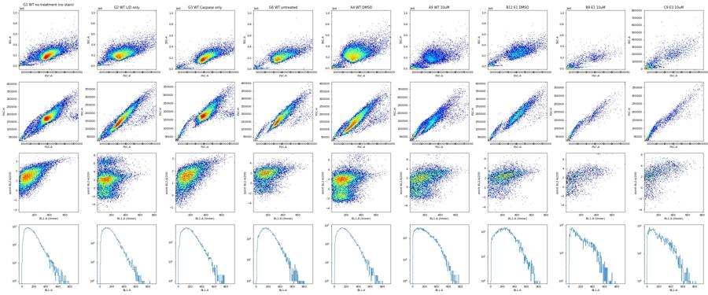
26
tool call · Bash
cd /task; cat > work/grid.py <<'EOF'
import flowkit as fk, pandas as pd, numpy as np, sys, matplotlib
matplotlib.use('Agg'); import matplotlib.pyplot as plt
lay=pd.read_csv('inputs/plate_layout.csv')
mode=sys.argv[1]
fig,axs=plt.subplots(7,12,figsize=(36,21))
for a in axs.flat: a.set_visible(False)
for _,r in lay.iterrows():
w=r.well; ri='ABCDEFG'.index(w[0]); ci=int(w[1:])-1
a=axs[ri,ci]; a.set_visible(True)
s=fk.Sample('inputs/raw/'+r.file)
df=s.as_dataframe(source='raw'); df.columns=[c[0] for c in df.columns]
if mode=='fsc':
a.hist2d(df['FSC-A'],df['SSC-A'],bins=150,range=[[0,720000],[-20000,800000]],cmap='jet',norm=matplotlib.colors.LogNorm())
elif mode=='time':
t=df['Time'].values
a.hist(t,bins=np.arange(0,17.5,0.25),histtype='step')
a2=a.twinx();
# rolling median FSC
bins=np.arange(0,17.5,0.5); idx=np.digitize(t,bins)
med=[np.median(df['FSC-A'].values[idx==i]) if (idx==i).sum()>5 else np.nan for i in range(1,len(bins))]
a2.plot(bins[:-1]+0.25,med,'r-'); a2.set_ylim(0,500000)
elif mode=='bl':
a.hist2d(df['BL1-A'],np.arcsinh(df['BL2-A']/200),bins=120,range=[[0,850],[-5,8.5]],cmap='jet',norm=matplotlib.colors.LogNorm())
elif mode=='singlet':
a.hist2d(df['FSC-A'],df['FSC-H'],bins=150,range=[[0,720000],[0,450000]],cmap='jet',norm=matplotlib.colors.LogNorm())
a.set_title(f"{w} {r['sample']} {r.conditioned_media[:4]} n={len(df)}",fontsize=9)
plt.tight_layout(); plt.savefig(f'work/grid_{mode}.png',dpi=40)
EOF
for m in fsc time; do python3 work/grid.py $m & done; wait27
tool output
(Bash completed with no output)
28
tool call · Read
{
"file_path": "/task/work/grid_fsc.png"
}29
tool output
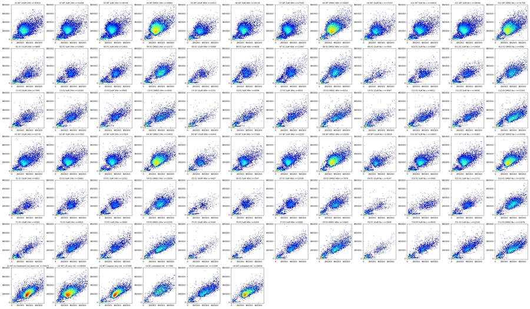
31
tool call · Read
{
"file_path": "/task/work/grid_time.png"
}32
tool output
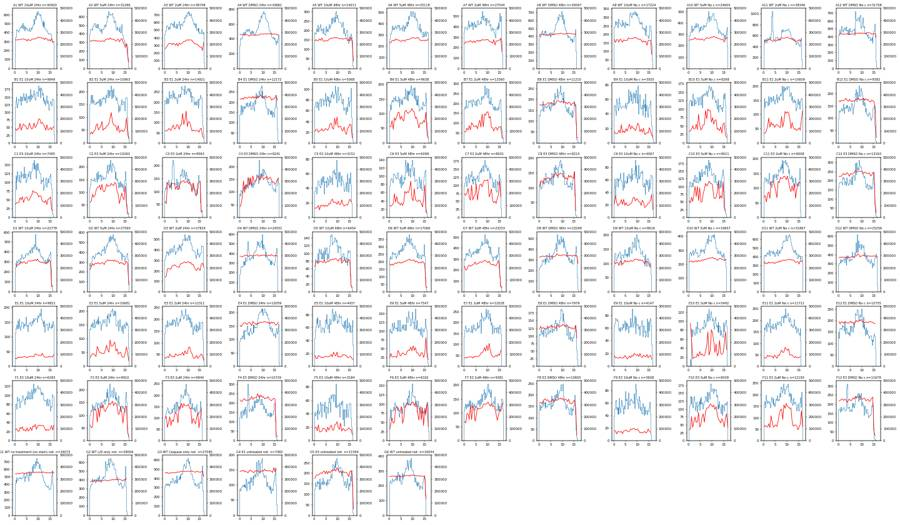
34
agent
Time profiles look stable (no obvious clogs or dry wells). Now I'm working out the gate boundaries: debris/cells, singlets, SYTOX live/dead, then the caspase threshold.
35
tool call · Bash
cd /task; cat > work/plot2.py <<'EOF'
import flowkit as fk, pandas as pd, numpy as np, sys, matplotlib
matplotlib.use('Agg'); import matplotlib.pyplot as plt
lay=pd.read_csv('inputs/plate_layout.csv').set_index('well')
wells=['G1','G2','A4','A9','B12','B9','E1','C9','F2']
fig,ax=plt.subplots(3,len(wells),figsize=(4*len(wells),12))
for i,w in enumerate(wells):
s=fk.Sample('inputs/raw/'+lay.loc[w,'file'])
df=s.as_dataframe(source='raw'); df.columns=[c[0] for c in df.columns]
ax[0,i].hist2d(np.log10(df['FSC-A'].clip(1000)),np.log10(df['SSC-A'].clip(1000)),bins=150,cmap='jet',norm=matplotlib.colors.LogNorm()); ax[0,i].set_title(w+' '+lay.loc[w,'sample'])
ax[0,i].set_xlabel('log FSC-A'); ax[0,i].set_ylabel('log SSC-A')
c=df[(df['FSC-A']>120000)&(df['SSC-A']>50000)]
ax[1,i].hist2d(c['FSC-A'],c['FSC-H'],bins=150,cmap='jet',norm=matplotlib.colors.LogNorm()); ax[1,i].set_xlabel('FSC-A'); ax[1,i].set_ylabel('FSC-H')
sing=c[(c['FSC-H']>c['FSC-A']*0.38)]
ax[2,i].hist(np.arcsinh(sing['BL2-A']/200),bins=150,histtype='step',label='singlets');ax[2,i].set_yscale('log')
ax[2,i].hist(np.arcsinh(df['BL2-A']/200),bins=150,histtype='step',label='all');ax[2,i].legend()
ax[2,i].set_xlabel('asinh(BL2-A/200)')
plt.tight_layout(); plt.savefig('work/peek2.png',dpi=45)
EOF
python3 work/plot2.py36
tool output
(Bash completed with no output)
37
tool call · Read
{
"file_path": "/task/work/peek2.png"
}38
tool output
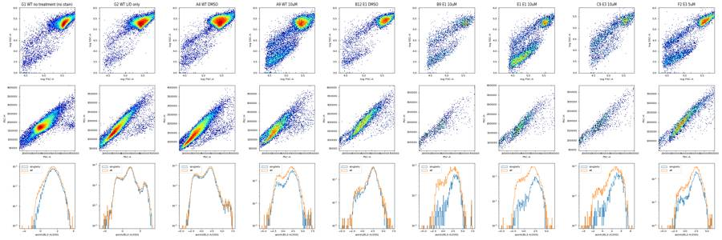
40
tool call · Bash
cd /task; cat > work/explore3.py <<'EOF'
import flowkit as fk, pandas as pd, numpy as np
lay=pd.read_csv('inputs/plate_layout.csv')
out=[]
for _,r in lay.iterrows():
s=fk.Sample('inputs/raw/'+r.file)
df=s.as_dataframe(source='raw'); df.columns=[c[0] for c in df.columns]
n=len(df)
fsc700=(df['FSC-A']>695000).mean()*100
c=df[(df['FSC-A']>110000)&(df['SSC-A']>40000)&(df['SSC-A']<1040000)]
ratio=c['FSC-H']/c['FSC-A']
sing=c[(ratio>0.36)&(c['FSC-A']<695000)]
dead=(sing['BL2-A']>5000)
live=sing[~dead]
out.append(dict(well=r.well,s=r['sample'],cm=r.conditioned_media[:4],n=n,fsc700=round(fsc700,2),cells=len(c),cellpct=round(len(c)/n*100,1),
sing=len(sing),singpct=round(len(sing)/len(c)*100,1),ratio_med=round(ratio.median(),3),
deadpct=round(dead.mean()*100,1),bl2live=round(live['BL2-A'].median()),
bl1_p50=round(live['BL1-A'].median()),bl1_p99=round(live['BL1-A'].quantile(.99)),
fsc_live=round(live['FSC-A'].median()),
bl1_gt450=round((live['BL1-A']>450).mean()*100,2), bl1_gt500=round((live['BL1-A']>500).mean()*100,2)))
o=pd.DataFrame(out); pd.set_option('display.width',250); pd.set_option('display.max_rows',200)
print(o.to_string()); o.to_csv('work/explore3.csv',index=False)
EOF
python3 work/explore3.py41
tool output
well s cm n fsc700 cells cellpct sing singpct ratio_med deadpct bl2live bl1_p50 bl1_p99 fsc_live bl1_gt450 bl1_gt500 0 A1 WT 10uM 24hr 30920 0.13 21277 68.8 20127 94.6 0.498 3.4 535 180 524 282932 3.10 1.47 1 A2 WT 5uM 24hr 31266 0.09 20783 66.5 20183 97.1 0.502 3.1 468 176 509 279532 2.47 1.17 2 A3 WT 2uM 24hr 38748 0.04 22668 58.5 21989 97.0 0.499 2.5 480 176 511 282181 2.70 1.19 3 A4 WT DMSO 24hr 34861 0.09 32863 94.3 31975 97.3 0.498 2.3 368 159 462 287443 1.20 0.54 4 A5 WT 10uM 48hr 14011 0.01 9665 69.0 9382 97.1 0.511 6.1 582 190 518 287902 3.10 1.49 5 A6 WT 5uM 48hr 25118 0.03 17158 68.3 16660 97.1 0.500 3.7 533 175 507 279122 2.31 1.07 6 A7 WT 2uM 48hr 27544 0.04 17643 64.1 17135 97.1 0.496 3.1 530 176 499 279912 2.34 0.93 7 A8 WT DMSO 48hr 30067 0.10 28065 93.3 27298 97.3 0.505 2.3 426 160 462 290505 1.20 0.51 8 A9 WT 10uM No c 17224 0.07 11322 65.7 10935 96.6 0.514 3.9 660 210 527 288116 4.20 1.71 9 A10 WT 5uM No c 24604 0.10 17487 71.1 16811 96.1 0.501 3.5 615 187 510 284656 2.82 1.25 10 A11 WT 2uM No c 38346 0.08 25237 65.8 24301 96.3 0.498 3.0 574 181 503 287118 2.43 1.06 11 A12 WT DMSO No c 31708 0.14 29576 93.3 28317 95.7 0.502 3.0 526 161 469 292852 1.36 0.56 12 B1 E1 10uM 24hr 9849 0.11 4251 43.2 4127 97.1 0.542 0.0 747 280 629 365894 13.96 7.27 13 B2 E1 5uM 24hr 10963 0.08 4904 44.7 4820 98.3 0.514 5.2 992 256 579 346144 7.73 3.72 14 B3 E1 2uM 24hr 14921 0.09 6439 43.2 6339 98.4 0.511 2.9 1042 254 583 367162 7.74 4.11 15 B4 E1 DMSO 24hr 12172 0.16 10297 84.6 10134 98.4 0.510 2.7 948 240 578 399080 5.93 3.14 16 B5 E1 10uM 48hr 5068 0.08 2360 46.6 2299 97.4 0.537 11.8 1160 257 564 323694 7.25 3.70 17 B6 E1 5uM 48hr 9638 0.06 5408 56.1 5280 97.6 0.519 5.8 996 239 557 329599 5.37 2.15 18 B7 E1 2uM 48hr 13360 0.05 6457 48.3 6345 98.3 0.518 5.3 1003 242 552 337030 4.73 2.71 19 B8 E1 DMSO 48hr 11210 0.15 8932 79.7 8783 98.3 0.523 7.2 1012 229 539 360470 3.84 1.84 20 B9 E1 10uM No c 3505 0.17 1507 43.0 1469 97.5 0.551 15.8 1577 287 589 338361 10.35 4.93 21 B10 E1 5uM No c 8268 0.05 4098 49.6 4009 97.8 0.530 7.6 1152 263 590 358829 8.75 4.51 22 B11 E1 2uM No c 10609 0.08 5219 49.2 5123 98.2 0.533 6.3 1107 252 591 360900 7.83 3.77 23 B12 E1 DMSO No c 9382 0.22 7928 84.5 7744 97.7 0.523 5.0 1033 249 591 377762 7.26 3.85 24 C1 E3 10uM 24hr 7495 0.23 3898 52.0 3779 96.9 0.533 11.5 1341 248 613 334988 9.74 5.14 25 C2 E3 5uM 24hr 10263 0.15 5888 57.4 5795 98.4 0.526 8.9 1104 233 619 355547 8.28 4.26 26 C3 E3 2uM 24hr 8563 0.26 5104 59.6 5013 98.2 0.522 8.8 1206 234 612 366793 7.59 4.18 27 C4 E3 DMSO 24hr 9241 0.30 6234 67.5 6121 98.2 0.541 13.2 1243 232 616 390004 7.83 4.74 28 C5 E3 10uM 48hr 3151 0.06 1455 46.2 1435 98.6 0.565 25.8 1700 243 611 323086 8.83 4.79 29 C6 E3 5uM 48hr 6099 0.21 3186 52.2 3129 98.2 0.534 13.0 1362 246 604 354625 8.08 4.63 30 C7 E3 2uM 48hr 8001 0.31 4550 56.9 4460 98.0 0.531 9.6 1336 245 636 379271 9.22 5.75 31 C8 E3 DMSO 48hr 8215 0.45 6024 73.3 5920 98.3 0.542 13.6 1252 230 622 396420 7.37 4.46 32 C9 E3 10uM No c 4067 0.22 1949 47.9 1898 97.4 0.549 21.1 1729 255 586 342637 10.01 4.47 33 C10 E3 5uM No c 8011 0.31 4497 56.1 4397 97.8 0.537 13.4 1410 251 634 370011 9.00 5.14 34 C11 E3 2uM No c 9008 0.26 5302 58.9 5216 98.4 0.532 7.6 1320 … [7,271 more characters not shown]
43
tool call · Bash
cd /task; cat > work/plot3.py <<'EOF'
import flowkit as fk, pandas as pd, numpy as np, sys, matplotlib
matplotlib.use('Agg'); import matplotlib.pyplot as plt
lay=pd.read_csv('inputs/plate_layout.csv').set_index('well')
wells=['G1','G2','G3','G6','A4','A1','B1','B9','E1','B5','C5','C4']
fig,ax=plt.subplots(3,len(wells),figsize=(3.6*len(wells),11))
for i,w in enumerate(wells):
s=fk.Sample('inputs/raw/'+lay.loc[w,'file'])
df=s.as_dataframe(source='raw'); df.columns=[c[0] for c in df.columns]
c=df[(df['FSC-A']>110000)&(df['SSC-A']>40000)&(df['SSC-A']<1040000)]
sing=c[(c['FSC-H']/c['FSC-A']>0.36)&(c['FSC-A']<695000)]
ax[0,i].hist2d(sing['FSC-A'],np.arcsinh(sing['BL2-A']/200),bins=120,range=[[100000,720000],[-5,8.5]],cmap='jet',norm=matplotlib.colors.LogNorm()); ax[0,i].set_title(w+' '+lay.loc[w,'sample'],fontsize=9)
ax[0,i].axhline(np.arcsinh(5000/200),color='k')
ax[1,i].hist2d(sing['FSC-A'],sing['BL1-A'],bins=120,range=[[100000,720000],[0,850]],cmap='jet',norm=matplotlib.colors.LogNorm())
ax[2,i].hist2d(df['FSC-A'],np.arcsinh(df['BL2-A']/200),bins=120,range=[[0,720000],[-5,8.5]],cmap='jet',norm=matplotlib.colors.LogNorm()); ax[2,i].set_xlabel('FSC-A all events')
ax[0,0].set_ylabel('asinh BL2/200 (singlets)'); ax[1,0].set_ylabel('BL1-A (singlets)'); ax[2,0].set_ylabel('asinh BL2/200 all')
plt.tight_layout(); plt.savefig('work/peek3.png',dpi=45)
EOF
python3 work/plot3.py44
tool output
(Bash completed with no output)
45
tool call · Read
{
"file_path": "/task/work/peek3.png"
}46
tool output
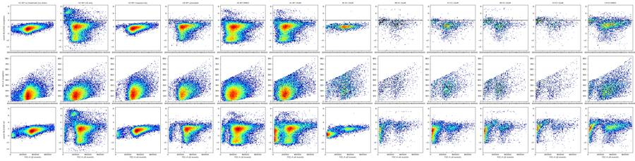
48
tool call · Bash
cd /task; cat > work/plot4.py <<'EOF'
import flowkit as fk, pandas as pd, numpy as np, sys, matplotlib
matplotlib.use('Agg'); import matplotlib.pyplot as plt
lay=pd.read_csv('inputs/plate_layout.csv')
lay=lay[lay.well!='B1']
groups=[('WT','DMSO'),('WT','10uM'),('E1','DMSO'),('E1','10uM'),('E3','DMSO'),('E3','10uM'),('E3','2uM')]
fig,ax=plt.subplots(3,len(groups),figsize=(4.5*len(groups),13))
for i,(cl,dose) in enumerate(groups):
sub=lay[(lay.cell_line==cl)&(lay.camptothecin==dose)&(lay.well.str[0]!='G')]
dfs=[]
for f in sub.file:
s=fk.Sample('inputs/raw/'+f); df=s.as_dataframe(source='raw'); df.columns=[c[0] for c in df.columns]; dfs.append(df)
df=pd.concat(dfs)
c=df[(df['FSC-A']>110000)&(df['SSC-A']>40000)&(df['SSC-A']<1040000)]
sing=c[(c['FSC-H']/c['FSC-A']>0.36)&(c['FSC-A']<695000)]
ax[0,i].hist2d(sing['FSC-A'],np.arcsinh(sing['BL2-A']/200),bins=150,range=[[100000,720000],[-5,8.5]],cmap='jet',norm=matplotlib.colors.LogNorm()); ax[0,i].set_title(f'{cl} {dose} singlets n={len(sing)}')
for y in [2000,3000,5000]: ax[0,i].axhline(np.arcsinh(y/200),color='k',lw=0.5)
ax[1,i].hist2d(np.log10(df['FSC-A'].clip(1e4)),np.arcsinh(df['BL2-A']/200),bins=150,range=[[4.3,5.9],[-5,8.5]],cmap='jet',norm=matplotlib.colors.LogNorm()); ax[1,i].set_xlabel('log FSC all')
for y in [2000,3000,5000]: ax[1,i].axhline(np.arcsinh(y/200),color='k',lw=0.5)
ax[2,i].hist(np.arcsinh(sing['BL2-A']/200),bins=np.linspace(-5,8.5,200),histtype='step'); ax[2,i].set_yscale('log')
for y in [2000,3000,5000]: ax[2,i].axvline(np.arcsinh(y/200),color='k',lw=0.5)
plt.tight_layout(); plt.savefig('work/peek4.png',dpi=45)
EOF
python3 work/plot4.py49
tool output
(Bash completed with no output)
50
tool call · Read
{
"file_path": "/task/work/peek4.png"
}51
tool output
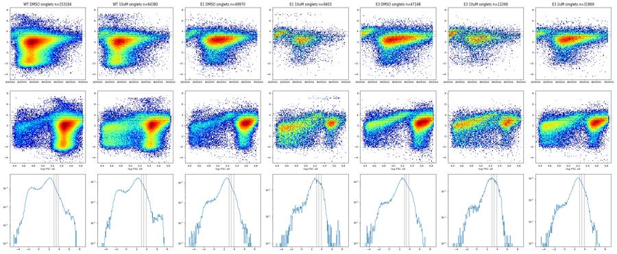
53
agent
B1 stands out: its SYTOX channel looks like the unstained control, so it probably never got the viability dye. Next I'm checking for other per-well problems: E10 looks odd, plus event-rate stability.
54
tool call · Bash
cd /task; cat > work/qc.py <<'EOF'
import flowkit as fk, pandas as pd, numpy as np
lay=pd.read_csv('inputs/plate_layout.csv')
out=[]
for _,r in lay.iterrows():
s=fk.Sample('inputs/raw/'+r.file)
df=s.as_dataframe(source='raw'); df.columns=[c[0] for c in df.columns]
t=df['Time'].values
bins=np.arange(0,16.0,0.5); h,_=np.histogram(t,bins)
hh=h[1:-1]
gaps=np.diff(np.sort(t))
out.append(dict(well=r.well,s=r['sample'],n=len(df),tstart=t.min(),tend=t.max(),
rate_cv=round(hh.std()/hh.mean(),2), rate_min_rel=round(hh.min()/np.median(hh),2), rate_max_rel=round(hh.max()/np.median(hh),2),
maxgap=round(gaps.max(),3),
bl2_neg_pct=round((df['BL2-A']<=0).mean()*100,1), bl2w_pos_pct=round((df['BL2-W']>0).mean()*100,1),
bl2_gt20k=round((df['BL2-A']>20000).mean()*100,2)))
o=pd.DataFrame(out); pd.set_option('display.width',250); pd.set_option('display.max_rows',200)
print(o.to_string()); o.to_csv('work/qc.csv',index=False)
EOF
python3 work/qc.py55
tool output
well s n tstart tend rate_cv rate_min_rel rate_max_rel maxgap bl2_neg_pct bl2w_pos_pct bl2_gt20k 0 A1 WT 10uM 30920 0.014 16.721 0.13 0.85 1.35 0.006 27.4 19.9 0.82 1 A2 WT 5uM 31266 0.014 16.571 0.15 0.65 1.31 0.015 28.4 16.9 0.83 2 A3 WT 2uM 38748 0.014 16.778 0.11 0.85 1.26 0.004 29.0 14.3 0.49 3 A4 WT DMSO 34861 0.015 16.734 0.19 0.79 1.50 0.006 28.6 18.6 0.77 4 A5 WT 10uM 14011 0.016 16.581 0.14 0.70 1.38 0.027 24.0 22.5 1.82 5 A6 WT 5uM 25118 0.014 16.726 0.14 0.76 1.36 0.006 24.9 18.2 0.60 6 A7 WT 2uM 27544 0.015 16.495 0.10 0.75 1.25 0.009 25.7 16.6 0.46 7 A8 WT DMSO 30067 0.016 15.853 0.20 0.76 1.50 0.007 25.2 18.5 0.57 8 A9 WT 10uM 17224 0.016 16.515 0.13 0.70 1.24 0.027 24.2 23.4 0.35 9 A10 WT 5uM 24604 0.014 16.639 0.13 0.82 1.31 0.007 22.3 21.3 0.40 10 A11 WT 2uM 38346 0.013 16.331 0.17 0.83 1.53 0.005 24.4 17.3 0.33 11 A12 WT DMSO 31708 0.014 16.608 0.17 0.75 1.38 0.057 21.3 19.7 0.62 12 B1 E1 10uM 9849 0.014 16.792 0.10 0.81 1.24 0.015 10.8 3.2 0.01 13 B2 E1 5uM 10963 0.015 16.731 0.11 0.79 1.16 0.034 20.5 17.2 0.19 14 B3 E1 2uM 14921 0.014 16.753 0.10 0.84 1.17 0.025 18.6 12.6 0.05 15 B4 E1 DMSO 12172 0.015 16.570 0.18 0.74 1.50 0.062 9.4 17.8 0.16 16 B5 E1 10uM 5068 0.015 16.550 0.12 0.78 1.28 0.091 16.8 28.0 0.87 17 B6 E1 5uM 9638 0.014 16.830 0.13 0.78 1.27 0.077 16.5 23.0 0.25 18 B7 E1 2uM 13360 0.014 16.719 0.12 0.81 1.27 0.032 19.2 20.1 0.17 19 B8 E1 DMSO 11210 0.014 16.671 0.18 0.76 1.45 0.107 12.1 34.0 0.52 20 B9 E1 10uM 3505 0.026 16.823 0.14 0.77 1.28 0.090 17.5 36.2 0.86 21 B10 E1 5uM 8268 0.014 16.540 0.14 0.79 1.33 0.069 17.7 26.3 0.16 22 B11 E1 2uM 10609 0.015 16.705 0.12 0.83 1.26 0.014 17.5 22.7 0.17 23 B12 E1 DMSO 9382 0.015 16.354 0.20 0.69 1.51 0.096 10.4 28.5 0.56 24 C1 E3 10uM 7495 0.019 16.445 0.14 0.78 1.30 0.065 12.9 38.9 0.05 25 C2 E3 5uM 10263 0.015 16.756 0.16 0.75 1.35 0.161 13.6 34.9 0.16 26 C3 E3 2uM 8563 0.014 16.210 0.19 0.64 1.60 0.065 11.2 36.4 0.29 27 C4 E3 DMSO 9241 0.014 16.738 0.17 0.74 1.33 0.027 7.9 45.4 0.68 28 C5 E3 10uM 3151 0.014 15.847 0.13 0.74 1.27 0.037 8.0 50.5 0.29 29 C6 E3 5uM 6099 0.017 16.406 0.15 0.74 1.41 0.128 9.0 41.6 0.33 30 C7 E3 2uM 8001 0.018 15.962 0.16 0.65 1.37 0.033 8.8 35.5 0.26 31 C8 E3 DMSO 8215 0.015 16.038 0.18 0.77 1.44 0.102 6.4 45.4 0.78 32 C9 E3 10uM 4067 0.015 16.742 0.15 0.68 1.26 0.045 10.8 46.3 0.39 33 C10 E3 5uM 8011 0.018 16.063 0.16 0.78 1.35 0.060 10.8 43.0 0.36 34 C11 E3 2uM 9008 0.019 15.913 0.17 0.80 1.41 0.020 9.9 30.6 0.14 35 C12 E3 DMSO 13163 0.021 16.730 0.18 0.76 1.42 0.380 7.8 37.8 0.21 36 D1 WT 10uM 22778 0.014 16.576 0.15 0.80 1.45 0.154 21.0 20.8 0.18 37 D2 WT 5uM 27593 0.014 16.720 0.16 0.72 1.34 0.011 23.4 16.8 0.14 38 D3 WT 2uM 27824 0.014 16.714 0.13 0.82 1.29 0.006 22.2 16.5 0.38 39 D4 WT DMSO 24551 0.014 16.284 0.21 0.72 1.45 0.013 21.3 17.9 0.68 40 D5 WT 10uM 6454 0.015 16.346 0.18 0.76 1.43 0.193 18.1 24.8 0.34 41 D6 WT 5uM … [5,217 more characters not shown]
57
tool call · Bash
cd /task; cat > work/plot_time2.py <<'EOF'
import flowkit as fk, pandas as pd, numpy as np, sys, matplotlib
matplotlib.use('Agg'); import matplotlib.pyplot as plt
lay=pd.read_csv('inputs/plate_layout.csv').set_index('well')
wells=sys.argv[1:]
fig,ax=plt.subplots(4,len(wells),figsize=(4.5*len(wells),13))
for i,w in enumerate(wells):
s=fk.Sample('inputs/raw/'+lay.loc[w,'file'])
df=s.as_dataframe(source='raw'); df.columns=[c[0] for c in df.columns]
t=df['Time'].values
ax[0,i].hist(t,bins=np.arange(0,17,0.1),histtype='step'); ax[0,i].set_title(w+' '+lay.loc[w,'sample'])
ax[1,i].scatter(t,np.log10(df['FSC-A'].clip(1e4)),s=1,alpha=0.3); ax[1,i].set_ylabel('log FSC')
ax[2,i].scatter(t,np.arcsinh(df['BL2-A']/200),s=1,alpha=0.3); ax[2,i].set_ylabel('asinh BL2')
ax[3,i].scatter(t,df['BL1-A'],s=1,alpha=0.3); ax[3,i].set_ylabel('BL1')
print(w, 'events in t<1s:',(t<1).sum(),' 1-2s:',((t>=1)&(t<2)).sum(), 'first 10 times', np.round(np.sort(t)[:5],3))
h,_=np.histogram(t,np.arange(0,17,0.25)); print(' rate/0.25s:',h.tolist())
plt.tight_layout(); plt.savefig('work/time2.png',dpi=45)
EOF
python3 work/plot_time2.py E10 B10 E2 C12 G6 D558
tool output
E10 events in t<1s: 15 1-2s: 257 first 10 times [0.54 0.541 0.541 0.544 0.547] rate/0.25s: [0, 0, 15, 0, 26, 83, 67, 81, 76, 73, 70, 84, 87, 74, 99, 85, 84, 83, 77, 75, 80, 83, 83, 86, 87, 84, 103, 99, 87, 93, 102, 116, 100, 109, 127, 110, 103, 117, 122, 110, 101, 105, 90, 83, 103, 110, 95, 87, 92, 78, 98, 75, 90, 89, 69, 80, 71, 67, 66, 97, 78, 91, 98, 103, 89, 44, 3] B10 events in t<1s: 494 1-2s: 490 first 10 times [0.014 0.016 0.017 0.017 0.02 ] rate/0.25s: [116, 126, 127, 125, 111, 123, 110, 146, 132, 110, 130, 117, 119, 124, 134, 135, 112, 130, 137, 125, 117, 115, 140, 106, 144, 141, 145, 148, 143, 146, 156, 138, 149, 167, 166, 170, 160, 155, 166, 160, 132, 156, 139, 137, 129, 121, 125, 111, 101, 131, 111, 93, 111, 109, 112, 101, 105, 95, 108, 145, 132, 147, 112, 45, 28, 9, 2] E2 events in t<1s: 568 1-2s: 627 first 10 times [0.019 0.024 0.027 0.028 0.033] rate/0.25s: [136, 135, 152, 145, 160, 142, 154, 171, 141, 150, 163, 156, 170, 153, 183, 158, 163, 163, 157, 133, 151, 155, 170, 161, 160, 170, 170, 150, 146, 184, 175, 192, 171, 159, 190, 182, 199, 202, 208, 190, 184, 203, 187, 201, 175, 148, 149, 151, 166, 129, 145, 171, 145, 143, 129, 149, 120, 148, 155, 139, 143, 146, 161, 150, 157, 148, 67] C12 events in t<1s: 735 1-2s: 792 first 10 times [0.021 0.026 0.029 0.03 0.034] rate/0.25s: [162, 189, 190, 194, 195, 192, 182, 223, 211, 216, 179, 198, 190, 173, 219, 203, 183, 177, 189, 208, 201, 182, 221, 182, 228, 232, 221, 204, 252, 298, 236, 301, 260, 272, 264, 313, 287, 277, 275, 259, 237, 236, 229, 218, 226, 218, 187, 162, 174, 183, 157, 152, 178, 174, 156, 172, 158, 161, 203, 212, 250, 185, 69, 16, 9, 0, 3] G6 events in t<1s: 905 1-2s: 932 first 10 times [0.014 0.015 0.016 0.016 0.016] rate/0.25s: [226, 225, 237, 217, 217, 246, 238, 231, 236, 243, 254, 239, 269, 241, 294, 276, 275, 237, 273, 237, 216, 213, 286, 246, 276, 274, 294, 322, 318, 326, 374, 339, 306, 352, 370, 370, 326, 389, 315, 305, 304, 281, 275, 229, 255, 230, 211, 197, 225, 204, 224, 197, 174, 203, 194, 192, 181, 225, 247, 270, 254, 135, 14, 3, 1, 1, 0] D5 events in t<1s: 305 1-2s: 338 first 10 times [0.015 0.021 0.024 0.028 0.031] rate/0.25s: [58, 85, 81, 81, 75, 82, 101, 80, 112, 103, 100, 110, 86, 101, 87, 105, 82, 115, 97, 109, 110, 116, 84, 99, 88, 102, 121, 147, 145, 149, 124, 128, 130, 132, 141, 140, 138, 130, 135, 120, 102, 121, 117, 114, 118, 94, 81, 92, 100, 101, 87, 91, 84, 76, 89, 86, 70, 107, 103, 107, 107, 45, 16, 11, 5, 1, 0]
59
tool call · Read
{
"file_path": "/task/work/time2.png"
}60
tool output
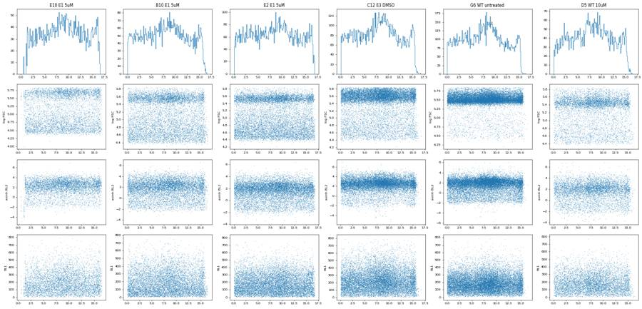
62
tool call · Bash
cd /task; cat > work/bl2q.py <<'EOF'
import flowkit as fk, pandas as pd, numpy as np
lay=pd.read_csv('inputs/plate_layout.csv')
def load(wells):
dfs=[]
for f in lay[lay.well.isin(wells)].file:
s=fk.Sample('inputs/raw/'+f); df=s.as_dataframe(source='raw'); df.columns=[c[0] for c in df.columns]; dfs.append(df)
df=pd.concat(dfs)
c=df[(df['FSC-A']>110000)&(df['SSC-A']>40000)&(df['SSC-A']<1040000)]
return c[(c['FSC-H']/c['FSC-A']>0.38)&(c['FSC-A']<690000)]
sets={'G1unst':['G1'],'G3casp':['G3'],'G2LD':['G2'],'G6':['G6'],
'WT_DMSO':[w for w in lay[(lay.cell_line=='WT')&(lay.camptothecin=='DMSO')].well],
'E1_DMSO':[w for w in lay[(lay.cell_line=='E1')&(lay.camptothecin=='DMSO')].well],
'E3_DMSO':[w for w in lay[(lay.cell_line=='E3')&(lay.camptothecin=='DMSO')].well],
'KO_10uM':[w for w in lay[(lay.cell_line!='WT')&(lay.camptothecin=='10uM')].well if w!='B1']}
bins=[110e3,200e3,300e3,400e3,500e3,600e3,690e3]
for k,w in sets.items():
d=load(w); print(k,len(d), 'ratio q', np.round(np.percentile(d['FSC-H']/d['FSC-A'],[0.1,1,50,99,99.9]),3))
for lo,hi in zip(bins[:-1],bins[1:]):
x=d[(d['FSC-A']>=lo)&(d['FSC-A']<hi)]
if len(x)<20: continue
q=np.percentile(x['BL2-A'],[50,90,95,99,99.5]); qb=np.percentile(x['BL1-A'],[50,95,99,99.5])
print(' FSC %3d-%3dk n=%6d BL2 q50/90/95/99/99.5: %s | BL1 q50/95/99/99.5: %s'%(lo/1e3,hi/1e3,len(x),' '.join('%6.0f'%v for v in q),' '.join('%4.0f'%v for v in qb)))
EOF
python3 work/bl2q.py63
tool output
G1unst 31193 ratio q [0.381 0.391 0.492 0.694 0.845] FSC 110-200k n= 855 BL2 q50/90/95/99/99.5: 353 728 862 1383 1650 | BL1 q50/95/99/99.5: 103 234 313 326 FSC 200-300k n= 3129 BL2 q50/90/95/99/99.5: 327 758 960 1472 1703 | BL1 q50/95/99/99.5: 110 267 356 391 FSC 300-400k n= 18989 BL2 q50/90/95/99/99.5: 377 753 930 1414 1646 | BL1 q50/95/99/99.5: 125 280 373 415 FSC 400-500k n= 6588 BL2 q50/90/95/99/99.5: 544 1032 1293 1846 2077 | BL1 q50/95/99/99.5: 165 350 454 502 FSC 500-600k n= 1330 BL2 q50/90/95/99/99.5: 726 1500 1823 2357 2516 | BL1 q50/95/99/99.5: 207 452 595 630 FSC 600-690k n= 302 BL2 q50/90/95/99/99.5: 1074 2172 2710 3136 3268 | BL1 q50/95/99/99.5: 284 600 701 723 G3casp 24776 ratio q [0.382 0.396 0.501 0.635 0.849] FSC 110-200k n= 168 BL2 q50/90/95/99/99.5: 702 1185 1315 1651 1960 | BL1 q50/95/99/99.5: 201 373 396 399 FSC 200-300k n= 1561 BL2 q50/90/95/99/99.5: 378 765 1039 1472 1702 | BL1 q50/95/99/99.5: 154 372 434 450 FSC 300-400k n= 15476 BL2 q50/90/95/99/99.5: 424 797 953 1363 1553 | BL1 q50/95/99/99.5: 153 332 439 468 FSC 400-500k n= 6017 BL2 q50/90/95/99/99.5: 607 1093 1317 1862 2029 | BL1 q50/95/99/99.5: 204 406 524 546 FSC 500-600k n= 1283 BL2 q50/90/95/99/99.5: 805 1503 1769 2453 2626 | BL1 q50/95/99/99.5: 256 508 610 650 FSC 600-690k n= 271 BL2 q50/90/95/99/99.5: 1054 1875 2193 2636 2696 | BL1 q50/95/99/99.5: 326 628 724 749 G2LD 25887 ratio q [0.382 0.403 0.509 0.682 0.83 ] FSC 110-200k n= 2184 BL2 q50/90/95/99/99.5: 19442 91754 119009 193206 221946 | BL1 q50/95/99/99.5: 120 270 337 362 FSC 200-300k n= 11556 BL2 q50/90/95/99/99.5: 442 3182 16036 91451 107030 | BL1 q50/95/99/99.5: 122 270 360 386 FSC 300-400k n= 8481 BL2 q50/90/95/99/99.5: 560 2020 3748 27747 60365 | BL1 q50/95/99/99.5: 154 320 413 445 FSC 400-500k n= 2776 BL2 q50/90/95/99/99.5: 741 2432 4157 28434 50188 | BL1 q50/95/99/99.5: 196 393 500 530 FSC 500-600k n= 689 BL2 q50/90/95/99/99.5: 1060 3488 6072 64972 84802 | BL1 q50/95/99/99.5: 256 530 616 634 FSC 600-690k n= 201 BL2 q50/90/95/99/99.5: 1515 8510 18715 66408 74706 | BL1 q50/95/99/99.5: 330 607 692 715 G6 14768 ratio q [0.382 0.401 0.507 0.639 0.819] FSC 110-200k n= 188 BL2 q50/90/95/99/99.5: 2367 5803 6941 21316 38408 | BL1 q50/95/99/99.5: 226 375 404 412 FSC 200-300k n= 4549 BL2 q50/90/95/99/99.5: 423 1322 1809 4093 5427 | BL1 q50/95/99/99.5: 148 326 405 423 FSC 300-400k n= 6528 BL2 q50/90/95/99/99.5: 543 1422 1835 3321 4889 | BL1 q50/95/99/99.5: 174 354 442 471 FSC 400-500k n= 2515 BL2 q50/90/95/99/99.5: 788 1712 2187 4548 6715 | BL1 q50/95/99/99.5: 226 433 527 547 FSC 500-600k n= 771 BL2 q50/90/95/99/99.5: 1110 2346 2972 5139 6368 | BL1 q50/95/99/99.5: 265 530 636 648 FSC 600-690k n= 217 BL2 q50/90/95/99/99.5: 1463 2841 3558 10122 11013 | BL1 q50/95/99/99.5: 349 667 737 754 WT_DMSO 152325 ratio q [0.383 0.402 0.51 0.704 0.842] FSC 110-200k n= 9282 BL2 q50/90/95/99/99.5: 675 5239 8146 58663 84490 | BL1 q50/95/99/99.5: 171 356 393 401 FSC 200-300k n= 71032 BL2 q50/90/95/99/99.5: 383 1647 2729 10961 28411 | BL1 q50/95/99/99.5: 147 325 408 427 FSC 300-400k n= 50451 BL2 q50/90/95/99/99.5: 590 1874 2840 9016 16604 | BL1 q50/95/99/99.5: 177 372 467 487 FSC 400-500k n= 16004 BL2 q50/90/95/99/99.5: 849 2428 3507 10568 19196 | BL1 q50/95/99/99.5: 217 452 549 567 FSC 500-600k n= 4342 BL2 q50/90/95/99/99.5: 1249 3089 4667 13415 23382 | BL1 q50/95/99/99.5: 272 553 644 665 FSC 600-690k n= 1214 BL2 q50/90/95/99/99.5: 1690 4375 7112 26913 40437 | BL1 q50/95/99/99.5: 332 658 751 760 E1_DMSO 49706 ratio q [0.384 0.404 0.525 0.789 0.866] FSC 110-200k n= 2310 BL2 q50/90/95/99/99.5: 3495 7542 9320 16825 39272 | BL1 q50/95/99/99.5: 235 378 398 403 FSC 200-300k n= 6751 BL2 q50/90/95/99/99.5: 878 4264 6380 12732 21906 | BL1 q50/95/99/99.5: 221 411 449 458 FSC 300-400k n= 20213 BL2 q50/90/95/99/99.5: 902 2418 3546 8861 12080 | BL1 q50/95/99/99.5: 229 428 494 510 FSC 400-500k n= 14264 BL2 q50/90/95/99/99.5: 1122 2719 3883 8321 12031 | BL1 q50/95/99/99.5: 267 490 560 581 FSC 500-600k n= 4889 BL2 q50/90/95/99/99.5: 1496 3667 5466 11348 15782 | BL1 q50/95/99/99.5: 321 591 659 676 FSC 600-690k n= 1279 BL2 q50/90/95/99/99.5: 2050 4767 6678 15283 18579 | BL1 q50/95/99/99.5: 416 690 745 765 E3_DMSO 46932 ratio q [0.386 0.416 0.544 0.8 0.876] FSC 110-200k n= 3509 BL2 q50/90/95/99/99.5: 4274 8657 10325 14509 18759 | BL1 q50/95/99/99.5: 238 375 399 402 FSC 200-300k n= 5571 BL2 q50/90/95/99/99.5: 959 6409 8692 13895 18271 | BL1 q50/95/99/99.5: 198 407 446 459 FSC 300-400k n= 15952 BL2 q50/90/95/99/99.5: 942 2736 4349 10946 15976 | BL1 q50/95/99/99.5: 207 423 492 504 FSC 400-500k n= 12061 BL2 q50/90/95/99/99.5: 1263 3456 5311 13079 19233 | BL1 q50/95/99/99.5: 257 501 568 587 FSC 500-600k n= 6917 BL2 q50/90/95/99/99.5: 1623 4425 6799 14273 19038 | BL1 q50/95/99/99.5: 319 596 659 675 FSC 600-690k n= 2922 BL2 q50/90/95/99/99.5: 2182 5770 8589 17897 23855 | BL1 q50/95/99/99.5: 390 702 767 786 KO_10uM 21470 ratio q [0.382 0.399 0.55 0.849 0.899] FSC 110-200k n= 4302 BL2 q50/90/95/99/99.5: 3412 7396 9277 13889 20276 | BL1 q50/95/99/99.5: 240 382 403 406 FSC 200-300k n= 4470 BL2 q50/90/95/99/99.5: 1341 6018 7909 12492 15790 | BL1 q50/95/99/99.5: 257 429 459 465 FSC 300-400k n= 7198 BL2 q50/90/95/99/99.5: 1053 3463 4841 9573 … [422 more characters not shown]
65
tool call · Bash
cd /task; cat > work/plot5.py <<'EOF'
import flowkit as fk, pandas as pd, numpy as np, sys, matplotlib
matplotlib.use('Agg'); import matplotlib.pyplot as plt
lay=pd.read_csv('inputs/plate_layout.csv').set_index('well')
wells=['G1','G3','A4','A1','E12','B9']
fig,ax=plt.subplots(4,len(wells),figsize=(4.5*len(wells),15))
for i,w in enumerate(wells):
s=fk.Sample('inputs/raw/'+lay.loc[w,'file'])
df=s.as_dataframe(source='raw'); df.columns=[c[0] for c in df.columns]
ax[0,i].hist(df['BL1-H'],bins=np.arange(0,760,2),histtype='step'); ax[0,i].set_yscale('log'); ax[0,i].set_title(w+' '+lay.loc[w,'sample']); ax[0,i].set_xlabel('BL1-H')
ax[1,i].hist2d(df['FSC-H'],df['BL1-H'],bins=150,cmap='jet',norm=matplotlib.colors.LogNorm()); ax[1,i].set_xlabel('FSC-H'); ax[1,i].set_ylabel('BL1-H')
ax[2,i].hist2d(df['FSC-W'],df['BL1-A']/df['BL1-H'].clip(1),bins=150,range=[[0,400],[0,5]],cmap='jet',norm=matplotlib.colors.LogNorm()); ax[2,i].set_xlabel('FSC-W'); ax[2,i].set_ylabel('BL1-A/BL1-H')
ax[3,i].hist2d(df['BL1-H'],df['BL1-A'],bins=150,cmap='jet',norm=matplotlib.colors.LogNorm()); ax[3,i].set_xlabel('BL1-H'); ax[3,i].set_ylabel('BL1-A')
plt.tight_layout(); plt.savefig('work/peek5.png',dpi=45)
EOF
python3 work/plot5.py66
tool output
(Bash completed with no output)
67
tool call · Read
{
"file_path": "/task/work/peek5.png"
}68
tool output
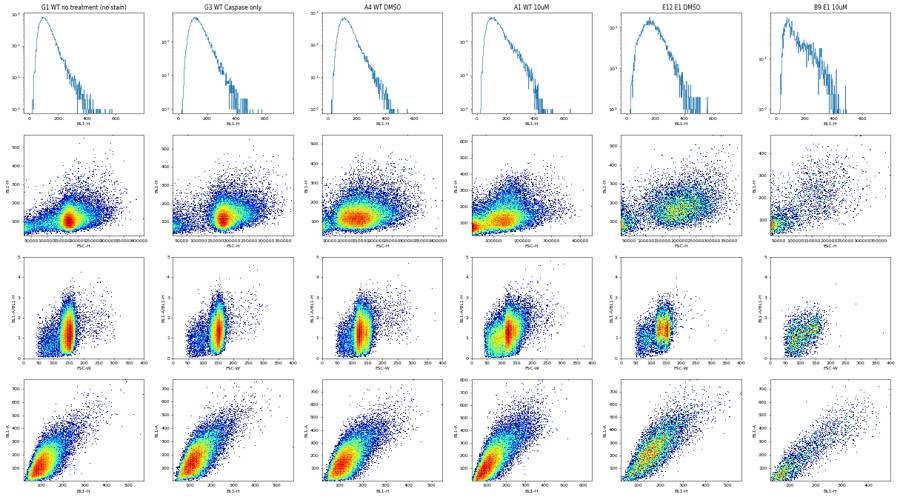
70
thinking
BL1 isn't saturated and shows no caspase-positive population, so that conclusion stands. I'm now working on the live/dead boundary, since SYTOX separation in BL2 is weak.
71
tool call · Bash
cd /task; cat > work/plot6.py <<'EOF'
import flowkit as fk, pandas as pd, numpy as np, sys, matplotlib
matplotlib.use('Agg'); import matplotlib.pyplot as plt
lay=pd.read_csv('inputs/plate_layout.csv')
def load(wells):
dfs=[]
for f in lay[lay.well.isin(wells)].file:
s=fk.Sample('inputs/raw/'+f); df=s.as_dataframe(source='raw'); df.columns=[c[0] for c in df.columns]; dfs.append(df)
df=pd.concat(dfs)
c=df[(df['FSC-A']>110000)&(df['SSC-A']>40000)&(df['SSC-A']<1040000)]
return c[(c['FSC-H']/c['FSC-A']>0.38)&(c['FSC-A']<690000)]
sets={'G1unst':['G1'],'G3casp':['G3'],'G2LD':['G2'],'G6 WT untr':['G6'],
'WT_DMSO':[w for w in lay[(lay.cell_line=='WT')&(lay.camptothecin=='DMSO')].well],
'WT_10uM':[w for w in lay[(lay.cell_line=='WT')&(lay.camptothecin=='10uM')].well],
'E1_DMSO':[w for w in lay[(lay.cell_line=='E1')&(lay.camptothecin=='DMSO')].well],
'E3_DMSO':[w for w in lay[(lay.cell_line=='E3')&(lay.camptothecin=='DMSO')].well],
'KO_10uM':[w for w in lay[(lay.cell_line!='WT')&(lay.camptothecin=='10uM')].well if w!='B1']}
fig,ax=plt.subplots(2,len(sets),figsize=(4.5*len(sets),9))
x=np.array([110e3,690e3])
for i,(k,w) in enumerate(sets.items()):
d=load(w)
ax[0,i].hist2d(d['FSC-A'],np.arcsinh(d['BL2-A']/200),bins=[120,160],range=[[100000,700000],[-5,8.5]],cmap='jet',norm=matplotlib.colors.LogNorm()); ax[0,i].set_title(k)
for (y0,y1),col in [((3000,6000),'k'),((4000,8000),'m'),((2500,5000),'w')]:
ax[0,i].plot(x,np.arcsinh(np.array([y0,y1])/200),color=col,lw=1)
ax[1,i].hist2d(d['FSC-A'],d['BL1-A'],bins=[120,100],range=[[100000,700000],[0,850]],cmap='jet',norm=matplotlib.colors.LogNorm())
ax[1,i].plot(x,247.5+0.00075*x,'k')
plt.tight_layout(); plt.savefig('work/peek6.png',dpi=45)
EOF
python3 work/plot6.py72
tool output
(Bash completed with no output)
73
tool call · Read
{
"file_path": "/task/work/peek6.png"
}74
tool output
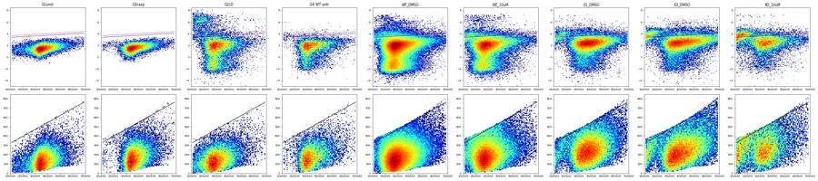
76
tool call · Bash
cd /task; cat > work/ceiling.py <<'EOF'
import flowkit as fk, pandas as pd, numpy as np, sys, matplotlib
matplotlib.use('Agg'); import matplotlib.pyplot as plt
lay=pd.read_csv('inputs/plate_layout.csv')
def load(wells, gate=True):
dfs=[]
for f in lay[lay.well.isin(wells)].file:
s=fk.Sample('inputs/raw/'+f); df=s.as_dataframe(source='raw'); df.columns=[c[0] for c in df.columns]; dfs.append(df)
return pd.concat(dfs)
d=load([w for w in lay[(lay.cell_line!='WT')&(lay.camptothecin=='10uM')].well if w!='B1'])
d2=load([w for w in lay[(lay.cell_line=='WT')&(lay.camptothecin=='DMSO')].well])
fig,ax=plt.subplots(2,4,figsize=(20,10))
for j,dd in enumerate([d,d2]):
ax[j,0].hist2d(dd['FSC-A'],dd['BL1-A'],bins=[200,200],range=[[0,720000],[0,850]],cmap='jet',norm=matplotlib.colors.LogNorm()); ax[j,0].set_xlabel('FSC-A'); ax[j,0].set_ylabel('BL1-A')
ax[j,1].hist2d(dd['FSC-H'],dd['BL1-H'],bins=[200,200],cmap='jet',norm=matplotlib.colors.LogNorm()); ax[j,1].set_xlabel('FSC-H'); ax[j,1].set_ylabel('BL1-H')
ax[j,2].hist2d(dd['FSC-W'],dd['BL1-A'],bins=[200,200],range=[[0,400],[0,850]],cmap='jet',norm=matplotlib.colors.LogNorm()); ax[j,2].set_xlabel('FSC-W'); ax[j,2].set_ylabel('BL1-A')
ax[j,3].hist2d(dd['SSC-A'],dd['BL1-A'],bins=[200,200],range=[[0,800000],[0,850]],cmap='jet',norm=matplotlib.colors.LogNorm()); ax[j,3].set_xlabel('SSC-A'); ax[j,3].set_ylabel('BL1-A')
plt.tight_layout(); plt.savefig('work/ceiling.png',dpi=45)
# max BL1-A per FSC-A bin
for name,dd in [('KO10',d),('WTDMSO',d2)]:
print(name)
for lo in range(0,700000,50000):
x=dd[(dd['FSC-A']>=lo)&(dd['FSC-A']<lo+50000)]['BL1-A']
if len(x)>50: print(' %3dk n=%6d max=%5.0f q99.5=%5.0f q99=%5.0f q95=%5.0f frac within 20 of max=%.3f'%(lo/1e3,len(x),x.max(),x.quantile(.995),x.quantile(.99),x.quantile(.95),(x>x.max()-20).mean()))
EOF
python3 work/ceiling.py77
tool output
KO10
0k n= 14574 max= 339 q99.5= 311 q99= 292 q95= 213 frac within 20 of max=0.003
50k n= 12905 max= 363 q99.5= 341 q99= 330 q95= 273 frac within 20 of max=0.004
100k n= 5742 max= 390 q99.5= 377 q99= 372 q95= 343 frac within 20 of max=0.011
150k n= 3388 max= 418 q99.5= 407 q99= 405 q95= 389 frac within 20 of max=0.024
200k n= 2070 max= 445 q99.5= 437 q99= 433 q95= 416 frac within 20 of max=0.021
250k n= 2863 max= 476 q99.5= 469 q99= 464 q95= 438 frac within 20 of max=0.020
300k n= 3853 max= 513 q99.5= 495 q99= 489 q95= 456 frac within 20 of max=0.007
350k n= 3407 max= 547 q99.5= 534 q99= 528 q95= 494 frac within 20 of max=0.011
400k n= 2295 max= 585 q99.5= 576 q99= 565 q95= 531 frac within 20 of max=0.010
450k n= 1429 max= 621 q99.5= 610 q99= 605 q95= 570 frac within 20 of max=0.013
500k n= 888 max= 674 q99.5= 658 q99= 648 q95= 627 frac within 20 of max=0.007
550k n= 662 max= 719 q99.5= 703 q99= 695 q95= 665 frac within 20 of max=0.006
600k n= 449 max= 773 q99.5= 742 q99= 737 q95= 709 frac within 20 of max=0.004
650k n= 316 max= 827 q99.5= 823 q99= 817 q95= 756 frac within 20 of max=0.019
WTDMSO
0k n= 5835 max= 335 q99.5= 315 q99= 299 q95= 235 frac within 20 of max=0.005
50k n= 4187 max= 357 q99.5= 340 q99= 328 q95= 272 frac within 20 of max=0.006
100k n= 2496 max= 388 q99.5= 377 q99= 372 q95= 349 frac within 20 of max=0.013
150k n= 7993 max= 415 q99.5= 403 q99= 396 q95= 357 frac within 20 of max=0.010
200k n= 26367 max= 447 q99.5= 418 q99= 403 q95= 330 frac within 20 of max=0.002
250k n= 45058 max= 477 q99.5= 434 q99= 413 q95= 324 frac within 20 of max=0.001
300k n= 32312 max= 507 q99.5= 469 q99= 447 q95= 358 frac within 20 of max=0.002
350k n= 18915 max= 549 q99.5= 510 q99= 489 q95= 397 frac within 20 of max=0.001
400k n= 11199 max= 586 q99.5= 548 q99= 529 q95= 439 frac within 20 of max=0.001
450k n= 6287 max= 624 q99.5= 591 q99= 573 q95= 486 frac within 20 of max=0.002
500k n= 3899 max= 671 q99.5= 644 q99= 627 q95= 527 frac within 20 of max=0.003
550k n= 2425 max= 715 q99.5= 689 q99= 675 q95= 591 frac within 20 of max=0.004
600k n= 1563 max= 774 q99.5= 741 q99= 720 q95= 631 frac within 20 of max=0.003
650k n= 1085 max= 823 q99.5= 801 q99= 781 q95= 660 frac within 20 of max=0.00578
tool call · Read
{
"file_path": "/task/work/ceiling.png"
}79
tool output
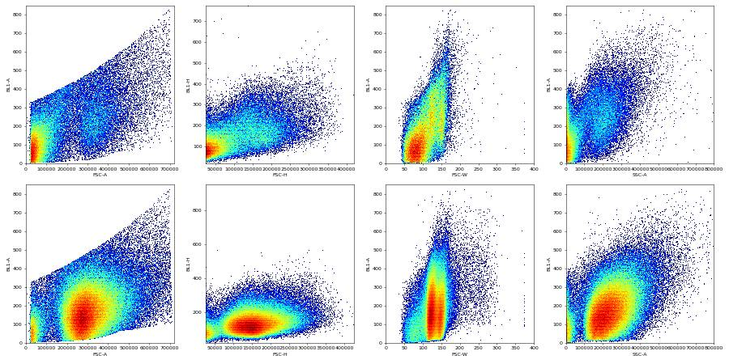
81
thinking
There's a hard, straight upper edge in BL1-A versus FSC-A, with events piling up against it, which looks like a ceiling rather than a natural tail. I'm fitting that edge and checking whether the events stuck there follow a biological pattern.
82
tool call · Bash
cd /task; cat > work/ceiling2.py <<'EOF'
import flowkit as fk, pandas as pd, numpy as np
lay=pd.read_csv('inputs/plate_layout.csv')
dfs=[]
for _,r in lay.iterrows():
s=fk.Sample('inputs/raw/'+r.file); df=s.as_dataframe(source='raw'); df.columns=[c[0] for c in df.columns]; df['well']=r.well; dfs.append(df)
D=pd.concat(dfs); D.to_pickle('work/all.pkl')
# max per fine bin
xs=[];ys=[]
for lo in np.arange(0,700000,20000):
x=D[(D['FSC-A']>=lo)&(D['FSC-A']<lo+20000)]
if len(x)>200: xs.append(lo+10000); ys.append(x['BL1-A'].max())
xs=np.array(xs);ys=np.array(ys); b,a=np.polyfit(xs,ys,1); print('fit max: a=%.1f b=%.6f'%(a,b)); print(np.c_[xs,ys,np.round(a+b*xs)].astype(int))
# check other channels for similar ceilings: BL1-H vs FSC-H
for lo in np.arange(0,420000,30000):
x=D[(D['FSC-H']>=lo)&(D['FSC-H']<lo+30000)]
if len(x)>200: print('FSC-H %d BL1-H max %.0f q999 %.0f | BL2-A min %.0f'%(lo,x['BL1-H'].max(),x['BL1-H'].quantile(.999),x['BL2-A'].min()))
EOF
python3 work/ceiling2.py83
tool output
fit max: a=279.9 b=0.000743 [[ 30000 335 302] [ 50000 343 317] [ 70000 354 332] [ 90000 364 347] [110000 374 362] [130000 384 376] [150000 395 391] [170000 406 406] [190000 418 421] [210000 429 436] [230000 441 451] [250000 453 466] [270000 467 480] [290000 480 495] [310000 493 510] [330000 507 525] [350000 521 540] [370000 536 555] [390000 551 570] [410000 565 584] [430000 582 599] [450000 597 614] [470000 615 629] [490000 631 644] [510000 650 659] [530000 668 673] [550000 684 688] [570000 707 703] [590000 725 718] [610000 745 733] [630000 766 748] [650000 785 763] [670000 806 777] [690000 830 792]] FSC-H 0 BL1-H max 673 q999 337 | BL2-A min -23737 FSC-H 30000 BL1-H max 780 q999 349 | BL2-A min -31439 FSC-H 60000 BL1-H max 707 q999 368 | BL2-A min -26496 FSC-H 90000 BL1-H max 1292 q999 392 | BL2-A min -19281 FSC-H 120000 BL1-H max 953 q999 412 | BL2-A min -50113 FSC-H 150000 BL1-H max 913 q999 421 | BL2-A min -34357 FSC-H 180000 BL1-H max 1009 q999 436 | BL2-A min -20110 FSC-H 210000 BL1-H max 747 q999 460 | BL2-A min -65536 FSC-H 240000 BL1-H max 727 q999 499 | BL2-A min -65536 FSC-H 270000 BL1-H max 652 q999 526 | BL2-A min -19060 FSC-H 300000 BL1-H max 683 q999 577 | BL2-A min -15245 FSC-H 330000 BL1-H max 656 q999 587 | BL2-A min -11816 FSC-H 360000 BL1-H max 646 q999 619 | BL2-A min -4654
85
tool call · Bash
cd /task; cat > work/ceiling3.py <<'EOF'
import pandas as pd, numpy as np, matplotlib
matplotlib.use('Agg'); import matplotlib.pyplot as plt
D=pd.read_pickle('work/all.pkl'); lay=pd.read_csv('inputs/plate_layout.csv').set_index('well')
# quadratic fit of ceiling to fine-bin maxima
xs=[];ys=[]
for lo in np.arange(0,700000,10000):
x=D[(D['FSC-A']>=lo)&(D['FSC-A']<lo+10000)]
if len(x)>300: xs.append(lo+5000); ys.append(x['BL1-A'].quantile(0.9995))
p=np.polyfit(xs,ys,2); print('quad ceiling coeffs',p)
D['ceil']=np.polyval(p,D['FSC-A']); D['r']=D['BL1-A']/D['ceil']
D['cl']=D.well.map(lay['cell_line']); D['dose']=D.well.map(lay['camptothecin'])
sing=D[(D['FSC-A']>110000)&(D['SSC-A']>40000)&(D['SSC-A']<1040000)&(D['FSC-H']/D['FSC-A']>0.38)&(D['FSC-A']<690000)]
fig,ax=plt.subplots(1,2,figsize=(14,5))
for g,c in [(('WT','DMSO'),'C0'),(('WT','10uM'),'C1'),(('E1','DMSO'),'C2'),(('E1','10uM'),'C3'),(('E3','DMSO'),'C4'),(('E3','10uM'),'C5')]:
x=sing[(sing.cl==g[0])&(sing.dose==g[1])&(sing.well!='B1')&(~sing.well.str.startswith('G'))]['r']
ax[0].hist(x,bins=np.linspace(0,1.1,111),histtype='step',density=True,label=' '.join(g),color=c)
ax[1].hist(x,bins=np.linspace(0.6,1.1,101),histtype='step',density=True,label=' '.join(g),color=c)
for w,c in [('G1','k'),('G3','gray')]:
x=sing[sing.well==w]['r']; ax[0].hist(x,bins=np.linspace(0,1.1,111),histtype='step',density=True,label=w,color=c,ls='--'); ax[1].hist(x,bins=np.linspace(0.6,1.1,101),histtype='step',density=True,label=w,color=c,ls='--')
ax[1].set_yscale('log'); ax[0].legend(); ax[0].set_xlabel('BL1-A / ceiling(FSC-A)'); ax[1].set_xlabel('BL1-A / ceiling(FSC-A)')
plt.tight_layout(); plt.savefig('work/ceiling3.png',dpi=60)
EOF
python3 work/ceiling3.py86
tool output
quad ceiling coeffs [4.95100779e-10 3.80302574e-04 3.20979079e+02]
87
tool call · Read
{
"file_path": "/task/work/ceiling3.png"
}88
tool output
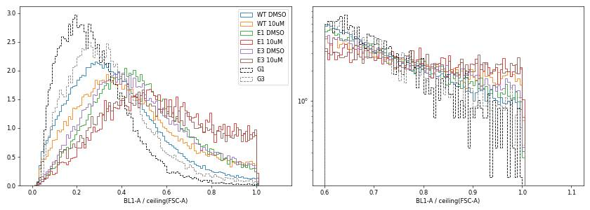
90
thinking
The BL1 values look saturated at the fitted ceiling in the camptothecin-treated knockout wells, which fits a caspase-bright population being clipped. I'm now checking whether the near-ceiling fraction tracks the expected biology across wells.
91
tool call · Bash
cd /task; cat > work/ceiling4.py <<'EOF'
import pandas as pd, numpy as np
D=pd.read_pickle('work/all.pkl'); lay=pd.read_csv('inputs/plate_layout.csv').set_index('well')
p=[4.95100779e-10,3.80302574e-04,3.20979079e+02]
D['r']=D['BL1-A']/np.polyval(p,D['FSC-A'])
sing=D[(D['FSC-A']>110000)&(D['SSC-A']>40000)&(D['SSC-A']<1040000)&(D['FSC-H']/D['FSC-A']>0.38)&(D['FSC-A']<690000)].copy()
sing['dead']=sing['BL2-A']>np.interp(sing['FSC-A'],[110000,690000],[3000,6000])
rows=[]
for w,g in sing.groupby('well'):
l=g[~g.dead]
rows.append(dict(well=w,cl=lay.loc[w,'cell_line'],dose=lay.loc[w,'camptothecin'],cm=lay.loc[w,'conditioned_media'][:4],n=len(l),
r07=(l.r>0.7).mean()*100,r08=(l.r>0.8).mean()*100,r09=(l.r>0.9).mean()*100,r095=(l.r>0.95).mean()*100,
r08_all=(g.r>0.8).mean()*100, dead=g.dead.mean()*100, r08_dead=(g[g.dead].r>0.8).mean()*100 if g.dead.sum()>10 else np.nan))
o=pd.DataFrame(rows)
o['row']=o.well.str[0]; o['col']=o.well.str[1:].astype(int); o=o.sort_values(['row','col'])
pd.set_option('display.width',250); pd.set_option('display.max_rows',200)
print(o.round(2).to_string(index=False))
m=o[~o.row.eq('G')&(o.well!='B1')].groupby(['cl','dose','cm'])[['r07','r08','r09','dead']].mean().round(2)
print(m.unstack('cm'))
EOF
python3 work/ceiling4.py92
tool output
well cl dose cm n r07 r08 r09 r095 r08_all dead r08_dead row col A1 WT 10uM 24hr 18856 10.75 6.13 2.63 1.31 7.63 5.18 35.15 A 1 A2 WT 5uM 24hr 19123 10.43 5.74 2.42 1.13 6.94 4.44 32.77 A 2 A3 WT 2uM 24hr 20947 10.36 5.98 2.65 1.20 7.00 3.83 32.69 A 3 A4 WT DMSO 24hr 30790 5.28 2.61 0.95 0.41 3.35 3.10 26.52 A 4 A5 WT 10uM 48hr 8453 12.62 7.29 3.35 1.66 10.55 8.70 44.84 A 5 A6 WT 5uM 48hr 15591 9.67 5.11 2.12 1.10 7.03 5.63 39.25 A 6 A7 WT 2uM 48hr 16181 9.96 5.54 2.34 1.21 6.96 4.67 36.07 A 7 A8 WT DMSO 48hr 26260 5.16 2.49 0.97 0.39 3.36 3.31 28.81 A 8 A9 WT 10uM No c 10103 16.64 9.66 4.05 2.05 11.73 6.47 41.63 A 9 A10 WT 5uM No c 15724 11.33 6.19 2.65 1.25 7.88 5.49 36.91 A 10 A11 WT 2uM No c 23016 9.72 5.14 2.14 0.93 6.63 4.51 38.12 A 11 A12 WT DMSO No c 26963 5.23 2.42 0.87 0.40 3.23 4.23 21.43 A 12 B1 E1 10uM 24hr 4069 31.26 19.69 9.66 5.09 19.71 0.02 NaN B 1 B2 E1 5uM 24hr 4374 20.48 12.03 5.30 2.38 14.95 8.42 46.77 B 2 B3 E1 2uM 24hr 5969 18.13 10.30 4.66 2.30 12.20 5.04 47.95 B 3 B4 E1 DMSO 24hr 9648 10.88 5.43 1.92 0.91 6.66 4.09 35.52 B 4 B5 E1 10uM 48hr 1836 22.82 12.96 6.70 3.00 18.84 19.37 43.31 B 5 B6 E1 5uM 48hr 4739 16.59 9.03 3.92 1.65 12.29 9.58 43.03 B 6 B7 E1 2uM 48hr 5742 15.66 7.82 3.50 1.55 10.96 8.96 42.83 B 7 B8 E1 DMSO 48hr 7870 10.70 4.88 1.80 0.84 7.46 9.91 30.95 B 8 B9 E1 10uM No c 1099 28.94 17.38 7.73 2.64 23.47 24.57 42.18 B 9 B10 E1 5uM No c 3497 20.07 12.35 5.20 2.43 16.30 12.05 45.09 B 10 B11 E1 2uM No c 4596 18.21 9.60 3.76 1.76 12.84 9.78 42.77 B 11 B12 E1 DMSO No c 7189 14.24 7.23 2.94 1.21 9.17 6.59 36.69 B 12 C1 E3 10uM 24hr 3114 21.07 12.59 5.52 2.60 18.43 16.60 47.74 C 1 C2 E3 5uM 24hr 5044 15.19 7.99 3.75 1.72 12.10 12.42 41.12 C 2 C3 E3 2uM 24hr 4373 12.46 6.24 2.68 1.39 9.66 12.40 33.76 C 3 C4 E3 DMSO 24hr 5077 11.50 6.22 2.56 1.08 9.91 16.66 28.37 C 4 C5 E3 10uM 48hr 894 18.46 10.85 5.93 2.91 21.60 37.09 39.85 C 5 C6 E3 5uM 48hr 2535 15.94 8.56 3.98 1.93 14.77 18.41 42.31 C 6 C7 E3 2uM 48hr 3802 14.62 8.00 3.24 1.47 12.33 14.12 38.72 C 7 C8 E3 DMSO 48hr 4861 10.12 5.27 2.12 1.17 8.74 17.32 25.34 C 8 C9 E3 10uM No c 1310 20.38 11.98 6.79 2.75 21.03 29.91 42.22 C 9 C10 E3 5uM No c 3611 16.70 9.36 3.68 1.74 14.38 17.18 38.58 C 10 C11 E3 2uM No c 4650 15.05 7.78 3.61 1.76 11.51 10.37 43.68 C 11 C12 E3 DMSO No c 9185 10.67 5.41 2.06 0.96 8.34 11.02 31.99 C 12 D1 WT 10uM 24hr 12965 9.46 5.04 2.34 1.07 6.46 5.00 33.43 D 1 D2 WT 5uM 24hr 16726 9.33 4.66 1.99 0.84 5.78 3.56 36.08 D 2 D3 WT 2uM 24hr 14925 10.24 5.05 1.91 0.89 6.39 4.30 36.27 D 3 D4 WT DMSO 24hr 21275 6.31 2.96 1.08 0.50 3.92 4.14 26.36 D 4 D5 WT 10uM 48hr 4065 11.73 6.00 2.63 1.48 8.59 7.82 39.13 D 5 D6 WT 5uM 48hr 10148 9.72 4.74 1.86 0.89 6.48 5.20 38.24 D 6 D7 WT 2uM 48hr 13001 10.41 5.38 2.03 0.89 6.84 5.27 33.20 D 7 D8 WT DMSO 48hr 19268 6.10 2.76 1.03 0.46 4.10 6.81 22.39 D 8 D9 WT 10uM No c 5228 11.30 6.03 2.66 1.43 8.13 7.39 34.53 D 9 D10 WT 5uM No c 12427 10.65 5.46 2.10 0.95 6.65 4.41 32.64 D 10 D11 WT 2uM No c 19400 10.39 5.21 2.07 0.97 6.24 3.03 39.27 D 11 D12 WT DMSO No c 21443 6.08 2.81 0.94 0.38 3.66 4.15 23.28 D 12 E1 E1 10uM 24hr 2460 21.71 12.68 6.10 2.93 15.94 9.86 45.72 E 1 E2 E1 5uM 24hr 4415 18.48 9.63 3.71 1.59 12.37 7.44 46.48 E 2 E3 E1 2uM 24hr 4398 18.87 9.87 3.98 2.00 12.47 7.86 42.93 E 3 E4 E1 DMSO 24hr 7577 14.82 7.17 2.72 1.21 9.63 8.31 36.83 E 4 E5 E1 10uM 48hr 1233 20.19 11.19 4.54 2.03 18.73 20.35 48.25 E 5 E6 E1 5uM 48hr 2940 20.75 10.17 3.84 1.63 13.89 11.04 43.84 E 6 E7 E1 2uM 48hr 4460 16.95 7.76 2.96 1.61 11.07 9.28 43.42 E 7 E8 E1 DMSO 48hr 5201 12.94 5.92 1.98 0.73 9.52 12.85 33.90 E 8 E9 E1 10uM No c 982 24.03 13.85 6.72 3.56 20.03 25.49 38.10 E 9 E10 E1 5uM No c 2068 15.81 9.09 3.97 1.84 13.03 12.78 39.93 E 10 E11 E1 2uM No c 4216 20.30 10.74 4.03 1.78 13.25 7.65 43.55 E 11 E12 E1 DMSO No c 8528 14.62 7.41 2.69 1.14 8.97 5.07 38.24 E 12 F1 E3 10uM 24hr 2252 20.16 11.28 5.20 2.66 15.72 13.65 43.82 F 1 F2 E3 5uM 24hr 5151 13.61 7.11 2.60 1.15 9.52 7.85 37.81 F 2 F3 E3 2uM 24hr 4936 16.47 8.59 3.10 1.36 11.39 9.93 36.76 F 3 F4 E3 DMSO 24hr 7361 11.63 6.07 2.24 1.11 8.56 10.17 30.49 F 4 F5 E3 10uM 48hr 1070 16.45 9.81 4.30 1.87 13.39 15.75 32.50 F 5 F6 E3 5uM 48hr 3257 17.72 9.12 3.87 1.81 11.62 8.18 39.66 F 6 F7 E3 2uM 48hr 4935 16.33 … [2,269 more characters not shown]
94
thinking
The CellEvent BL1 signal is real but compressed against the detector ceiling, with dead cells at 22–48% versus 3% in the SYTOX-only control. I'll run a few more checks and then build the FlowKit gates.
95
tool call · Bash
cd /task; cat > work/ceiling5.py <<'EOF'
import pandas as pd, numpy as np
D=pd.read_pickle('work/all.pkl')
p=[4.95100779e-10,3.80302574e-04,3.20979079e+02]
D['r']=D['BL1-A']/np.polyval(p,D['FSC-A'])
g=D.groupby('well')
o=pd.DataFrame({'n':g.size(),'rmax':g.r.max(),'n_r_gt_1':g.r.apply(lambda x:(x>1.0).sum()),'n_r_gt_1.02':g.r.apply(lambda x:(x>1.02).sum()),'pct_r_gt_0.95':g.r.apply(lambda x:(x>0.95).mean()*100),
'bl1max':g['BL1-A'].max(),'bl1h_max':g['BL1-H'].max(),'bl1w_nonzero':g['BL1-W'].apply(lambda x:(x!=0).sum())})
print(o.round(3).sort_values('rmax').to_string())
# relation of BL2-W>0 to BL2-H
x=D[D['BL2-W']>0]['BL2-H']; y=D[D['BL2-W']==0]['BL2-H']
print('BL2-H when W>0: min %.0f q1 %.0f ; when W==0: max %.0f q99 %.0f'%(x.min(),x.quantile(.01),y.max(),y.quantile(.99)))
EOF
python3 work/ceiling5.py | tail -3096
tool output
E3 12311 1.003 8 0 1.925 774.0 571.0 0 E12 10755 1.003 4 0 1.404 794.0 559.0 0 C1 7495 1.003 10 0 2.949 823.0 707.0 0 B8 11210 1.003 4 0 1.320 796.0 582.0 0 B7 13360 1.003 8 0 1.669 795.0 714.0 0 A10 24604 1.003 14 0 1.553 785.0 513.0 0 G5 11594 1.003 3 0 1.484 824.0 585.0 0 G4 7482 1.003 3 0 1.470 806.0 583.0 0 A9 17224 1.003 13 0 1.957 769.0 509.0 0 B10 8268 1.003 9 0 2.129 766.0 517.0 0 D11 31867 1.004 21 0 1.478 766.0 913.0 0 D10 19657 1.004 9 0 1.257 751.0 497.0 0 C6 6099 1.004 5 0 2.230 810.0 560.0 0 A12 31708 1.004 6 0 0.669 787.0 509.0 0 A3 38748 1.004 25 0 1.267 804.0 509.0 0 F7 9381 1.004 5 0 1.663 828.0 654.0 0 A11 38346 1.004 16 0 1.220 810.0 702.0 0 A6 25118 1.004 13 0 1.358 794.0 503.0 0 C11 9008 1.004 4 0 2.076 801.0 563.0 0 D2 27593 1.004 12 0 1.189 781.0 479.0 0 D3 27824 1.004 13 0 1.452 781.0 541.0 0 B6 9638 1.004 5 0 1.961 781.0 747.0 0 D9 8616 1.004 5 0 1.660 739.0 517.0 0 C8 8215 1.004 2 0 1.558 806.0 541.0 0 E11 11711 1.004 8 0 1.674 767.0 780.0 0 B3 14921 1.004 5 0 1.682 802.0 570.0 0 E2 10681 1.004 6 0 1.713 799.0 573.0 0 A1 30920 1.004 14 0 1.429 805.0 643.0 0 C10 8011 1.005 8 0 2.234 828.0 566.0 0 BL2-H when W>0: min 1000 q1 1004 ; when W==0: max 999 q99 984
97
tool call · Bash
cd /task; python3 work/ceiling5.py | head -50
98
tool output
n rmax n_r_gt_1 n_r_gt_1.02 pct_r_gt_0.95 bl1max bl1h_max bl1w_nonzero well G1 34073 0.997 0 0 0.100 773.0 570.0 0 G6 16054 0.998 0 0 0.448 796.0 602.0 0 F5 3184 0.999 0 0 1.759 784.0 511.0 0 C3 8563 1.000 1 0 1.822 805.0 556.0 0 D8 23299 1.001 1 0 0.833 815.0 953.0 0 B12 9382 1.001 3 0 1.641 812.0 568.0 0 F12 11679 1.001 3 0 1.430 822.0 602.0 0 B4 12172 1.001 1 0 1.191 801.0 649.0 0 C4 9241 1.001 4 0 1.634 813.0 652.0 0 C12 13163 1.001 4 0 1.595 809.0 545.0 0 B1 9849 1.002 7 0 2.447 803.0 513.0 0 F3 9940 1.002 8 0 1.720 809.0 592.0 0 F10 8439 1.002 5 0 1.908 800.0 656.0 0 E9 4147 1.002 3 0 2.098 734.0 538.0 0 B11 10609 1.002 6 0 1.782 788.0 517.0 0 G3 27095 1.002 4 0 0.432 769.0 577.0 0 C9 4067 1.002 3 0 2.852 812.0 567.0 0 D4 24551 1.002 6 0 0.786 760.0 562.0 0 E7 12028 1.002 6 0 1.854 807.0 656.0 0 B9 3505 1.002 2 0 2.482 770.0 485.0 0 C7 8001 1.002 6 0 1.950 791.0 611.0 0 F9 3608 1.002 3 0 2.384 827.0 775.0 0 F4 10729 1.003 6 0 1.557 814.0 933.0 0 F6 6320 1.003 1 0 1.677 830.0 518.0 0 F8 10605 1.003 5 0 1.754 816.0 593.0 0 G2 28006 1.003 2 0 0.125 826.0 724.0 0 A2 31266 1.003 10 0 1.187 795.0 535.0 0 C2 10263 1.003 4 0 2.056 819.0 727.0 0 A5 14011 1.003 10 0 2.184 750.0 475.0 0 A4 34861 1.003 9 0 0.588 797.0 548.0 0 C5 3151 1.003 3 0 3.205 818.0 574.0 0 A7 27544 1.003 13 0 1.430 803.0 544.0 0 D7 23253 1.003 9 0 1.355 802.0 521.0 0 E1 9821 1.003 11 0 1.812 767.0 622.0 0 B5 5068 1.003 3 0 2.368 712.0 605.0 0 E10 5492 1.003 2 0 2.276 796.0 605.0 0 D12 25256 1.003 5 0 0.673 823.0 512.0 0 D1 22778 1.003 9 0 1.352 781.0 1292.0 2 D6 17066 1.003 5 0 1.342 753.0 501.0 0 D5 6454 1.003 3 0 1.875 783.0 531.0 0 B2 10963 1.003 9 0 1.989 804.0 749.0 0 A8 30067 1.003 8 0 0.659 810.0 566.0 0 E8 7979 1.003 5 0 1.504 773.0 701.0 0 F2 9910 1.003 3 0 1.645 800.0 745.0 0 F11 12193 1.003 7 0 2.001 814.0 633.0 0 F1 6393 1.003 5 0 2.409 744.0 521.0 0 E4 10059 1.003 4 0 1.839 792.0 683.0 0 E5 4437 1.003 4 0 2.344 709.0 696.0 0
100
thinking
Every well, including the unstained G1, hits the same hard BL1 ceiling of about 1.0, with none of roughly a million events exceeding 1.02×, so this is a plate-wide acquisition limit. Next I'm building the FlowKit strategy: Cells, Singlets, Live/Dead from SYTOX in BL2, then caspase-high gates from the G2 and G1 controls.
101
tool call · Bash
cd /task; cat > work/rcheck.py <<'EOF'
import pandas as pd, numpy as np
D=pd.read_pickle('work/all.pkl')
p=[4.95100779e-10,3.80302574e-04,3.20979079e+02]
D['r']=D['BL1-A']/np.polyval(p,D['FSC-A'])
sing=D[(D['FSC-A']>110000)&(D['SSC-A']>40000)&(D['SSC-A']<1040000)&(D['FSC-H']/D['FSC-A']>0.38)&(D['FSC-A']<690000)]
live=sing[sing['BL2-A']<np.interp(sing['FSC-A'],[110000,690000],[3000,6000])]
for w in ['G1','G2','G3','G6']:
x=live[live.well==w]
print(w, ' '.join('%dk:n=%d q99r=%.2f q99bl1=%.0f'%(lo/1e3,len(y),y.r.quantile(.99),y['BL1-A'].quantile(.99)) for lo in [110000,200000,300000,400000,500000] for y in [x[(x['FSC-A']>=lo)&(x['FSC-A']<lo+100000)]] if len(y)>100))
EOF
python3 work/rcheck.py102
tool output
G1 110k:n=988 q99r=0.78 q99bl1=316 200k:n=3128 q99r=0.78 q99bl1=356 300k:n=18989 q99r=0.72 q99bl1=373 400k:n=6588 q99r=0.79 q99bl1=454 500k:n=1330 q99r=0.87 q99bl1=595 G2 110k:n=918 q99r=0.72 q99bl1=292 200k:n=10506 q99r=0.73 q99bl1=332 300k:n=8112 q99r=0.78 q99bl1=403 400k:n=2649 q99r=0.84 q99bl1=500 500k:n=649 q99r=0.93 q99bl1=609 G3 110k:n=186 q99r=0.99 q99bl1=407 200k:n=1561 q99r=0.95 q99bl1=434 300k:n=15476 q99r=0.85 q99bl1=439 400k:n=6017 q99r=0.88 q99bl1=524 500k:n=1283 q99r=0.93 q99bl1=610 G6 110k:n=153 q99r=0.99 q99bl1=407 200k:n=4495 q99r=0.88 q99bl1=401 300k:n=6484 q99r=0.86 q99bl1=439 400k:n=2492 q99r=0.88 q99bl1=525 500k:n=763 q99r=0.95 q99bl1=637
104
tool call · Bash
cd /task; python3 -c " import flowkit as fk, inspect print(fk.__version__) print(inspect.signature(fk.GatingStrategy.add_gate)) print(inspect.signature(fk.gates.RectangleGate.__init__)) print(inspect.signature(fk.gates.PolygonGate.__init__)) print(inspect.signature(fk.Dimension.__init__)) print(inspect.signature(fk.GatingStrategy.gate_sample)) print(inspect.signature(fk.export_gatingml)) "
105
tool output
1.2.3 (self, gate, gate_path, sample_id=None) (self, gate_name, dimensions, use_complement=False) (self, gate_name, dimensions, vertices, use_complement=False) (self, dimension_id, compensation_ref='uncompensated', transformation_ref=None, range_min=None, range_max=None) (self, sample, cache_events=False, verbose=False) (gating_strategy, file_handle, sample_id=None)
106
tool call · Bash
cd /task; cat > work/gating.py <<'EOF'
"""Build one FlowKit GatingStrategy for all wells, export GatingML, gate all 78 files, write counts.csv."""
import flowkit as fk, pandas as pd, numpy as np
OUT='/task/outputs'
U='uncompensated'
D=lambda ch, mn=None, mx=None: fk.Dimension(ch, compensation_ref=U, range_min=mn, range_max=mx)
# --- BL1 ceiling model (fit to the 99.95th pct of BL1-A in 10k-wide FSC-A bins, all 78 files pooled) ---
CEIL=[4.95100779e-10, 3.80302574e-04, 3.20979079e+02]
R_THR=0.80 # caspase-high = BL1-A > 0.80 x ceiling(FSC-A); ~99th pct of BL1/ceiling in the no-CellEvent controls G1 & G2
def casp_vertices():
xs=np.arange(100000, 700001, 50000)
lower=[(float(x), float(R_THR*np.polyval(CEIL,x))) for x in xs]
return lower+[(700000.0, 2.0e6),(100000.0, 2.0e6)]
# --- SYTOX AAdvanced (BL2) live/dead boundary: 3000 at FSC-A 110k rising linearly to 6000 at 690k ---
def bl2_thr(x): return 3000+ (x-110000)*3000/580000.0
LIVE_V=[(100000.0,-2.0e6),(700000.0,-2.0e6),(700000.0,bl2_thr(700000)),(100000.0,bl2_thr(100000))]
DEAD_V=[(100000.0,bl2_thr(100000)),(700000.0,bl2_thr(700000)),(700000.0,2.0e6),(100000.0,2.0e6)]
g=fk.GatingStrategy()
g.add_gate(fk.gates.RectangleGate('Cells',[D('FSC-A',110000,None),D('SSC-A',40000,1040000)]),('root',))
g.add_gate(fk.gates.PolygonGate('Singlets',[D('FSC-A'),D('FSC-H')],
[(100000.0,38000.0),(690000.0,262200.0),(690000.0,700000.0),(100000.0,700000.0)]),('root','Cells'))
g.add_gate(fk.gates.PolygonGate('Live',[D('FSC-A'),D('BL2-A')],LIVE_V),('root','Cells','Singlets'))
g.add_gate(fk.gates.PolygonGate('Dead',[D('FSC-A'),D('BL2-A')],DEAD_V),('root','Cells','Singlets'))
g.add_gate(fk.gates.PolygonGate('Casp_high_live',[D('FSC-A'),D('BL1-A')],casp_vertices()),('root','Cells','Singlets','Live'))
g.add_gate(fk.gates.PolygonGate('Casp_high_dead',[D('FSC-A'),D('BL1-A')],casp_vertices()),('root','Cells','Singlets','Dead'))
with open(f'{OUT}/gates.xml','wb') as fh: fk.export_gatingml(g, fh)
g2=fk.parse_gating_xml(f'{OUT}/gates.xml') # reload and use the reloaded strategy for counting
print(g2.get_gate_hierarchy(output='ascii'))
POPS=[('Cells','cells','all_events'),('Singlets','singlets','Cells'),('Live','live','Singlets'),('Dead','other','Singlets'),
('Casp_high_live','marker_positive','Live'),('Casp_high_dead','other','Dead')]
lay=pd.read_csv('/task/inputs/plate_layout.csv')
rows=[]
for _,r in lay.iterrows():
s=fk.Sample('/task/inputs/raw/'+r.file)
res=g2.gate_sample(s)
n=s.event_count
cnt={'all_events':n}
rows.append(dict(file=r.file,well=r.well,population='all_events',role='other',parent='none',count=n,pct_of_parent=''))
for pop,role,par in POPS:
c=int(res.get_gate_count(pop))
cnt[pop]=c
pc=cnt[par]
rows.append(dict(file=r.file,well=r.well,population=pop,role=role,parent=par,count=c,
pct_of_parent=round(100.0*c/pc,4) if pc>0 else ''))
df=pd.DataFrame(rows,columns=['file','well','population','role','parent','count','pct_of_parent'])
df.to_csv(f'{OUT}/counts.csv',index=False)
print(df.pivot(index='well',columns='population',values='count').loc[lay.well].to_string())
EOF
python3 work/gating.py107
tool output
root
╰── Cells
╰── Singlets
├── Live
│ ╰── Casp_high_live
╰── Dead
╰── Casp_high_dead
population Casp_high_dead Casp_high_live Cells Dead Live Singlets all_events
well
A1 361 1150 21277 1030 18856 19886 30920
A2 290 1094 20783 888 19123 20011 31266
A3 272 1247 22668 835 20947 21782 38748
A4 260 801 32863 984 30790 31774 34861
A5 361 615 9665 805 8453 9258 14011
A6 364 795 17158 930 15591 16521 25118
A7 284 894 17643 793 16181 16974 27544
A8 258 651 28065 899 26260 27159 30067
A9 291 970 11322 699 10103 10802 17224
A10 335 972 17487 913 15724 16637 24604
A11 413 1180 25237 1086 23016 24102 38346
A12 254 652 29576 1190 26963 28153 31708
B1 1 800 4251 1 4069 4070 9849
B2 188 524 4904 402 4374 4776 10963
B3 152 615 6439 317 5969 6286 14921
B4 146 522 10297 411 9648 10059 12172
B5 191 237 2360 441 1836 2277 5068
B6 216 427 5408 502 4739 5241 9638
B7 241 448 6457 565 5742 6307 13360
B8 268 384 8932 866 7870 8736 11210
B9 151 189 1507 358 1099 1457 3505
B10 216 431 4098 479 3497 3976 8268
B11 212 439 5219 498 4596 5094 10609
B12 186 519 7928 507 7189 7696 9382
C1 295 391 3898 620 3114 3734 7495
C2 294 402 5888 715 5044 5759 10263
C3 209 272 5104 619 4373 4992 8563
C4 288 315 6234 1015 5077 6092 9241
C5 210 97 1455 527 894 1421 3151
C6 241 217 3186 572 2535 3107 6099
C7 241 304 4550 625 3802 4427 8001
C8 258 255 6024 1018 4861 5879 8215
C9 236 157 1949 559 1310 1869 4067
C10 288 337 4497 749 3611 4360 8011
C11 235 361 5302 538 4650 5188 9008
C12 361 496 10569 1138 9185 10323 13163
D1 227 651 14696 682 12965 13647 22778
D2 223 780 18109 618 16726 17344 27593
D3 243 753 16184 670 14925 15595 27824
D4 242 625 23022 918 21275 22193 24551
D5 135 244 4619 345 4065 4410 6454
D6 213 481 11167 557 10148 10705 17066
D7 239 695 14167 723 13001 13724 23253
D8 315 532 21700 1407 19268 20675 23299
D9 144 314 5918 417 5228 5645 8616
D10 187 677 13570 573 12427 13000 19657
D11 238 1008 20713 606 19400 20006 31867
D12 216 602 23277 928 21443 22371 25256
E1 123 312 2812 269 2460 2729 9821
E2 165 424 4854 355 4415 4770 10681
E3 161 434 4827 375 4398 4773 12311
E4 253 541 8388 687 7577 8264 10059
E5 152 138 1582 315 1233 1548 4437
E6 160 298 3377 365 2940 3305 7547
E7 197 346 5015 456 4460 4916 12028
E8 260 306 6093 767 5201 5968 7979
E9 128 136 1349 336 982 1318 4147
E10 120 188 2438 303 2068 2371 5492
E11 152 452 4610 349 4216 4565 11711
E12 173 632 9161 455 8528 8983 10755
F1 156 252 2665 356 2252 2608 6393
F2 166 365 5710 439 5151 5590 9910
F3 199 424 5579 544 4936 5480 9940
F4 254 446 8330 833 7361 8194 10729
F5 65 104 1302 200 1070 1270 3184
F6 114 297 3599 290 3257 3547 6320
F7 149 418 5408 385 4935 5320 9381
F8
… [927 more characters not shown]109
agent
Gates are saved and reload cleanly, and the FlowKit counts match my numpy prototype. Next I'll plot gate overlays on representative wells to check them by eye.
110
tool call · Bash
cd /task; cat > work/overlay.py <<'EOF'
import flowkit as fk, pandas as pd, numpy as np, matplotlib, sys
matplotlib.use('Agg'); import matplotlib.pyplot as plt
sys.path.insert(0,'/task/work')
g=fk.parse_gating_xml('/task/outputs/gates.xml')
lay=pd.read_csv('/task/inputs/plate_layout.csv').set_index('well')
wells=sys.argv[2:]; outp=sys.argv[1]
def verts(name,path):
gt=g.get_gate(name,path)
if hasattr(gt,'vertices'): return np.array(gt.vertices)
return None
fig,ax=plt.subplots(len(wells),4,figsize=(18,4.2*len(wells)))
for i,w in enumerate(wells):
s=fk.Sample('/task/inputs/raw/'+lay.loc[w,'file'])
res=g.gate_sample(s)
df=s.as_dataframe(source='raw'); df.columns=[c[0] for c in df.columns]
m={k:res.get_gate_membership(k) for k in ['Cells','Singlets','Live','Dead','Casp_high_live','Casp_high_dead']}
a=ax[i,0]; a.hist2d(df['FSC-A'],df['SSC-A'],bins=150,range=[[0,720000],[-20000,1050000]],cmap='viridis',norm=matplotlib.colors.LogNorm())
a.add_patch(plt.Rectangle((110000,40000),720000-110000,1000000,fill=False,ec='r')); a.set_title(f"{w} {lay.loc[w,'sample']} | {lay.loc[w,'conditioned_media']}\nCells {m['Cells'].sum()}/{len(df)}",fontsize=9); a.set_xlabel('FSC-A'); a.set_ylabel('SSC-A')
c=df[m['Cells']]; a=ax[i,1]; a.hist2d(c['FSC-A'],c['FSC-H'],bins=150,range=[[100000,720000],[0,450000]],cmap='viridis',norm=matplotlib.colors.LogNorm())
v=verts('Singlets',('root','Cells')); a.plot(np.r_[v[:,0],v[0,0]],np.r_[v[:,1],v[0,1]],'r'); a.set_ylim(0,450000); a.set_title(f"Singlets {m['Singlets'].sum()}",fontsize=9); a.set_xlabel('FSC-A'); a.set_ylabel('FSC-H')
sg=df[m['Singlets']]; a=ax[i,2]; a.hist2d(sg['FSC-A'],np.arcsinh(sg['BL2-A']/200),bins=150,range=[[100000,700000],[-5,8.5]],cmap='viridis',norm=matplotlib.colors.LogNorm())
x=np.array([100000,700000]); a.plot(x,np.arcsinh((3000+(x-110000)*3000/580000)/200),'r'); a.set_title(f"Live {m['Live'].sum()} ({100*m['Live'].sum()/max(1,m['Singlets'].sum()):.1f}%) Dead {m['Dead'].sum()}",fontsize=9); a.set_xlabel('FSC-A'); a.set_ylabel('asinh(BL2-A/200) SYTOX AAdvanced')
lv=df[m['Live']]; a=ax[i,3]; a.hist2d(lv['FSC-A'],lv['BL1-A'],bins=[150,120],range=[[100000,700000],[0,900]],cmap='viridis',norm=matplotlib.colors.LogNorm())
v=verts('Casp_high_live',('root','Cells','Singlets','Live')); a.plot(v[:-2,0],v[:-2,1],'r'); xx=np.linspace(100000,700000,50); a.plot(xx,np.polyval([4.95100779e-10,3.80302574e-04,3.20979079e+02],xx),'k--',lw=0.8)
a.set_ylim(0,900); a.set_title(f"Casp_high_live {m['Casp_high_live'].sum()} ({100*m['Casp_high_live'].sum()/max(1,m['Live'].sum()):.2f}% of Live)",fontsize=9); a.set_xlabel('FSC-A'); a.set_ylabel('BL1-A CellEvent caspase-3/7')
plt.tight_layout(); plt.savefig(outp,dpi=50)
EOF
python3 work/overlay.py work/overlay1.png G1 G2 G3 A12 A9 B1 B9 E12 C9 F12 2>&1 | tail -3111
tool output
(Bash completed with no output)
112
tool call · Read
{
"file_path": "/task/work/overlay1.png"
}113
tool output
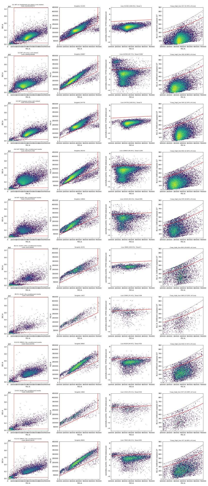
115
thinking
Gates exclude debris, doublets and SYTOX-bright events on the representative wells, with no SYTOX signal in B1. Next I'll compute per-well flags and the condition summary, then build the figure and report.
116
tool call · Skill
{
"skill": "dataviz"
}117
tool output
Launching skill: dataviz
118
tool call · Bash
cd /tmp/claude-0/bundled-skills/2.1.322/856312025a16312a07312b97c31606fa/dataviz; sed -n 1,200p references/palette.md | head -120; which node
119
tool output (error)
Exit code 1
# Reference palette
This is the **reference instance** of the data-viz method: every parameter the
method needs, filled in with a validated default palette. The rest of the skill
is system-agnostic - **to target your brand, substitute this file's values** and
re-run the validator. Nothing else changes.
## How to use these values
Everything below is plain hex. In an HTML chart, **define the slots you use as
CSS custom properties in a local `<style>` block** at the top of the file, then
reference them by role throughout - so the light/dark values swap in one place,
and the chart body is written against roles rather than raw hex:
```css
.viz-root {
color-scheme: light;
--surface-1: #fcfcfb; /* chart surface */
--text-primary: #0b0b0b;
--text-secondary: #52514e;
--series-1: #2a78d6; /* categorical slot 1 */
/* ...only the roles this chart uses */
}
@media (prefers-color-scheme: dark) {
:root:where(:not([data-theme="light"])) .viz-root {
color-scheme: dark;
--surface-1: #1a1a19;
--text-primary: #f0efec;
--text-secondary: #c3c2b7;
--series-1: #3987e5;
}
}
:root[data-theme="dark"] .viz-root {
color-scheme: dark;
--surface-1: #1a1a19;
--text-primary: #f0efec;
--text-secondary: #c3c2b7;
--series-1: #3987e5;
}
```
Declare the dark values under both scopes as above - the media query covers
the OS setting; the `data-theme` scope covers the viewer's theme toggle,
which must win both ways (the `:not(...)` guard lets a light stamp beat
OS-dark; `:where()` keeps the media block below the toggle scope).
## Categorical palette
Both modes are selected. The dark column is the same eight hues stepped for the
dark surface, not a separate palette:
| Slot | Hue | Light | Dark |
|------|-----|-------|------|
| 1 | blue | `#2a78d6` | `#3987e5` |
| 2 | orange | `#eb6834` | `#d95926` |
| 3 | aqua | `#1baf7a` | `#199e70` |
| 4 | yellow | `#eda100` | `#c98500` |
| 5 | magenta | `#e87ba4` | `#d55181` |
| 6 | green | `#008300` | `#008300` |
| 7 | violet | `#6250d6` | `#9085e9` |
| 8 | red | `#e34948` | `#e66767` |
This order passes every hard gate in both modes on the default *adjacent*
pairlist (stacks, bars, lines): worst adjacent CVD Delta E 9.1 light / 8.4 dark
(OKLab ×100, >=8 target), worst adjacent normal-vision Delta E 19.6 light / 19.3
dark (>=15 floor). Under `--pairs all` (scatter, bubble, choropleth, small
multiples) the full eight cannot clear the floors - with all 28 pairs in
play no ordering can (the pairlist no longer depends on order), and
re-stepping is off the table by the documented-palette rule - so those
chart forms carry a series cap: **the first three slots validate all-pairs
in both modes** (worst pair CVD Delta E 9.2 light / 9.4 dark, normal-vision 24.0
light / 20.9 dark - clear of the CVD warn band). Past three, fold to "Other" or
facet: the fourth slot puts yellow and orange on screen
together, and that pair fails the all-pairs floors (normal-vision 13.7
light; CVD 4.8 dark). Three light-mode slots (magenta, yellow, aqua)
sit below 3:1 contrast on the light surface: the **relief rule** applies (ship
visible direct labels or the table view). The dark steps were chosen for the
dark band (OKLCH L ~ 0.48-0.67, >= 3:1 on the dark surface) and validated as a
set. (Ordering history: adopted July 2026 for its more harmonious opening -
the same eight hues and steps as its predecessor, re-ordered, zero hex
changes. The predecessor validated its first FOUR slots all-pairs, with its
dark run in the 6-8 CVD warn band, so secondary encoding was required there;
this order deliberately trades that fourth slot - yellow now sits beside orange -
for better-looking leading colors. Revisit the trade if yellow<->orange
confusion shows up in real charts with four or more series; undoing it is a
pure re-order. Light slot 7 has since been lightened, `#4a3aa7` -> `#6250d6`
(August 2026); the adjacent-pair figures above are unchanged by that move, the
non-adjacent blue<->violet pair now sits below both floors under `--pairs all`
(normal-vision 10.5, CVD 4.5 - inside the range the series cap already
excludes), and the order enumeration was run with the earlier value.) When you
swap in your own ramps, hold your palette to the full gate.
The slot **ordering** is the CVD-safety mechanism, not cosmetic - candidate
orderings were enumerated and only those clearing every adjacent gate in both
modes kept (see `color-formula.md` § Themes); this default is one of the
passing orders, picked among them for its opening colors. When you swap in
your brand's hues, do the same: run the validator on candidate orderings and
choose only among the passing ones.
## Sequential hue
Default single hue: **blue**, light->dark. When two sequential contexts appear at
once, the second takes the next categorical slot's hue (orange), each as its own
one-hue ramp.
| step | hex | step | hex | step | hex | step | hex |
|---|---|---|---|---|---|---|---|
| 100 | `#cde2fb` | 250 | `#86b6ef` | 400 | `#3987e5` | 550 | `#1c5cab` |
| 150 | `#b7d3f6` | 300 | `#6da7ec` | 450 | `#2a78d6` | 600 | `#184f95` |
| 200 | `#9ec5f4` | 350 | `#5598e7` | 500 | `#256abf` | 650 | `#104281` |
| | | | | | | 700 | `#0d366b` |
The full 100->700 range is for **sequential** encoding (continuous magnitude -
heatmaps, choropleths) where the lightest step means "near zero" and is allowed
to recede toward the surface. For an **ordinal** ramp (discrete ordered marks -
funnel stages, tiers - validated with `--ordinal`), the step nearest the surface
must still clear 2:1: on light, start no lighter than **step 250** (`#86b6ef`,
2.06:1); on dark, go no darker than **step 600** (`#184f95`, 2.15:1).
## Diverging pair121
thinking
Node isn't installed, so I'm using the reference palette's blue, orange, and aqua slots, which are documented as validated in light and dark mode. Next I'll work on the analysis tables.
122
tool call · Bash
cd /task; cat > work/analysis.py <<'EOF'
import pandas as pd, numpy as np, json
c=pd.read_csv('/task/outputs/counts.csv'); lay=pd.read_csv('/task/inputs/plate_layout.csv')
P=c.pivot(index='well',columns='population',values='count')
W=lay.set_index('well').join(P)
W['casp_live']=100*W.Casp_high_live/W.Live
W['dead']=100*W.Dead/W.Singlets
W['casp_tot']=100*(W.Casp_high_live+W.Casp_high_dead)/W.Singlets
W['intact']=100*W.Cells/W.all_events
W['cm']=W.conditioned_media.map({'24hr conditioned media':'CM24h','48hr conditioned media':'CM48h','No conditioned media':'noCM','not stated':'NA'})
W['dose']=W.camptothecin.replace({'DMSO':'DMSO'})
W.to_csv('work/well_metrics.csv')
excl=['B1']
M=W[(~W.index.str.startswith('G'))&(~W.index.isin(excl))]
for met in ['casp_live','dead','casp_tot','intact','Singlets']:
t=M.groupby(['cell_line','dose','cm'])[met].mean().unstack('cm')[['noCM','CM24h','CM48h']]
t=t.reindex(pd.MultiIndex.from_product([['WT','E1','E3'],['DMSO','2uM','5uM','10uM']]))
print('\n==',met); print(t.round(2).to_string())
# dose-blocked CM effect per line: y ~ dose + cm (OLS), report CM coefficients +/- SE
from scipy import stats
print('\nDose-blocked CM effect on casp_live (pp), per line')
res={}
for line in ['WT','E1','E3']:
d=M[M.cell_line==line]
X=pd.get_dummies(d[['dose','cm']],drop_first=False).astype(float)
cols=['dose_2uM','dose_5uM','dose_10uM','cm_CM24h','cm_CM48h']
X=np.c_[np.ones(len(d)),X[cols].values]; y=d.casp_live.values
b,rs,rk,sv=np.linalg.lstsq(X,y,rcond=None); resid=y-X@b; dof=len(y)-X.shape[1]; s2=resid@resid/dof
cov=s2*np.linalg.inv(X.T@X); se=np.sqrt(np.diag(cov))
for k,nm in [(4,'CM24h'),(5,'CM48h')]:
tval=b[k]/se[k]; p=2*stats.t.sf(abs(tval),dof)
print(f' {line} {nm}-noCM: {b[k]:+.2f} pp (SE {se[k]:.2f}, df {dof}, p={p:.3f})'); res[(line,nm)]=(b[k],se[k],p)
print(f' {line} intercept(noCM DMSO fitted) {b[0]:.2f}')
# KO vs WT, dose-blocked within noCM
print('\nKO - WT (noCM, dose-blocked)')
for line in ['E1','E3']:
d=M[(M.cell_line.isin(['WT',line]))&(M.cm=='noCM')]
X=np.c_[np.ones(len(d)),pd.get_dummies(d.dose)[['2uM','5uM','10uM']].astype(float).values,(d.cell_line==line).astype(float).values]
y=d.casp_live.values; b=np.linalg.lstsq(X,y,rcond=None)[0]; r=y-X@b; dof=len(y)-X.shape[1]; se=np.sqrt(np.diag(r@r/dof*np.linalg.inv(X.T@X)))
print(f' {line}-WT: {b[-1]:+.2f} pp (SE {se[-1]:.2f}, p={2*stats.t.sf(abs(b[-1]/se[-1]),dof):.4f})')
EOF
python3 work/analysis.py123
tool output
== casp_live cm noCM CM24h CM48h WT DMSO 2.61 2.77 2.62 2uM 5.16 5.50 5.44 5uM 5.81 5.19 4.92 10uM 7.80 5.56 6.64 E1 DMSO 7.32 6.28 5.38 2uM 10.14 10.09 7.78 5uM 10.71 10.79 9.57 10uM 15.52 12.68 12.05 E3 DMSO 5.74 6.13 6.49 2uM 8.73 7.40 8.23 5uM 9.31 7.53 8.84 10uM 12.87 11.87 10.28 == dead cm noCM CM24h CM48h WT DMSO 4.19 3.62 5.06 2uM 3.77 4.06 4.97 5uM 4.95 4.00 5.42 10uM 6.93 5.09 8.26 E1 DMSO 5.83 6.20 11.38 2uM 8.71 6.45 9.12 5uM 12.41 7.93 10.31 10uM 25.03 9.86 19.86 E3 DMSO 10.35 13.41 14.29 2uM 10.01 11.16 10.68 5uM 12.92 10.13 13.29 10uM 22.10 15.13 26.42 == casp_tot cm noCM CM24h CM48h WT DMSO 3.44 3.62 3.72 2uM 6.42 6.68 6.87 5uM 7.25 6.35 6.75 10uM 9.89 7.02 9.57 E1 DMSO 9.06 8.12 8.47 2uM 13.01 12.33 10.98 5uM 14.63 13.63 13.06 10uM 21.68 15.94 18.77 E3 DMSO 8.42 9.22 9.65 2uM 12.14 10.50 11.48 5uM 13.17 10.79 13.16 10uM 19.63 17.01 17.46 == intact cm noCM CM24h CM48h WT DMSO 92.72 94.02 93.24 2uM 65.41 58.33 62.49 5uM 70.05 66.05 66.87 10uM 67.21 66.67 70.27 E1 DMSO 84.84 83.99 78.02 2uM 44.28 41.18 45.01 5uM 46.98 45.09 50.43 10uM 37.76 28.63 41.11 E3 DMSO 77.97 72.55 73.87 2uM 55.69 57.87 57.26 5uM 54.86 57.49 54.59 10uM 41.41 46.85 43.53 == Singlets cm noCM CM24h CM48h WT DMSO 25262.0 26983.5 23917.0 2uM 22054.0 18688.5 15349.0 5uM 14818.5 18677.5 13613.0 10uM 8223.5 16766.5 6834.0 E1 DMSO 8339.5 9161.5 7352.0 2uM 4829.5 5529.5 5611.5 5uM 3173.5 4773.0 4273.0 10uM 1387.5 2729.0 1912.5 E3 DMSO 9503.0 7143.0 6820.0 2uM 5739.0 5236.0 4873.5 5uM 4396.5 5674.5 3327.0 10uM 1554.0 3171.0 1345.5 Dose-blocked CM effect on casp_live (pp), per line WT CM24h-noCM: -0.59 pp (SE 0.44, df 18, p=0.193) WT CM48h-noCM: -0.44 pp (SE 0.44, df 18, p=0.324) WT intercept(noCM DMSO fitted) 3.01 E1 CM24h-noCM: -0.82 pp (SE 0.62, df 17, p=0.203) E1 CM48h-noCM: -2.22 pp (SE 0.60, df 17, p=0.002) E1 intercept(noCM DMSO fitted) 7.34 E3 CM24h-noCM: -0.93 pp (SE 0.54, df 18, p=0.100) E3 CM48h-noCM: -0.70 pp (SE 0.54, df 18, p=0.208) E3 intercept(noCM DMSO fitted) 6.66 KO - WT (noCM, dose-blocked) E1-WT: +5.57 pp (SE 0.75, p=0.0000) E3-WT: +3.81 pp (SE 0.54, p=0.0000)
125
thinking
The dose-blocked model finds one detectable conditioned-media effect, E1 at 48 h (−2.2 points, p = 0.002), closing about 40% of the E1–WT gap. I'm writing the flags and condition summary next.
126
tool call · Bash
cd /task; cat > work/outputs.py <<'EOF'
import pandas as pd, numpy as np, json
W=pd.read_csv('work/well_metrics.csv').set_index('well')
qc=pd.read_csv('work/qc.csv').set_index('well')
lay=pd.read_csv('/task/inputs/plate_layout.csv')
order=list(lay.well)
# ---------------- flags ----------------
F={}
e1_10=W[(W.cell_line=='E1')&(W.dose=='10uM')&(W.index!='B1')]
other_stained=qc.drop(['B1','G1','G3'])
F['B1']=('other',
f"SYTOX AAdvanced (BL2) stain appears missing: only {int(W.loc['B1','Dead'])} of {int(W.loc['B1','Singlets'])} singlets ({W.loc['B1','dead']:.2f}%) fall in the Dead gate vs {e1_10.dead.min():.1f}-{e1_10.dead.max():.1f}% in the other five E1 10uM wells; "
f"BL2-W>0 (BL2-H>=1000) in {qc.loc['B1','bl2w_pos_pct']:.1f}% of events vs {other_stained.bl2w_pos_pct.min():.1f}-{other_stained.bl2w_pos_pct.max():.1f}% in all other SYTOX-stained wells (1.4% in unstained G1); "
f"BL2-A>20000 in {qc.loc['B1','bl2_gt20k_pct'] if 'bl2_gt20k_pct' in qc else qc.loc['B1','bl2_gt20k']:.2f}% of events. Live gate therefore contains dead cells (Casp_high_live {W.loc['B1','casp_live']:.1f}% vs {e1_10.casp_live.min():.1f}-{e1_10.casp_live.max():.1f}% in replicate wells)",
'exclude')
e1_5=W[(W.cell_line=='E1')&(W.dose=='5uM')&(W.index!='E10')]
F['E10']=('other',
f"Acquisition start-up irregularity: first event at {qc.loc['E10','tstart']:.2f} s (0.013-0.026 s in every other well) and only 15 events in the first 1 s vs ~330 events/s for the rest of the run (lowest 0.5-s bin {qc.loc['E10','rate_min_rel']:.2f}x median rate); "
f"live-singlet FSC-A median about 452k vs 321-363k in the other five E1 5uM wells. Rate is stable after ~1.3 s and the caspase-high value ({W.loc['E10','casp_live']:.2f}% of Live) is within the replicate range ({e1_5.casp_live.min():.2f}-{e1_5.casp_live.max():.2f}%), so kept",
'keep_with_note')
for w in W.index:
if w in F: continue
if W.loc[w,'Live']<1500 and not w.startswith('G'):
F[w]=('too_few_events',f"Only {int(W.loc[w,'Live'])} live singlets ({int(W.loc[w,'all_events'])} total events; {W.loc[w,'intact']:.0f}% of events in the Cells gate) after camptothecin-induced cell loss; binomial SE of the {W.loc[w,'casp_live']:.1f}% caspase-high fraction is about {100*np.sqrt(W.loc[w,'casp_live']/100*(1-W.loc[w,'casp_live']/100)/W.loc[w,'Live']):.1f} percentage points. Usable but less precise",'keep_with_note')
F['G3']=('bad_control',
f"CellEvent-only control is on untreated WT cells, so it contains no caspase-bright population to set or verify the BL1 gate: Casp_high_live {W.loc['G3','casp_live']:.2f}% vs {W.loc['G1','casp_live']:.2f}% unstained (G1) and {W.loc['G2','casp_live']:.2f}% SYTOX-only (G2); BL1-A max 769 (same instrument ceiling as unstained). No caspase positive control (e.g. staurosporine) was on the plate. Kept as the CellEvent background reference",
'keep_with_note')
rows=[]
for _,r in lay.iterrows():
it,ev,dec=F.get(r.well,('none','','keep'))
rows.append(dict(file=r.file,well=r.well,issue_type=it,evidence=ev,decision=dec))
fl=pd.DataFrame(rows,columns=['file','well','issue_type','evidence','decision'])
fl.to_csv('/task/outputs/flags.csv',index=False)
print(fl[fl.issue_type!='none'][['well','issue_type','decision']].to_string())
excluded=list(fl[fl.decision=='exclude'].well)
# ---------------- condition summary ----------------
METRIC="100 x Casp_high_live count / Live count (caspase-high = BL1-A CellEvent above 0.80 x FSC-A-dependent BL1 ceiling; Live = SYTOX AAdvanced-negative singlets); per-well value then mean/SD across wells"
cs=[]
def add(name,wells,metric=METRIC):
wells=[w for w in wells if w not in excluded]
v=W.loc[wells,'casp_live'].values
cs.append(dict(condition=name,wells=';'.join(wells),n_wells_used=len(wells),mean=round(float(v.mean()),3),
sd=round(float(v.std(ddof=1)),3) if len(v)>1 else '',metric_definition=metric,normalisation_applied='none'))
T=W[~W.index.str.startswith('G')]
for line in ['WT','E1','E3']:
for cm in ['noCM','CM24h','CM48h']:
for dose in ['DMSO','2uM','5uM','10uM']:
ws=[w for w in order if w in T.index and T.loc[w,'cell_line']==line and T.loc[w,'cm']==cm and T.loc[w,'dose']==dose]
add(f'{line}_{dose}_{cm}',ws)
for line in ['WT','E1','E3']:
for cm in ['noCM','CM24h','CM48h']:
ws=[w for w in order if w in T.index and T.loc[w,'cell_line']==line and T.loc[w,'cm']==cm]
add(f'{line}_allDoses_{cm}',ws,METRIC+'; pooled over DMSO/2/5/10uM camptothecin (2 wells per dose; E1_allDoses_CM24h lacks excluded B1 so has one 10uM well)')
add('WT_untreated_G6',['G6']); add('E1_untreated_G4',['G4']); add('E3_untreated_G5',['G5'])
add('Ctrl_unstained_G1',['G1']); add('Ctrl_SYTOXonly_FMO_G2',['G2']); add('Ctrl_CellEventonly_G3',['G3'])
CS=pd.DataFrame(cs,columns=['condition','wells','n_wells_used','mean','sd','metric_definition','normalisation_applied'])
CS.to_csv('/task/outputs/condition_summary.csv',index=False)
print(CS[['condition','wells','n_wells_used','mean','sd']].to_string())
json.dump(excluded,open('work/excluded.json','w'))
EOF
python3 work/outputs.py127
tool output
well issue_type decision
12 B1 other exclude
20 B9 too_few_events keep_with_note
28 C5 too_few_events keep_with_note
32 C9 too_few_events keep_with_note
52 E5 too_few_events keep_with_note
56 E9 too_few_events keep_with_note
57 E10 other keep_with_note
64 F5 too_few_events keep_with_note
68 F9 too_few_events keep_with_note
74 G3 bad_control keep_with_note
condition wells n_wells_used mean sd
0 WT_DMSO_noCM A12;D12 2 2.613 0.275
1 WT_2uM_noCM A11;D11 2 5.161 0.049
2 WT_5uM_noCM A10;D10 2 5.815 0.519
3 WT_10uM_noCM A9;D9 2 7.804 2.542
4 WT_DMSO_CM24h A4;D4 2 2.770 0.238
5 WT_2uM_CM24h A3;D3 2 5.499 0.642
6 WT_5uM_CM24h A2;D2 2 5.192 0.748
7 WT_10uM_CM24h A1;D1 2 5.560 0.762
8 WT_DMSO_CM48h A8;D8 2 2.620 0.199
9 WT_2uM_CM48h A7;D7 2 5.435 0.127
10 WT_5uM_CM48h A6;D6 2 4.919 0.254
11 WT_10uM_CM48h A5;D5 2 6.639 0.9
12 E1_DMSO_noCM B12;E12 2 7.315 0.135
13 E1_2uM_noCM B11;E11 2 10.136 0.827
14 E1_5uM_noCM B10;E10 2 10.708 2.287
15 E1_10uM_noCM B9;E9 2 15.523 2.368
16 E1_DMSO_CM24h B4;E4 2 6.275 1.223
17 E1_2uM_CM24h B3;E3 2 10.086 0.308
18 E1_5uM_CM24h B2;E2 2 10.792 1.68
19 E1_10uM_CM24h E1 1 12.683
20 E1_DMSO_CM48h B8;E8 2 5.381 0.71
21 E1_2uM_CM48h B7;E7 2 7.780 0.031
22 E1_5uM_CM48h B6;E6 2 9.573 0.796
23 E1_10uM_CM48h B5;E5 2 12.050 1.214
24 E3_DMSO_noCM C12;F12 2 5.741 0.483
25 E3_2uM_noCM C11;F11 2 8.730 1.366
26 E3_5uM_noCM C10;F10 2 9.309 0.033
27 E3_10uM_noCM C9;F9 2 12.866 1.247
28 E3_DMSO_CM24h C4;F4 2 6.132 0.103
29 E3_2uM_CM24h C3;F3 2 7.405 1.676
30 E3_5uM_CM24h C2;F2 2 7.528 0.625
31 E3_10uM_CM24h C1;F1 2 11.873 0.966
32 E3_DMSO_CM48h C8;F8 2 6.493 1.763
33 E3_2uM_CM48h C7;F7 2 8.233 0.335
34 E3_5uM_CM48h C6;F6 2 8.839 0.395
35 E3_10uM_CM48h C5;F5 2 10.285 0.799
36 WT_allDoses_noCM A9;A10;A11;A12;D9;D10;D11;D12 8 5.348 2.215
37 WT_allDoses_CM24h A1;A2;A3;A4;D1;D2;D3;D4 8 4.755 1.324
38 WT_allDoses_CM48h A5;A6;A7;A8;D5;D6;D7;D8 8 4.903 1.601
39 E1_allDoses_noCM B9;B10;B11;B12;E9;E10;E11;E12 8 10.921 3.406
40 E1_allDoses_CM24h B2;B3;B4;E1;E2;E3;E4 7 9.570 2.56
41 E1_allDoses_CM48h B5;B6;B7;B8;E5;E6;E7;E8 8 8.696 2.681
42 E3_allDoses_noCM C9;C10;C11;C12;F9;F10;F11;F12 8 9.162 2.801
43 E3_allDoses_CM24h C1;C2;C3;C4;F1;F2;F3;F4 8 8.234 2.445
44 E3_allDoses_CM48h C5;C6;C7;C8;F5;F6;F7;F8 8 8.462 1.639
45 WT_untreated_G6 G6 1 2.479
46 E1_untreated_G4 G4 1 7.345
47 E3_untreated_G5 G5 1 6.703
48 Ctrl_unstained_G1 G1 1 0.696
49 Ctrl_SYTOXonly_FMO_G2 G2 1 0.890
50 Ctrl_CellEventonly_G3 G3 1 2.236129
tool call · Bash
cd /task; cat > work/figure.py <<'EOF'
import pandas as pd, numpy as np, matplotlib
matplotlib.use('Agg'); import matplotlib.pyplot as plt
W=pd.read_csv('work/well_metrics.csv').set_index('well')
D=pd.read_pickle('work/all.pkl')
SURF='#fcfcfb'; INK='#0b0b0b'; INK2='#52514e'; GRID='#e4e3df'
COL={'noCM':'#2a78d6','CM24h':'#eb6834','CM48h':'#1baf7a'}
LAB={'noCM':'No conditioned media','CM24h':'24 h WT conditioned media','CM48h':'48 h WT conditioned media'}
MK={'noCM':'o','CM24h':'s','CM48h':'D'}
plt.rcParams.update({'font.size':10,'axes.edgecolor':INK2,'axes.labelcolor':INK,'xtick.color':INK2,'ytick.color':INK2,'figure.facecolor':SURF,'axes.facecolor':SURF})
fig=plt.figure(figsize=(15,9.2))
gs=fig.add_gridspec(2,3,height_ratios=[1.25,1],hspace=0.42,wspace=0.22)
doses=['DMSO','2uM','5uM','10uM']; xd={d:i for i,d in enumerate(doses)}
T=W[(~W.index.str.startswith('G'))&(W.index!='B1')]
wtref=T[(T.cell_line=='WT')&(T.cm=='noCM')].groupby('dose').casp_live.mean().reindex(doses)
ymax=19
for j,line in enumerate(['WT','E1','E3']):
ax=fig.add_subplot(gs[0,j])
for k,cm in enumerate(['noCM','CM24h','CM48h']):
off=(k-1)*0.18
d=T[(T.cell_line==line)&(T.cm==cm)]
m=d.groupby('dose').casp_live.mean().reindex(doses)
ax.plot(np.arange(4)+off,m.values,'-',color=COL[cm],lw=2,label=LAB[cm],zorder=3)
ax.scatter([xd[x]+off for x in d.dose],d.casp_live,marker=MK[cm],s=42,color=COL[cm],edgecolor=SURF,linewidth=1.5,zorder=4)
if line!='WT':
ax.plot(np.arange(4),wtref.values,ls='--',color=INK2,lw=1.3,label='WT, no CM (reference)',zorder=2)
ax.set_xticks(range(4)); ax.set_xticklabels(['DMSO','2 µM','5 µM','10 µM']); ax.set_xlabel('Camptothecin (4.5 h)')
ax.set_ylim(0,ymax); ax.grid(axis='y',color=GRID,lw=0.8); ax.set_axisbelow(True)
for s in ['top','right']: ax.spines[s].set_visible(False)
ttl={'WT':'H4 WT','E1':'H4 GRN KO E1','E3':'H4 GRN KO E3'}[line]
ax.set_title(ttl,color=INK,fontsize=12,loc='left',fontweight='bold')
if j==0: ax.set_ylabel('Caspase-high (BL1) cells, % of live singlets')
if line=='E1': ax.annotate('B1 excluded\n(no SYTOX)',xy=(3-0.0,12.68),xytext=(2.05,17.2),fontsize=8,color=INK2,arrowprops=dict(arrowstyle='-',color=INK2,lw=0.7))
h,l=fig.axes[1].get_legend_handles_labels()
fig.legend(h,l,loc='upper center',ncol=4,frameon=False,bbox_to_anchor=(0.5,0.985),fontsize=10)
fig.text(0.5,0.935,'Points = individual wells (2 per condition); lines = mean. Dose-blocked CM effect: E1 48 h CM −2.2 pp (p=0.002); E1 24 h −0.8, E3 24 h −0.9, E3 48 h −0.7, WT −0.4 to −0.6 pp (all p>0.09).',ha='center',fontsize=9,color=INK2)
# panel B: BL1 ceiling evidence
p=[4.95100779e-10,3.80302574e-04,3.20979079e+02]
ax=fig.add_subplot(gs[1,0:2])
d=D[(D['FSC-A']>110000)&(D['SSC-A']>40000)&(D['SSC-A']<1040000)&(D['FSC-H']/D['FSC-A']>0.38)&(D['FSC-A']<690000)]
sel=d[d.well.isin(['B9','E9','C9','F9','B5','E5','C5','F5','E1','C1','F1'])]
ax.hist2d(sel['FSC-A'],sel['BL1-A'],bins=[140,110],range=[[110000,690000],[0,900]],cmap='Blues',norm=matplotlib.colors.LogNorm(),zorder=1)
xx=np.linspace(110000,690000,100)
ax.plot(xx,np.polyval(p,xx),color=INK,lw=1.5,label='Hard BL1-A ceiling (identical in all 78 wells; 0 events above 1.02×)')
ax.plot(xx,0.8*np.polyval(p,xx),color='#eb6834',lw=1.5,ls='--',label='Caspase-high gate = 0.80 × ceiling (≈99th pct of no-CellEvent controls)')
ax.set_ylim(0,900); ax.set_xlabel('FSC-A'); ax.set_ylabel('BL1-A (CellEvent caspase-3/7)')
ax.set_title('Why the caspase readout is compromised: BL1 is truncated at <0.08% of its 1,048,576 range\n(singlets pooled from all KO 10 µM wells; caspase-bright cells pile against the ceiling instead of forming a separate population)',fontsize=10,loc='left',color=INK)
ax.legend(loc='upper left',frameon=False,fontsize=8.5)
for s in ['top','right']: ax.spines[s].set_visible(False)
ax=fig.add_subplot(gs[1,2])
d=d.assign(r=d['BL1-A']/np.polyval(p,d['FSC-A']))
lv=d[d['BL2-A']<3000+(d['FSC-A']-110000)*3000/580000]
grp=[('G2 (no CellEvent, FMO)',lv[lv.well=='G2'],INK2),('WT DMSO',lv[lv.well.isin(['A4','A8','A12','D4','D8','D12'])],'#2a78d6'),('KO 10 µM',lv[lv.well.isin(['B5','B9','E1','E5','E9','C1','C5','C9','F1','F5','F9'])],'#eb6834')]
for nm,x,c in grp:
ax.hist(x.r,bins=np.linspace(0,1.1,56),density=True,histtype='step',lw=2,color=c,label=nm)
ax.axvline(0.8,color='#eb6834',ls='--',lw=1); ax.axvline(1.0,color=INK,lw=1)
ax.set_xlabel('BL1-A / ceiling(FSC-A) (live singlets)'); ax.set_ylabel('Density'); ax.legend(frameon=False,fontsize=8.5,loc='upper right')
ax.set_title('Signal truncated at 1.0; no resolved\npositive population',fontsize=10,loc='left',color=INK)
for s in ['top','right']: ax.spines[s].set_visible(False)
plt.savefig('/task/outputs/figure.png',dpi=130,bbox_inches='tight')
EOF
python3 work/figure.py130
tool output
(Bash completed with no output)
131
tool call · Read
{
"file_path": "/task/outputs/figure.png"
}132
tool output
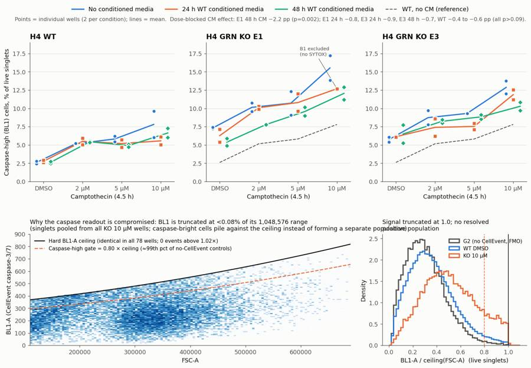
134
tool call · Bash
cd /task; python3 - <<'EOF'
s=open('work/figure.py').read()
s=s.replace("ax.set_title('Why the caspase readout is compromised: BL1 is truncated at <0.08% of its 1,048,576 range\\n(singlets pooled from all KO 10 µM wells; caspase-bright cells pile against the ceiling instead of forming a separate population)',fontsize=10,loc='left',color=INK)",
"ax.set_title('Caspase readout compromised: BL1-A is capped at <0.08% of its 1,048,576 range\\n(singlets, all KO 10 µM wells pooled; bright cells pile against the cap)',fontsize=10,loc='left',color=INK)")
s=s.replace("'B1 excluded\\n(no SYTOX)'","'n=1 here: B1 excluded\\n(no SYTOX stain)'")
s=s.replace("gs=fig.add_gridspec(2,3,height_ratios=[1.25,1],hspace=0.42,wspace=0.22)","gs=fig.add_gridspec(2,3,height_ratios=[1.25,1],hspace=0.45,wspace=0.25)")
open('work/figure.py','w').write(s)
EOF
python3 work/figure.py135
tool output
(Bash completed with no output)
136
tool call · Read
{
"file_path": "/task/outputs/figure.png"
}137
tool output
139
tool call · Bash
cd /task; sed -i "s/xy=(3-0.0,12.68),xytext=(2.05,17.2)/xy=(2.97,12.9),xytext=(1.2,16.6)/" work/figure.py && python3 work/figure.py && echo ok
140
tool output
ok
142
agent
The figure is done. Now I'm computing the comparison statistics for answer.json, then I'll write the report.
143
tool call · Bash
cd /task; cat > work/answer.py <<'EOF'
import pandas as pd, numpy as np, json
from scipy import stats
CS=pd.read_csv('/task/outputs/condition_summary.csv').set_index('condition')
W=pd.read_csv('work/well_metrics.csv').set_index('well')
excluded=json.load(open('work/excluded.json'))
M=W[(~W.index.str.startswith('G'))&(~W.index.isin(excluded))]
def blocked(line,cm):
d=M[M.cell_line==line]
X=pd.get_dummies(d[['dose','cm']]).astype(float)
X=np.c_[np.ones(len(d)),X[['dose_2uM','dose_5uM','dose_10uM','cm_CM24h','cm_CM48h']].values]; y=d.casp_live.values
b=np.linalg.lstsq(X,y,rcond=None)[0]; r=y-X@b; dof=len(y)-6; se=np.sqrt(np.diag(r@r/dof*np.linalg.inv(X.T@X)))
k={'CM24h':4,'CM48h':5}[cm]; return b[k],se[k],2*stats.t.sf(abs(b[k]/se[k]),dof),b[0]
def vals(c): return W.loc[CS.loc[c,'wells'].split(';'),'casp_live'].values
comps=[]
def simple(a,b,conf,extra=''):
va,vb=vals(a),vals(b); ma,mb=va.mean(),vb.mean(); diff=ma-mb
sep = (va.min()>vb.max()) or (va.max()<vb.min())
if abs(diff)>=1.5 and sep: dr='increase' if diff>0 else 'decrease'
else: dr='no_clear_change'
mag=f"{ma:.2f}% vs {mb:.2f}% of live singlets caspase-high: {diff:+.2f} percentage points ({ma/mb:.2f}-fold; wells a: {', '.join(f'{x:.2f}' for x in va)}; b: {', '.join(f'{x:.2f}' for x in vb)}){extra}"
comps.append(dict(comparison=f"{a} vs {b}",a=a,b=b,direction=dr,magnitude=mag,confidence=conf))
def pooled(line,cm,conf):
a=f'{line}_allDoses_{cm}'; b=f'{line}_allDoses_noCM'
est,se,p,base=blocked(line,cm)
dr='decrease' if (p<0.05 and est<=-1) else ('increase' if (p<0.05 and est>=1) else 'no_clear_change')
mag=(f"dose-blocked difference (OLS: metric ~ dose + CM, all wells of {line}) {est:+.2f} percentage points (SE {se:.2f}, p={p:.3f}); "
f"{100*est/base:+.0f}% of the fitted no-CM DMSO level ({base:.2f}%); pooled means {CS.loc[a,'mean']:.2f}% vs {CS.loc[b,'mean']:.2f}%")
comps.append(dict(comparison=f"{a} vs {b} (CM effect, all camptothecin doses)",a=a,b=b,direction=dr,magnitude=mag,confidence=conf))
return est,se,p
# baseline phenotype and assay window
simple('E1_DMSO_noCM','WT_DMSO_noCM','medium',' — KO phenotype reproduced (also with every dose and CM condition); KO cells are ~30% larger in FSC and no unstained KO control exists, so part may be autofluorescence')
simple('E3_DMSO_noCM','WT_DMSO_noCM','medium',' — KO phenotype reproduced; same size/autofluorescence caveat')
simple('WT_10uM_noCM','WT_DMSO_noCM','medium',' — camptothecin response (assay window) is small because BL1 is capped')
# CM effects
r_e1_48=pooled('E1','CM48h','low'); r_e1_24=pooled('E1','CM24h','low')
r_e3_24=pooled('E3','CM24h','low'); r_e3_48=pooled('E3','CM48h','low')
r_wt_24=pooled('WT','CM24h','low'); r_wt_48=pooled('WT','CM48h','low')
simple('E1_DMSO_CM48h','E1_DMSO_noCM','low')
simple('E3_DMSO_CM24h','E3_DMSO_noCM','low')
# restoration to WT?
simple('E1_DMSO_CM48h','WT_DMSO_noCM','medium',' — best-case CM-treated KO still ~2x WT: not restored')
simple('E3_DMSO_CM24h','WT_DMSO_noCM','medium',' — CM-treated KO still above WT: not restored')
simple('E1_allDoses_CM48h','WT_allDoses_noCM','medium',' — pooled over doses, balanced design')
simple('E3_allDoses_CM48h','WT_allDoses_noCM','medium',' — pooled over doses, balanced design')
for c in comps: print(c['direction'],c['confidence'],'|',c['comparison'],'|',c['magnitude'][:160])
gap_e1=blocked('E1','CM48h')
json.dump(comps,open('work/comps.json','w'),indent=1)
EOF
python3 work/answer.py144
tool output
increase medium | E1_DMSO_noCM vs WT_DMSO_noCM | 7.32% vs 2.61% of live singlets caspase-high: +4.70 percentage points (2.80-fold; wells a: 7.22, 7.41; b: 2.42, 2.81) — KO phenotype reproduced (also with every increase medium | E3_DMSO_noCM vs WT_DMSO_noCM | 5.74% vs 2.61% of live singlets caspase-high: +3.13 percentage points (2.20-fold; wells a: 5.40, 6.08; b: 2.42, 2.81) — KO phenotype reproduced; same size/autof increase medium | WT_10uM_noCM vs WT_DMSO_noCM | 7.80% vs 2.61% of live singlets caspase-high: +5.19 percentage points (2.99-fold; wells a: 9.60, 6.01; b: 2.42, 2.81) — camptothecin response (assay window) is decrease low | E1_allDoses_CM48h vs E1_allDoses_noCM (CM effect, all camptothecin doses) | dose-blocked difference (OLS: metric ~ dose + CM, all wells of E1) -2.22 percentage points (SE 0.60, p=0.002); -30% of the fitted no-CM DMSO level (7.34%); pool no_clear_change low | E1_allDoses_CM24h vs E1_allDoses_noCM (CM effect, all camptothecin doses) | dose-blocked difference (OLS: metric ~ dose + CM, all wells of E1) -0.82 percentage points (SE 0.62, p=0.203); -11% of the fitted no-CM DMSO level (7.34%); pool no_clear_change low | E3_allDoses_CM24h vs E3_allDoses_noCM (CM effect, all camptothecin doses) | dose-blocked difference (OLS: metric ~ dose + CM, all wells of E3) -0.93 percentage points (SE 0.54, p=0.100); -14% of the fitted no-CM DMSO level (6.66%); pool no_clear_change low | E3_allDoses_CM48h vs E3_allDoses_noCM (CM effect, all camptothecin doses) | dose-blocked difference (OLS: metric ~ dose + CM, all wells of E3) -0.70 percentage points (SE 0.54, p=0.208); -10% of the fitted no-CM DMSO level (6.66%); pool no_clear_change low | WT_allDoses_CM24h vs WT_allDoses_noCM (CM effect, all camptothecin doses) | dose-blocked difference (OLS: metric ~ dose + CM, all wells of WT) -0.59 percentage points (SE 0.44, p=0.193); -20% of the fitted no-CM DMSO level (3.01%); pool no_clear_change low | WT_allDoses_CM48h vs WT_allDoses_noCM (CM effect, all camptothecin doses) | dose-blocked difference (OLS: metric ~ dose + CM, all wells of WT) -0.44 percentage points (SE 0.44, p=0.324); -15% of the fitted no-CM DMSO level (3.01%); pool decrease low | E1_DMSO_CM48h vs E1_DMSO_noCM | 5.38% vs 7.32% of live singlets caspase-high: -1.93 percentage points (0.74-fold; wells a: 4.88, 5.88; b: 7.22, 7.41) no_clear_change low | E3_DMSO_CM24h vs E3_DMSO_noCM | 6.13% vs 5.74% of live singlets caspase-high: +0.39 percentage points (1.07-fold; wells a: 6.20, 6.06; b: 5.40, 6.08) increase medium | E1_DMSO_CM48h vs WT_DMSO_noCM | 5.38% vs 2.61% of live singlets caspase-high: +2.77 percentage points (2.06-fold; wells a: 4.88, 5.88; b: 2.42, 2.81) — best-case CM-treated KO still ~2x WT: no increase medium | E3_DMSO_CM24h vs WT_DMSO_noCM | 6.13% vs 2.61% of live singlets caspase-high: +3.52 percentage points (2.35-fold; wells a: 6.20, 6.06; b: 2.42, 2.81) — CM-treated KO still above WT: not restor no_clear_change medium | E1_allDoses_CM48h vs WT_allDoses_noCM | 8.70% vs 5.35% of live singlets caspase-high: +3.35 percentage points (1.63-fold; wells a: 12.91, 9.01, 7.80, 4.88, 11.19, 10.14, 7.76, 5.88; b: 9.60, 6.18, 5.1 no_clear_change medium | E3_allDoses_CM48h vs WT_allDoses_noCM | 8.46% vs 5.35% of live singlets caspase-high: +3.11 percentage points (1.58-fold; wells a: 10.85, 8.56, 8.00, 5.25, 9.72, 9.12, 8.47, 7.74; b: 9.60, 6.18, 5.13,
146
tool call · Bash
cd /task; python3 - <<'EOF'
s=open('work/answer.py').read()
s=s.replace("""simple('E1_allDoses_CM48h','WT_allDoses_noCM','medium',' — pooled over doses, balanced design')
simple('E3_allDoses_CM48h','WT_allDoses_noCM','medium',' — pooled over doses, balanced design')""",
"""def between(a,b,conf,extra=''):
la,ca=a.split('_allDoses_'); lb,cb=b.split('_allDoses_')
d=M[((M.cell_line==la)&(M.cm==ca))|((M.cell_line==lb)&(M.cm==cb))]
isA=((d.cell_line==la)&(d.cm==ca)).astype(float).values
X=np.c_[np.ones(len(d)),pd.get_dummies(d.dose)[['2uM','5uM','10uM']].astype(float).values,isA]; y=d.casp_live.values
bb=np.linalg.lstsq(X,y,rcond=None)[0]; r=y-X@bb; dof=len(y)-5; se=np.sqrt(np.diag(r@r/dof*np.linalg.inv(X.T@X)))
est,sse=bb[-1],se[-1]; p=2*stats.t.sf(abs(est/sse),dof)
dr='decrease' if (p<0.05 and est<=-1) else ('increase' if (p<0.05 and est>=1) else 'no_clear_change')
mag=f"dose-blocked difference (OLS: metric ~ dose + group) {est:+.2f} percentage points (SE {sse:.2f}, p={p:.2g}); pooled means {CS.loc[a,'mean']:.2f}% vs {CS.loc[b,'mean']:.2f}%{extra}"
comps.append(dict(comparison=f"{a} vs {b}",a=a,b=b,direction=dr,magnitude=mag,confidence=conf))
return est
g1=between('E1_allDoses_noCM','WT_allDoses_noCM','medium',' — KO-WT gap without CM')
g3=between('E3_allDoses_noCM','WT_allDoses_noCM','medium',' — KO-WT gap without CM')
between('E1_allDoses_CM48h','WT_allDoses_noCM','medium',f' — after 48 h CM E1 remains above WT; CM closed {100*r_e1_48[0]/-g1:.0f}% of the {g1:.2f} pp E1-WT gap')
between('E3_allDoses_CM24h','WT_allDoses_noCM','medium',' — after CM E3 remains above WT')""")
open('work/answer.py','w').write(s)
EOF
python3 work/answer.py | tail -5147
tool output
increase medium | E3_DMSO_CM24h vs WT_DMSO_noCM | 6.13% vs 2.61% of live singlets caspase-high: +3.52 percentage points (2.35-fold; wells a: 6.20, 6.06; b: 2.42, 2.81) — CM-treated KO still above WT: not restor increase medium | E1_allDoses_noCM vs WT_allDoses_noCM | dose-blocked difference (OLS: metric ~ dose + group) +5.57 percentage points (SE 0.75, p=1.3e-05); pooled means 10.92% vs 5.35% — KO-WT gap without CM increase medium | E3_allDoses_noCM vs WT_allDoses_noCM | dose-blocked difference (OLS: metric ~ dose + group) +3.81 percentage points (SE 0.54, p=2e-05); pooled means 9.16% vs 5.35% — KO-WT gap without CM increase medium | E1_allDoses_CM48h vs WT_allDoses_noCM | dose-blocked difference (OLS: metric ~ dose + group) +3.35 percentage points (SE 0.51, p=3.8e-05); pooled means 8.70% vs 5.35% — after 48 h CM E1 remains above increase medium | E3_allDoses_CM24h vs WT_allDoses_noCM | dose-blocked difference (OLS: metric ~ dose + group) +2.89 percentage points (SE 0.57, p=0.00039); pooled means 8.23% vs 5.35% — after CM E3 remains above WT
149
tool call · Bash
cd /task; python3 - <<'EOF'
import pandas as pd, numpy as np
W=pd.read_csv('work/well_metrics.csv').set_index('well')
W['cd']=100*W.Casp_high_dead/W.Dead.replace(0,np.nan)
st=W[(~W.index.isin(['B1','G1','G2','G3']))]
print('casp-high among dead (stained wells): %.1f-%.1f median %.1f; G2 %.1f'%(st.cd.min(),st.cd.max(),st.cd.median(),W.loc['G2','cd']))
print('total events',W.all_events.sum())
print('singlets % of cells range', (100*W.Singlets/W.Cells).min().round(1),(100*W.Singlets/W.Cells).max().round(1))
print('live % singlets G2',100*W.loc['G2','Live']/W.loc['G2','Singlets'])
for w in ['G4','G5','G6']: print(w, W.loc[w,['casp_live','dead','Singlets']].round(2).to_dict())
T=W[(~W.index.str.startswith('G'))&(W.index!='B1')]
print(T.groupby(['cell_line','cm']).dead.mean().unstack().round(1))
print(T.groupby(['cell_line','dose']).Singlets.mean().unstack().round(0))
print('dead E1 DMSO by cm', T[(T.cell_line=='E1')&(T.dose=='DMSO')].groupby('cm').dead.apply(list))
EOF150
tool output (error)
Exit code 1
casp-high among dead (stained wells): 21.3-48.3 median 38.1; G2 3.2
total events 1150506
singlets % of cells range 92.9 99.0
live % singlets G2 87.70811604280141
Traceback (most recent call last):
File "<stdin>", line 9, in <module>
File "/usr/local/lib/python3.12/site-packages/pandas/core/series.py", line 2821, in round
raise TypeError("Expected numeric dtype, got object instead.")
TypeError: Expected numeric dtype, got object instead.151
tool call · Bash
cd /task; python3 - <<'EOF'
import pandas as pd, numpy as np
W=pd.read_csv('work/well_metrics.csv').set_index('well')
for w in ['G4','G5','G6']: print(w, round(W.loc[w,'casp_live'],2), round(W.loc[w,'dead'],2), W.loc[w,'Singlets'])
T=W[(~W.index.str.startswith('G'))&(W.index!='B1')]
print(T.groupby(['cell_line','cm']).dead.mean().unstack().round(1))
print(T.groupby(['cell_line','dose']).Singlets.mean().unstack().round(0))
print(T.groupby(['cell_line','dose']).intact.mean().unstack().round(1))
EOF152
tool output
G4 7.34 3.43 6697 G5 6.7 7.83 8724 G6 2.48 1.38 14768 cm CM24h CM48h noCM cell_line E1 7.3 12.7 13.0 E3 12.5 16.2 13.8 WT 4.2 5.9 5.0 dose 10uM 2uM 5uM DMSO cell_line E1 1866.0 5324.0 4073.0 8284.0 E3 2024.0 5283.0 4466.0 7822.0 WT 10608.0 18697.0 15703.0 25388.0 dose 10uM 2uM 5uM DMSO cell_line E1 37.3 43.5 47.5 82.3 E3 43.9 56.9 55.6 74.8 WT 68.1 62.1 67.7 93.3
154
agent
Writing answer.json and report.md now.
155
tool call · Bash
cd /task; cat > work/write_answer.py <<'EOF'
import json
comps=json.load(open('work/comps.json'))
excluded=json.load(open('work/excluded.json'))
ans={
"question":"Can conditioned media from WT H4 cells (24 h or 48 h collections) restore wild-type levels of caspase-3/7 activity in H4 GRN KO cells (clones E1 and E3), at baseline (DMSO) and after camptothecin challenge (2, 5, 10 uM, 4.5 h)?",
"comparisons":comps,
"overall_answer":"no: WT conditioned media did not bring either GRN KO clone to WT caspase levels. Only E1 + 48 h CM showed a modest decrease (dose-blocked -2.2 percentage points, p=0.002, closing ~40% of the 5.6-point E1-WT gap). E1 + 24 h CM and E3 with either CM showed no clear change (-0.7 to -0.9 points, p>=0.10), and WT cells also dropped slightly with CM (-0.4 to -0.6 points). After CM the KO lines stayed 2.1-2.4x WT at baseline (E1 48 h CM 5.4% and E3 24 h CM 6.1% vs WT 2.6% caspase-high). Confidence is low: the BL1 (CellEvent) channel is capped at <0.08% of its range in every well, so caspase-bright cells are compressed against the cap, not resolved as a separate population.",
"assay_verdict":"needs_optimisation",
"next_action":"optimise_reagent_or_setting",
"next_change":{
"what":"BL1 (CellEvent caspase-3/7) acquisition setting, set and checked on a caspase positive control before the plate is repeated",
"from":"BL1 at 225 V with no caspase positive control on the plate. In all 78 wells BL1-A hits a hard FSC-dependent ceiling (about 370-830 counts, <0.08% of the 1,048,576 scale; 0 of 1.15 M events above 1.02x the ceiling), so caspase-bright cells pile against the cap. The CPT window is only 2.6% -> 7.8% caspase-high in WT",
"to":"Set the BL1 voltage/acquisition on CellEvent-stained H4 positive-control cells (e.g. WT H4 + 1 uM staurosporine ~4 h, or 10 uM camptothecin), run with unstained and single-stain controls, until a distinct caspase-bright population sits on scale >=10-fold above unstained cells with no ceiling. If the cap persists at every voltage, have the BL1 channel serviced. Then repeat the conditioned-media plate with that positive control on it, add an unstained KO control, and randomise the CM columns",
"why":"Every KO-vs-WT and CM comparison here depends on a channel that cannot record caspase-bright cells: the BL1 signal is truncated at the same ceiling in every file, including unstained cells. The direction of the effects looks plausible (CPT raises the BL1-high fraction, and dead cells are 21-48% BL1-high vs 3% in the SYTOX-only control), so the reagent probably works. But the size of any CM rescue cannot be measured until BL1 is on scale and checked against a positive control"},
"excluded_wells":excluded,
"caveats":[
"BL1 (CellEvent caspase-3/7, labelled 'AAV-GFP-GFP' in the FCS files) is truncated at a hard FSC-dependent ceiling (max BL1-A/ceiling 0.997-1.005 in every well, unstained included; ceiling ~370-830 counts on a 1,048,576 scale). There is no resolved caspase-positive population, so the 'caspase-high' gate (>0.80x ceiling) measures a compressed upper tail and underestimates real differences.",
"No caspase positive control (e.g. staurosporine) was run. The CellEvent-only control (G3) is on untreated cells, so the BL1 gate could only be anchored to the no-CellEvent controls (G1 0.70%, G2 0.89% caspase-high).",
"KO cells are ~30% larger in FSC than WT, and there is no unstained KO control. Part of the KO > WT difference may be autofluorescence, though the FSC-scaled gate partly corrects for this.",
"Plate-position confound: CM conditions are fixed column blocks (24 h CM = cols 1-4, 48 h CM = cols 5-8, no CM = cols 9-12). Within each row, no-CM wells were also acquired last (about 44 s per well). The small CM effects cannot be separated from column or acquisition-order effects.",
"Only 2 wells per condition (1 for E1 10 uM + 24 h CM after excluding B1), all from one plate on one day.",
"B1 (E1 10 uM, 24 h CM) excluded: its SYTOX AAdvanced stain appears to be missing (0.02% dead vs 9.9-25.5% in other E1 10 uM wells), so its live gate is invalid.",
"SYTOX AAdvanced was read in BL2 with poor live/dead separation (no clean bimodality; dim-dead events sit near the 3,000-6,000 boundary). E3 has a higher BL2 background, so its dead fraction may be overestimated. Live-gated caspase values partly depend on this boundary.",
"Camptothecin caused heavy cell loss in the KO lines (E1 10 uM: ~1,900 singlets vs ~8,300 with DMSO). Seven KO 10 uM wells have <1,500 live singlets (binomial SE ~1 percentage point).",
"The CM was not characterised (no progranulin ELISA on the 24 h/48 h collections), so a negative result cannot separate 'PGRN does not rescue' from 'too little PGRN delivered'."
]
}
json.dump(ans,open('/task/outputs/answer.json','w'),indent=1)
print('ok', len(comps))
EOF
python3 work/write_answer.py156
tool output
ok 17
158
tool call · Bash
cd /task; sed -i 's/stayed 2.1-2.4x WT at baseline (E1 48 h CM 5.4% and E3 24 h CM 6.1% vs WT 2.6% caspase-high)/stayed 2.1-2.5x WT at baseline (DMSO + CM: E1 5.4-6.3%, E3 6.1-6.5% vs WT 2.6% caspase-high)/' work/write_answer.py && python3 work/write_answer.py && python3 -c "
import json;a=json.load(open('/task/outputs/answer.json'));print(a['overall_answer'])"159
tool output
ok 17 no: WT conditioned media did not bring either GRN KO clone to WT caspase levels. Only E1 + 48 h CM showed a modest decrease (dose-blocked -2.2 percentage points, p=0.002, closing ~40% of the 5.6-point E1-WT gap). E1 + 24 h CM and E3 with either CM showed no clear change (-0.7 to -0.9 points, p>=0.10), and WT cells also dropped slightly with CM (-0.4 to -0.6 points). After CM the KO lines stayed 2.1-2.5x WT at baseline (DMSO + CM: E1 5.4-6.3%, E3 6.1-6.5% vs WT 2.6% caspase-high). Confidence is low: the BL1 (CellEvent) channel is capped at <0.08% of its range in every well, so caspase-bright cells are compressed against the cap, not resolved as a separate population.
160
tool call · Write
{
"file_path": "/task/outputs/report.md",
"content": "# Conditioned-media caspase plate (H4 WT vs GRN KO E1/E3), acquired 16-Dec-2022\n\n## Question\nCan conditioned media (CM) collected from WT H4 cells after 24 h or 48 h bring caspase-3/7 activity in H4 GRN KO cells (E1, E3) back to WT levels? This was tested at baseline (DMSO) and after a 4.5 h camptothecin (CPT) challenge at 2, 5 and 10 \u00b5M.\n\nDesign: rows A/D = WT, B/E = E1, C/F = E3. Columns 1\u20134 = 24 h CM, 5\u20138 = 48 h CM, 9\u201312 = no CM. Within each block the order is 10 \u00b5M, 5 \u00b5M, 2 \u00b5M CPT, then DMSO. That gives 2 wells per condition. Row G holds the controls: unstained (G1), SYTOX-only (G2), CellEvent-only (G3), and fully stained untreated E1, E3 and WT (G4, G5, G6).\n\n## Methods\n**Channel assignment.** I used the plan's reagent list and voltages, not the stale `$PnS` labels.\n- BL1 = CellEvent Caspase-3/7 Green. The file label \"AAV-GFP-GFP\" is a leftover from an earlier experiment; the stored 225 V matches the plan's \"BL1 (caspase)-225\".\n- BL2 = SYTOX AAdvanced (350 V).\n- The controls confirm this. G2 (SYTOX only) has a bright BL2 dead population, with BL2-A up to 4.7\u00d710\u2075. G1 and G3 have no BL2-bright events (max 4,715 and 3,208).\n\n**Compensation.** None (`uncompensated`). The FCS spillover matrix is identity, and G3 shows no CellEvent spill into BL2: its BL2 99.5th percentiles are 1,550\u20132,700 vs 1,650\u20133,270 in unstained G1.\n\n**Gating.** One FlowKit 1.2.3 strategy was applied unchanged to all 78 files (`gates.xml`); all axes are raw linear values.\n1. `Cells`: rectangle with FSC-A \u2265 110,000 and 40,000 \u2264 SSC-A \u2264 1,040,000. This removes debris and saturated SSC.\n2. `Singlets`: polygon on FSC-A vs FSC-H keeping FSC-H \u2265 0.38 \u00d7 FSC-A and FSC-A \u2264 690,000. This removes doublets and the top of FSC-A, which tops out at about 710k. Singlets are 93\u201399% of Cells.\n3. `Live` / `Dead`: polygons on FSC-A vs BL2-A, split by a line running from BL2 = 3,000 at FSC-A 110k to 6,000 at 690k.\n - The line slopes because BL2 background rises with cell size.\n - The no-SYTOX controls have BL2 99.5th percentiles of 1,650\u20133,270 across FSC.\n - All negative BL2 values (baseline-restored SYTOX background) count as live.\n4. `Casp_high_live` (role `marker_positive`, parent Live) and `Casp_high_dead` (parent Dead): polygons on FSC-A vs BL1-A keeping BL1-A > 0.80 \u00d7 ceiling(FSC-A).\n - ceiling(FSC-A) = 320.98 + 3.803\u00d710\u207b\u2074\u00b7FSC + 4.951\u00d710\u207b\u00b9\u2070\u00b7FSC\u00b2, fitted to the 99.95th percentile of BL1-A in 10k-wide FSC bins, all files pooled (see Results).\n - The 0.80 threshold is about the 99th percentile of the controls without CellEvent: G1 unstained gives 0.70% positive, G2 SYTOX-only (the FMO for BL1) gives 0.89%.\n\n**Metric.** % caspase-high of live singlets = 100 \u00d7 `Casp_high_live` / `Live`, per well; then mean \u00b1 SD across wells (`condition_summary.csv`). No normalisation.\n\n**Statistics.**\n- CM effect within each cell line: OLS of the per-well metric on dose (4 levels, as a blocking factor) plus CM (3 levels). That is 24 wells per line (23 for E1).\n- KO vs WT: the same model, with cell-line group in place of CM.\n\n**QC** (details in `flags.csv`).\n- Event rate over time was stable in every well (0.5-s bins within 0.63\u20131.66\u00d7 the median rate), with no clogs or dry wells, except a start-up delay in E10.\n- SSC saturation affects \u2264 0.07% of events and FSC-A > 695k \u2264 0.45%.\n- Stain presence was checked per well from the BL2 negative tail and the BL2-W > 0 fraction (BL2-H \u2265 1000).\n\n## Results\n**1. The caspase channel is truncated plate-wide (main technical finding).**\n- BL1-A never exceeds a smooth, FSC-dependent ceiling of about 370 counts at FSC 110k and about 820 at 690k. That is < 0.08% of the 1,048,576 range.\n- The maximum BL1-A/ceiling is 0.997\u20131.005 in **every one of the 78 wells**, unstained G1 included. None of the 1,150,506 events goes above 1.02\u00d7 the ceiling.\n- BL1-H stays below its width threshold of 1000 for essentially all events (BL1-W = 0 everywhere).\n- In CPT-treated KO wells, events pile up flat against the ceiling and then stop abruptly (figure, bottom panels), so caspase-bright cells form no separate population.\n- The signal underneath is still CellEvent-derived and behaves as expected:\n - Dead (SYTOX+) cells are 21\u201348% BL1-high (median 38%) in stained wells vs 3.2% in G2, which has no CellEvent.\n - CPT raises the BL1-high fraction in a dose-dependent way.\n- So the reagent probably works, but BL1 acquisition squashes the readout. The difference between conditions is therefore real in direction, but compressed and under-estimated in size.\n\n**2. KO phenotype reproduced.** % caspase-high of live singlets (mean of wells):\n\n| line / CPT | no CM | 24 h CM | 48 h CM |\n|---|---|---|---|\n| WT DMSO | 2.61 | 2.77 | 2.62 |\n| WT 2 \u00b5M | 5.16 | 5.50 | 5.44 |\n| WT 5 \u00b5M | 5.81 | 5.19 | 4.92 |\n| WT 10 \u00b5M | 7.80 | 5.56 | 6.64 |\n| E1 DMSO | 7.32 | 6.28 | 5.38 |\n| E1 2 \u00b5M | 10.14 | 10.09 | 7.78 |\n| E1 5 \u00b5M | 10.71 | 10.79 | 9.57 |\n| E1 10 \u00b5M | 15.52 | 12.68 (n=1) | 12.05 |\n| E3 DMSO | 5.74 | 6.13 | 6.49 |\n| E3 2 \u00b5M | 8.73 | 7.40 | 8.23 |\n| E3 5 \u00b5M | 9.31 | 7.53 | 8.84 |\n| E3 10 \u00b5M | 12.87 | 11.87 | 10.28 |\n\n- Without CM, the dose-blocked differences from WT are +5.57 percentage points for E1 (SE 0.75, p = 1\u00d710\u207b\u2075) and +3.81 for E3 (SE 0.54, p = 2\u00d710\u207b\u2075).\n- At DMSO that is 2.8\u00d7 WT for E1 and 2.2\u00d7 for E3.\n- The untreated row-G wells agree: G4 E1 7.3%, G5 E3 6.7%, G6 WT 2.5%.\n- CPT raised WT from 2.6% to 7.8% at 10 \u00b5M, so the assay window is only about 3\u00d7.\n\n**3. Effect of conditioned media** (dose-blocked difference from no CM):\n\n| line | 24 h CM | 48 h CM |\n|---|---|---|\n| E1 | \u22120.82 pp (SE 0.62, p = 0.20) | **\u22122
… [5,309 more characters not shown]161
tool output
File created successfully at: /task/outputs/report.md (file state is current in your context — no need to Read it back)
163
tool call · Bash
cd /task; python3 - <<'EOF'
p='/task/outputs/report.md'; s=open(p).read()
s=s.replace("(BL1-W = 0 everywhere)","(BL1-W is non-zero for only 2 events plate-wide)")
s=s.replace("(live-singlet median about 380k vs 295k)","(live-singlet FSC-A medians about 320–400k vs 280–305k)")
open(p,'w').write(s)
EOF
grep -n "BL1-W\|FSC-A medians" outputs/report.md164
tool output
42:- BL1-H stays below its width threshold of 1000 for essentially all events (BL1-W is non-zero for only 2 events plate-wide). 113: - There is no unstained KO control. KO cells are about 30% larger in FSC (live-singlet FSC-A medians about 320–400k vs 280–305k), so some of the KO > WT difference may be autofluorescence; the FSC-scaled gate only partly corrects for this.
166
agent
Now a full validation pass over every deliverable against the spec.
167
tool call · Bash
cd /task; cat > work/validate.py <<'EOF'
import flowkit as fk, pandas as pd, numpy as np, json, re
O='/task/outputs'
lay=pd.read_csv('/task/inputs/plate_layout.csv')
g=fk.parse_gating_xml(f'{O}/gates.xml')
gate_ids=[gid for gid,_ in g.get_gate_ids()]
print('gates:',gate_ids)
c=pd.read_csv(f'{O}/counts.csv',keep_default_na=False)
assert list(c.columns)==['file','well','population','role','parent','count','pct_of_parent']
assert set(c.file)==set(lay.file) and len(c)==78*7
pops=set(c.population)-{'all_events'}; assert pops==set(gate_ids), (pops,gate_ids)
for role in ['cells','singlets','live','marker_positive']:
assert c[c.role==role].population.nunique()==1 and (c.role==role).sum()==78
# recompute counts from saved gates
bad=0
for _,r in lay.iterrows():
s=fk.Sample('/task/inputs/raw/'+r.file); res=g.gate_sample(s)
sub=c[c.file==r.file].set_index('population')
assert int(sub.loc['all_events','count'])==s.event_count
for pop in gate_ids:
if int(res.get_gate_count(pop))!=int(sub.loc[pop,'count']): bad+=1
par=sub.loc[pop,'parent']; pc=int(sub.loc[par,'count'])
exp=100*int(sub.loc[pop,'count'])/pc if pc else None
if exp is not None and abs(float(sub.loc[pop,'pct_of_parent'])-exp)>1e-3: bad+=1
assert sub.loc['all_events','pct_of_parent']=='' and sub.loc['all_events','parent']=='none'
print('count mismatches:',bad)
# parent relationships match gate hierarchy
for pop in gate_ids:
path=g.find_matching_gate_paths(pop)[0]; par=path[-1] if path[-1]!='root' else 'all_events'
assert set(c[c.population==pop].parent)=={par},(pop,par)
f=pd.read_csv(f'{O}/flags.csv',keep_default_na=False)
assert list(f.columns)==['file','well','issue_type','evidence','decision'] and len(f)==78 and set(f.well)==set(lay.well)
assert f.issue_type.isin(['none','clog','ran_dry','too_few_events','saturation','bad_control','mislabel','other']).all()
assert f.decision.isin(['keep','keep_with_note','exclude']).all()
for _,r in f.iterrows():
if r.issue_type!='none': assert r.evidence and re.search(r'\d',r.evidence),r.well
cs=pd.read_csv(f'{O}/condition_summary.csv',keep_default_na=False)
assert list(cs.columns)==['condition','wells','n_wells_used','mean','sd','metric_definition','normalisation_applied']
assert cs.condition.is_unique and not cs.condition.str.contains(',').any()
excl=set(f[f.decision=='exclude'].well)
W=pd.read_csv('work/well_metrics.csv').set_index('well')
for _,r in cs.iterrows():
ws=r.wells.split(';'); assert len(ws)==int(r.n_wells_used); assert not (set(ws)&excl)
v=W.loc[ws,'casp_live']; assert abs(v.mean()-float(r['mean']))<1e-2
if len(ws)==1: assert r.sd==''
else: assert abs(v.std(ddof=1)-float(r.sd))<1e-2
a=json.load(open(f'{O}/answer.json'))
assert set(a)=={'question','comparisons','overall_answer','assay_verdict','next_action','next_change','excluded_wells','caveats'}
for cp in a['comparisons']:
assert cp['a'] in set(cs.condition) and cp['b'] in set(cs.condition), cp
assert cp['direction'] in ['increase','decrease','no_clear_change'] and cp['confidence'] in ['high','medium','low'] and re.search(r'\d',cp['magnitude'])
assert re.match(r'^(yes|partial|no):',a['overall_answer'])
assert a['assay_verdict'] in ['fit_for_purpose','needs_optimisation','not_fit_for_purpose']
assert a['next_action'] in ['proceed_as_planned','repeat_unchanged','repeat_with_change','optimise_reagent_or_setting','change_treatment_or_timing','switch_assay','stop']
assert set(a['next_change'])=={'what','from','to','why'}
assert set(a['excluded_wells'])==excl
rep=open(f'{O}/report.md').read()
hs=[l.strip() for l in rep.splitlines() if l.startswith('## ')]
assert hs==['## Question','## Methods','## Results','## Conclusion','## Caveats','## Recommendation'],hs
print('ALL CHECKS PASSED; excluded',excl)
EOF
python3 work/validate.py; ls -la outputs168
tool output
gates: ['Cells', 'Singlets', 'Live', 'Casp_high_live', 'Dead', 'Casp_high_dead']
count mismatches: 0
ALL CHECKS PASSED; excluded {'B1'}
total 368
drwxr-xr-x 2 root root 4096 Nov 10 17:28 .
drwxr-xr-x 5 root root 4096 Nov 10 17:08 ..
-rw-r--r-- 1 root root 11097 Nov 10 17:27 answer.json
-rw-r--r-- 1 root root 13383 Nov 10 17:24 condition_summary.csv
-rw-r--r-- 1 root root 45467 Nov 10 17:22 counts.csv
-rw-r--r-- 1 root root 256675 Nov 10 17:25 figure.png
-rw-r--r-- 1 root root 7444 Nov 10 17:24 flags.csv
-rw-r--r-- 1 root root 9099 Nov 10 17:22 gates.xml
-rw-r--r-- 1 root root 10837 Nov 10 17:28 report.md170
tool call · Bash
cd /task; python3 -c "
import pandas as pd; f=pd.read_csv('outputs/flags.csv',keep_default_na=False)
for _,r in f[f.issue_type!='none'].iterrows(): print(r.well,r.issue_type,r.decision,'|',r.evidence[:400]); print()
" | head -40171
tool output
B1 other exclude | SYTOX AAdvanced (BL2) stain appears missing: only 1 of 4070 singlets (0.02%) fall in the Dead gate vs 9.9-25.5% in the other five E1 10uM wells; BL2-W>0 (BL2-H>=1000) in 3.2% of events vs 8.2-50.5% in all other SYTOX-stained wells (1.4% in unstained G1); BL2-A>20000 in 0.01% of events. Live gate therefore contains dead cells (Casp_high_live 19.7% vs 11.2-17.2% in replicate wells) B9 too_few_events keep_with_note | Only 1099 live singlets (3505 total events; 43% of events in the Cells gate) after camptothecin-induced cell loss; binomial SE of the 17.2% caspase-high fraction is about 1.1 percentage points. Usable but less precise C5 too_few_events keep_with_note | Only 894 live singlets (3151 total events; 46% of events in the Cells gate) after camptothecin-induced cell loss; binomial SE of the 10.9% caspase-high fraction is about 1.0 percentage points. Usable but less precise C9 too_few_events keep_with_note | Only 1310 live singlets (4067 total events; 48% of events in the Cells gate) after camptothecin-induced cell loss; binomial SE of the 12.0% caspase-high fraction is about 0.9 percentage points. Usable but less precise E5 too_few_events keep_with_note | Only 1233 live singlets (4437 total events; 36% of events in the Cells gate) after camptothecin-induced cell loss; binomial SE of the 11.2% caspase-high fraction is about 0.9 percentage points. Usable but less precise E9 too_few_events keep_with_note | Only 982 live singlets (4147 total events; 33% of events in the Cells gate) after camptothecin-induced cell loss; binomial SE of the 13.8% caspase-high fraction is about 1.1 percentage points. Usable but less precise E10 other keep_with_note | Acquisition start-up irregularity: first event at 0.54 s (0.013-0.026 s in every other well) and only 15 events in the first 1 s vs ~330 events/s for the rest of the run (lowest 0.5-s bin 0.09x median rate); live-singlet FSC-A median about 452k vs 321-363k in the other five E1 5uM wells. Rate is stable after ~1.3 s and the caspase-high value (9.09% of Live) is within the replicate range (9.01-12.3 F5 too_few_events keep_with_note | Only 1070 live singlets (3184 total events; 41% of events in the Cells gate) after camptothecin-induced cell loss; binomial SE of the 9.7% caspase-high fraction is about 0.9 percentage points. Usable but less precise F9 too_few_events keep_with_note | Only 1062 live singlets (3608 total events; 35% of events in the Cells gate) after camptothecin-induced cell loss; binomial SE of the 13.7% caspase-high fraction is about 1.1 percentage points. Usable but less precise G3 bad_control keep_with_note | CellEvent-only control is on untreated WT cells, so it contains no caspase-bright population to set or verify the BL1 gate: Casp_high_live 2.24% vs 0.70% unstained (G1) and 0.89% SYTOX-only (G2); BL1-A max 769 (same instrument ceiling as unstained). No caspase positive control (e.g. staurosporine) was on the plate. Kept as the CellEvent background reference
173
tool call · Bash
cd /task; grep -n "12.6–50.5" outputs/report.md; sed -i 's/vs 12.6–50.5% in all other stained wells/vs 8.2–50.5% in all other SYTOX-stained wells/' outputs/report.md; grep -n "50.5" outputs/report.md
174
tool output
91:- **B1 excluded**: SYTOX appears to be missing. It has 0.02% dead vs 9.9–25.5% in the other E1 10 µM wells, and BL2-W > 0 in 3.2% of events vs 12.6–50.5% in all other stained wells. 41:- The maximum BL1-A/ceiling is 0.997–1.005 in **every one of the 78 wells**, unstained G1 included. None of the 1,150,506 events goes above 1.02× the ceiling. 91:- **B1 excluded**: SYTOX appears to be missing. It has 0.02% dead vs 9.9–25.5% in the other E1 10 µM wells, and BL2-W > 0 in 3.2% of events vs 8.2–50.5% in all other SYTOX-stained wells. [This command modified 1 file you've previously read: outputs/report.md. Call Read before editing.]
176
tool call · Read
{
"file_path": "/task/outputs/figure.png"
}177
tool output
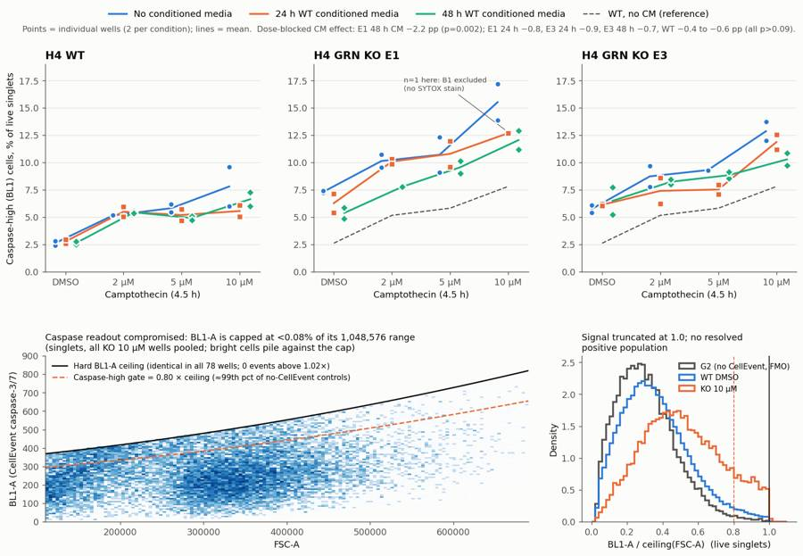
179
agent
**Answer: no.** WT conditioned media did not bring either knockout clone back to WT caspase levels. The bigger problem is that the caspase channel was faulty on this run, so the result is low confidence. Verdict: `needs_optimisation`; next action: `optimise_reagent_or_setting`.
All seven deliverables are in `/task/outputs/`. A checker confirmed they meet the spec, and the reloaded `gates.xml` reproduces every number in `counts.csv` exactly.
**The caspase readout (BL1) hit a hard ceiling**
- In every one of the 78 wells, including the unstained control, BL1 is capped at about 370–830 counts. That is under 0.08% of its 1,048,576 range, and the cap rises with cell size. None of the 1.15 million events goes past it.
- Caspase-bright cells pile up against the cap instead of forming a separate positive population.
- The signal underneath still behaves like real CellEvent staining:
- Camptothecin raises it with dose.
- Dead cells are 21–48% caspase-high, against 3% in the SYTOX-only control, which has no CellEvent.
So the reagent probably works, but differences are squashed and under-estimated.
- My caspase-high gate is BL1 above 0.80 × the cap. That threshold is about the 99th percentile of the two controls without CellEvent.
**Biology** (% caspase-high among live single cells)
- **Knockout effect reproduced:** with DMSO, E1 is 7.3% and E3 5.7%, against WT 2.6%. Across all doses that is E1 +5.6 and E3 +3.8 percentage points (p ≈ 10⁻⁵).
- **Conditioned media:**
- E1 with 48 h media is the only change that holds up: −2.2 points (p = 0.002), closing about 40% of the gap to WT.
- E1 with 24 h media and E3 with either collection show no clear change (−0.7 to −0.9 points).
- WT cells drift down slightly with media too (−0.4 to −0.6 points), so even the E1 effect is only partly knockout-specific.
- After media, both knockouts with DMSO are still 2.1–2.5× WT.
- **Layout confound:** each media condition is a fixed column block, and the no-media wells were also run last in each row. Effects of 2 points or less can't be separated from plate position.
**Flags**
- **B1 excluded:** its SYTOX dead-cell stain appears to be missing (0.02% dead vs 9.9–25.5% in its replicates), so its live gate is invalid. That leaves E1 at 10 µM with 24 h media as a single well.
- **E10** kept with a note: acquisition started late (first event at 0.54 s) and the cells are unusually large, but its value sits within the replicate range.
- **Seven knockout 10 µM wells** kept with a note: fewer than 1,500 live cells each.
- **G3** (caspase-only control) kept with a note: it is on untreated cells, so it can't show the stain works. There was no caspase positive control on the plate.
**Recommendation:** before repeating the plate, re-set BL1 using a CellEvent-stained positive control, for example WT cells with 1 µM staurosporine for about 4 h. The goal is a distinct caspase-bright population on scale with no ceiling. If the cap is there at every voltage, have the instrument's BL1 channel checked. Then repeat with these additions:
- that positive control on the plate, plus an unstained control for each knockout line;
- the media conditions randomised across columns instead of in blocks;
- SYTOX in every stained well, ideally read in BL3 for better live/dead separation;
- progranulin measured in the conditioned media.
Two judgement calls affect the numbers. The SYTOX live/dead separation in BL2 is weak, so the live/dead boundary is my choice. And knockout cells are about 30% larger than WT with no unstained knockout control, so part of the knockout > WT gap may be cell autofluorescence. Both are written up in the report caveats.
Files are in `/task/outputs/`:
- report.md
- figure.png
- answer.json
- condition_summary.csv
- flags.csv
- counts.csv
- gates.xml
final result
**Answer: no.** WT conditioned media did not bring either knockout clone back to WT caspase levels. The bigger problem is that the caspase channel was faulty on this run, so the result is low confidence. Verdict: `needs_optimisation`; next action: `optimise_reagent_or_setting`. All seven deliverables are in `/task/outputs/`. A checker confirmed they meet the spec, and the reloaded `gates.xml` reproduces every number in `counts.csv` exactly. **The caspase readout (BL1) hit a hard ceiling** - In every one of the 78 wells, including the unstained control, BL1 is capped at about 370–830 counts. That is under 0.08% of its 1,048,576 range, and the cap rises with cell size. None of the 1.15 million events goes past it. - Caspase-bright cells pile up against the cap instead of forming a separate positive population. - The signal underneath still behaves like real CellEvent staining: - Camptothecin raises it with dose. - Dead cells are 21–48% caspase-high, against 3% in the SYTOX-only control, which has no CellEvent. So the reagent probably works, but differences are squashed and under-estimated. - My caspase-high gate is BL1 above 0.80 × the cap. That threshold is about the 99th percentile of the two controls without CellEvent. **Biology** (% caspase-high among live single cells) - **Knockout effect reproduced:** with DMSO, E1 is 7.3% and E3 5.7%, against WT 2.6%. Across all doses that is E1 +5.6 and E3 +3.8 percentage points (p ≈ 10⁻⁵). - **Conditioned media:** - E1 with 48 h media is the only change that holds up: −2.2 points (p = 0.002), closing about 40% of the gap to WT. - E1 with 24 h media and E3 with either collection show no clear change (−0.7 to −0.9 points). - WT cells drift down slightly with media too (−0.4 to −0.6 points), so even the E1 effect is only partly knockout-specific. - After media, both knockouts with DMSO are still 2.1–2.5× WT. - **Layout confound:** each media condition is a fixed column block, and the no-media wells were also run last in each row. Effects of 2 points or less can't be separated from plate position. **Flags** - **B1 excluded:** its SYTOX dead-cell stain appears to be missing (0.02% dead vs 9.9–25.5% in its replicates), so its live gate is invalid. That leaves E1 at 10 µM with 24 h media as a single well. - **E10** kept with a note: acquisition started late (first event at 0.54 s) and the cells are unusually large, but its value sits within the replicate range. - **Seven knockout 10 µM wells** kept with a note: fewer than 1,500 live cells each. - **G3** (caspase-only control) kept with a note: it is on untreated cells, so it can't show the stain works. There was no caspase positive control on the plate. **Recommendation:** before repeating the plate, re-set BL1 using a CellEvent-stained positive control, for example WT cells with 1 µM staurosporine for about 4 h. The goal is a distinct caspase-bright population on scale with no ceiling. If the cap is there at every voltage, have the instrument's BL1 channel checked. Then repeat with these additions: - that positive control on the plate, plus an unstained control for each knockout line; - the media conditions randomised across columns instead of in blocks; - SYTOX in every stained well, ideally read in BL3 for better live/dead separation; - progranulin measured in the conditioned media. Two judgement calls affect the numbers. The SYTOX live/dead separation in BL2 is weak, so the live/dead boundary is my choice. And knockout cells are about 30% larger than WT with no unstained knockout control, so part of the knockout > WT gap may be cell autofluorescence. Both are written up in the report caveats. Files are in `/task/outputs/`: - report.md - figure.png - answer.json - condition_summary.csv - flags.csv - counts.csv - gates.xml